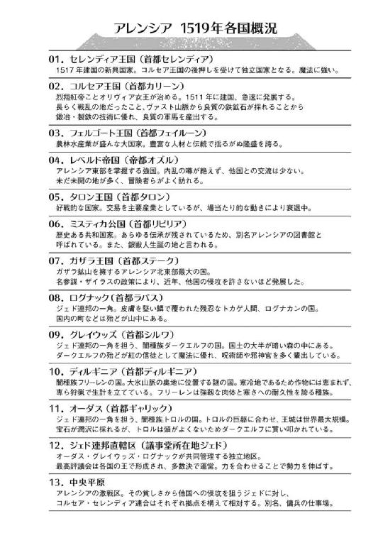
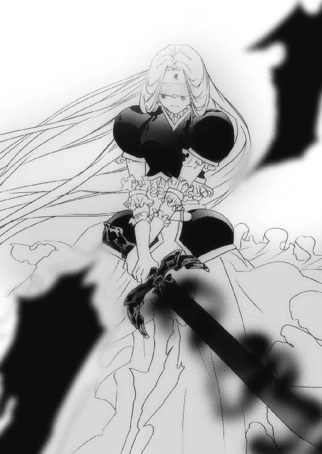
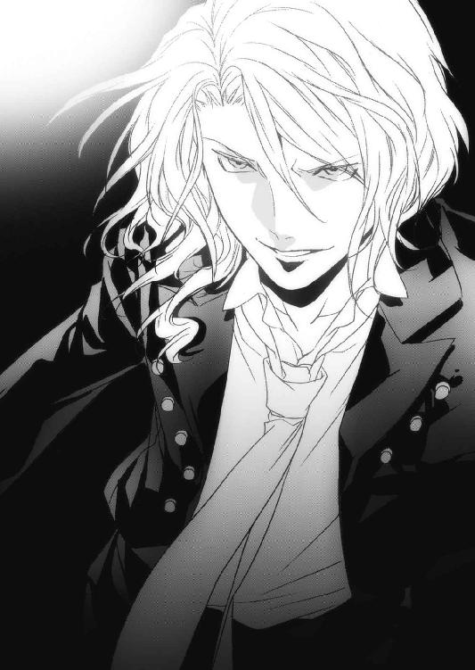
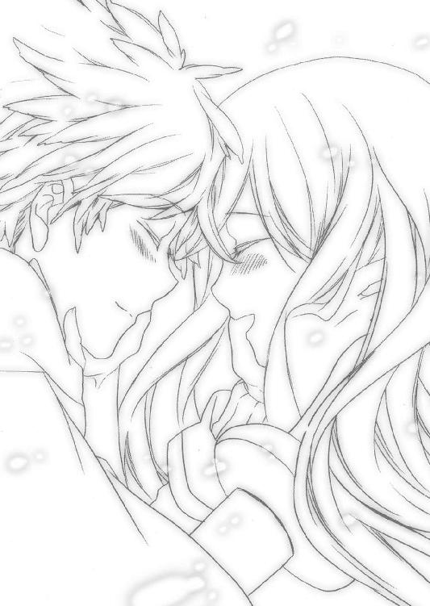

| カナクのキセキ5 (富士見ファンタジア文庫) | |
| 上総 朋大 | |
| 富士見書房 (2012) | |

カナクのキセキ５
上総朋大

富士見ファンタジア文庫
本作品の全部または一部を無断で複製、転載、配信、送信したり、ホームページ上に転載することを禁止します。また、本作品の内容を無断で改変、改ざん等を行うことも禁止します。
本作品購入時にご承諾いただいた規約により、有償・無償にかかわらず本作品を第三者に譲渡することはできません。
本作品を示すサムネイルなどのイメージ画像は、再ダウンロード時に予告なく変更される場合があります。
本作品は縦書きでレイアウトされています。
また、ご覧になるリーディングシステムにより、表示の差が認められることがあります。
口絵・本文イラスト さらちよみ
Ｃｏｎｔｅｎｔｓ

第一章・表 アレンシア大戦【オリヴィア】
双月暦一五一九年十月十二日、午前十時。
アレンシア西方、旧リヴァルト王国領。
かつてこの地は心優しきリヴァルト王の統治下、王国の人々は平穏に暮らしていた。
だがある日、突然闇種族トロルの国オーダスに攻め込まれ、情景豊かなリヴァルト王国は一夜にして滅び去り、アレンシアの地図から消えた。
それ以来、この地に住むものはなく、小鳥たちが飛び交っていた空はジェドを覆う黒雲に包まれ、草花が歌っていた草原は土が剝き出しとなった荒れ野と化し、荘厳なリヴァルト城は亡霊が住むと噂される廃城になっていた。
誰もが凜々しい王と麗しき王妃が住んでいたこのリヴァルト王国を忘れてしまっていたが、今はアレンシアで最も注目を浴びる地だった。
それは決して、このアレンシアに住むものだけではない。暗雲垂れ込める空を、大鷲が獲物を探すように周回する。その下を数え切れないほどの鴉が舞い、少し離れた丘の上では死肉を狙った魔物や獣たちが、遠巻きに二つの軍勢を眺めていた。
アレンシア各地で暴れていた黒夢の魔王の下僕〝夢魔〟は全てこの地に集結して「魔王軍」を結成し、その数は十万余にまで膨れ上がっていた。
それに対するはアレンシアの陽種族、闇種族が力を合わせ、全ての国が精鋭を出して魔王討伐のために編成された「アレンシア連合軍」である。
その数、およそ二十五万。
魔王軍、アレンシア連合軍はそれぞれ陣を組み、双方ゆっくりと近づいて行く。
これから起こるであろう大戦の前触れにしては、静かなものだった。
アレンシア連合軍総帥であるコルセア王国のオリヴィア女王が出兵した兵は、四万にのぼる。オリヴィアはいつも通り目と鼻を覆った仮面を被り、紅の胸当てに銀のレッグスと白のロングスカートを穿き、三つ編みにした栗毛色の髪を揺らしながら、魔王の城へと進んでいた。
その時、コルセア軍の行く手を阻むように、黒夢の魔王カナクが姿を現した。
カナクは「空中浮揚魔法」の魔法陣を背に、暁の信徒である聖神官のローブをはためかせて宙に浮き、オリヴィアを見下ろしていた。その体は耳と尻尾が生えた銀獣人のものだったが、顔や髪に黒い模様が浮かび、鋭い目には威厳すら漂う。
カナクからは強烈なマナに混じって人を不快にさせる力が溢れ、まるで黒い炎に包まれているかのようだった。
（あれが......あれがあの気弱だった、カナクなのか？）
オリヴィアがカナクと再会したのは、カナクが石碑巡りでコルセアの石碑を見るために王都カリーンを訪れてきた時だった。その頃のカナクはどちらかというと線が細く、旅の供であるユーリエに終始押され気味の、おとなしい少年だった。
だが今のカナクは自信に溢れ、この大軍を前にして微塵も臆することがなかった。
「お久しぶりです、オリヴィア女王さま」
カナクは空に浮かんだまま、オリヴィアに向かって優雅に一礼した。
その声はオリヴィアが記憶しているあの少年カナクのものではなく、まるで聖者に声をかけられているかのように深くて、人の心を裸にしてしまうような甘美な響きがあった。
「カナク......ユーリエの許へ行けるなどという諫言に惑わされて道を誤るな。今からでも遅くはない。このアレンシア連合軍二十五万に蹂躙される前に、速やかに投降せよ！」
オリヴィアの声が棚曇りの空に木霊する。
カナクは静かに肩を揺らし、両手を広げて大声で笑った。
「甘い！ 甘いですね女王さま。ここまで来たらもう決戦しかないでしょう？」
その時、オリヴィアの左右後方から数え切れないほどの光の矢が、カナクに向かって飛んでいった。
グレイウッズ軍の魔術師団から放たれた、無数の魔法の矢だった。
カナクはギラリと目を光らせ、指先で黒い魔法陣を瞬時に描くと、目の前に幾重にも重なる光の防護壁が出現した。
魔法の矢は次々とカナクが張った障壁に当たり、弾けていく。
ついに一本たりとも、魔法の矢はカナクの体を捉えることができなかった。
「ま、まだ攻撃命令は下していないぞ！ 〝赤〟の伝令を飛ばせ！」
オリヴィアは険しい声で後方に伝令を走らせながら、たった今カナクが描いた魔法陣のその速度に驚愕していた。
今、確かにカナクはあの速さで、マナではなく黒夢の力で上級魔法「多重防護壁の魔法」を使っていた。黒夢の力を自在に操るようになったカナクは、魔導師としてもかなりの腕を持っている、ということになる。
その時、コルセア軍の後方から「どぉん」という爆発音が響き、曇天に向かって赤い煙が打ち上がっていった。
これだけの大軍ともなると、オリヴィアの命令を細部まで迅速に伝えるのは難しい。そこでオリヴィアは、各軍への伝令にこの「爆煙の魔法」を使うことにした。ちなみに赤の煙は「命令を守れ」という意味が込められている。
「オリヴィア女王陛下......城で、お待ちしております」
カナクは余裕の笑みを浮かべ、身を翻して城へと帰って行く。
「待てカナク！」
オリヴィアの声は、もうカナクには届かなかった。
カナクはオリヴィアに背を向けたまま右腕を横に伸ばし、ぱちんと指を鳴らす。
「いけ」
『るおおおおおおおオオオオオオオオ！』
その一言で、眼下の魔王軍が雄叫びを上げる。一体、また一体と夢魔たちが走り出し、やがて魔王軍がアレンシア連合軍先陣に向かって走り始めた。
オリヴィアは深く溜息をつくと、馬の手綱を握り、剣を抜いて叫んだ。
「退却っ！」
『おおおおおおおおおおおおおおおっ！』
オリヴィアの合図と共にコルセア勢は踵を返し、魔王軍から逃げ出した。
この先陣で動いたのはオリヴィア直属の兵であるコルセア勢の騎馬隊のみだった。
初めから、逃走する手筈になっていたのである。
いくら夢魔が疲れ知らずとはいえ、馬の足には敵わない。
コルセアの騎馬隊は、魔王軍をみるみる引き離していった。
オリヴィアはこの緒戦で、まず魔王軍の兵力を二つに分散させようと考えていた。
先の世界会議では、少数で魔王を攻めるという案は支持されなかったものの、オリヴィアはこの二十五万という大軍勢の総帥に任じられ、全権を委ねられた。
オリヴィアは魔王の城が旧リヴァルト王国の居城だと知ると、アレンシア連合軍を四つに分けた。アレンシア連合軍は魔王城の東側に現れる形となるので、城の南側には数の多いフェルゴート、トカゲ人間の戦士ログナックと、少数ながらも屈強であり、魔法も得意とするフリーレンの国ディルギニアの三か国連合軍を第一軍として向かわせる。
北側には漆黒の鎧に身を包んだレベルド、筋骨隆々とした戦士団を持つタロン、棍棒を手にした巨漢トロルの国オーダス、黒き知恵者といわれダークエルフのグレイウッズ軍という編制の第二軍を当てることにした。中立国のミスティカは独立第三軍としてここより東南に陣を布き、アレンシア連合軍の食糧や武具の補給に従事してもらっている。
さらに、圧倒的な戦力を誇る連合軍だが、敵は疲れも空腹も眠気も知らない夢魔である。故に各軍をそれぞれ前軍後軍の二隊に分けさせ、一時間毎に打ち上げられる「爆煙の魔法」を合図に入れ替えながら戦う作戦をとっていた。
「よし、青の伝令だ！」
オリヴィアは馬を走らせながら命を下す。
コルセア軍は魔王軍と距離を置きつつ、空に青の爆煙を打ち上げた。
戦闘開始の「青」である。
オリヴィア率いるコルセア軍が一旦城に近づき、その後「青」の煙を打ち上げたなら、アレンシア連合第一軍が魔王の城、南側に総攻撃をかける手筈になっていた。
「ようし合図だ、全軍、突撃ぃ────っ！」
『おおおおおおおおおおおおおおおおおおおおおおおおおおおおおっ！』
南側の連合軍から嵐のような声が轟いた。
それは辺りを包み込み、戦独特の異様な高揚感をアレンシア連合軍に宿らせる。一騎、また一騎と駆け出し、まるでさざ波のように緩やかに、稲妻のように激しくリヴァルト城を目指した。
アレンシア連合軍が進軍を開始したことで、魔王軍も動き出す。
魔王軍は城を囲むように円形の陣を組み、その外側を独立した四つの遊軍が周回している。それはこれまで無差別に暴れてきた夢魔らしくない、訓練された軍隊の動きだった。
魔王遊軍のひとつは魔王カナクの号令により、オリヴィア率いるコルセア勢に向かって進軍している。残り三つの遊軍のうちの二つの軍が、城の南側目指して突撃してくるアレンシア連合軍を迎え撃つべく魔王城の南に布陣した。
仄かな冷気を伴った秋風が荒野の土埃を舞い上げながら吹いてきたが、両軍の強烈な熱気に阻まれて渦を巻く。枯れ木や剝き出しになった岩、固い地面が、馬蹄の響きで小刻みに震えていた。
こうしてついにアレンシア大戦の火蓋が、切って落とされた。
まずは第一軍が、雄叫びを上げながら魔王城南門を目指す。
アレンシア連合第一軍はフェルゴート軍五万、ログナック軍四万、ディルギニア軍五千の計九万五千、連合軍の主攻を担う軍である。
これに対する魔王軍は、アレンシア連合軍を城に近づけまいと、遊軍を壁のように展開し、二重の陣を布いた。
やがてアレンシア連合第一軍が、魔王軍と正面から激突した。
アレンシア連合第一軍のフェルゴートは一国でグレイウッズ、ログナック、オーダスからなるジェド連邦と渡り合える程の強国である。まともにぶつかった夢魔たちはフェルゴート重騎兵の強烈な攻撃に砕け散り、その体を四散させていた。
それに負けじとログナカンたちも、得意の槍を振るう。力はそれほどではないが、的確さと素早さは人間よりも優れている。
夢魔は体のどこかに白い仮面を着けており、これを壊すと消滅するのだが、これを被せられると決して醒めることのない眠りに落ちてしまう。ログナカンたちはその素早い動きを利用して弱点の仮面を発見すると、鋭い槍でこれを壊していった。
一方、アレンシア第一軍の中軍に位置しているフリーレンは、魔法でフェルゴート、ログナック両軍をサポートしつつ、魔王軍に矢を打ち込んでいた。
フリーレンは雪のように白い肌と、鹿のような毛に覆われた長い耳を持ち、顔に独特の模様を持つ闇種族である。北方の大氷山脈でひっそりと暮らすこのフリーレンは、かつてマールが生きた時代には、フリーレンの氷公と呼ばれたディルギノという戦士によってアレンシアの三分の二を支配下に置いたこともある。
普段は野心を持たず、他国との交流も持たないフリーレンが、今回の大戦には参加した。数こそ少ないが、共に戦うフェルゴート軍やログナック軍の精神的支柱として、その存在感は大きかった。
こうして魔王城南で交戦が始まると、続いて二発目の「青」の爆煙が空を走った。
それを目にしたアレンシア連合第二軍の司令官は、剣を天に掲げて叫んだ。
「我々も行くぞ！ 突撃だ────ッ！」
『うおおおおおおおおおおおおおおおおおおおおおおっ！』
アレンシア連合第二軍の面々が武器を天に掲げ、進軍を開始した。
レベルド軍三万、タロン軍三万、オーダス軍一万、グレイウッズ軍二万の計九万からなるアレンシア連合第二軍が、のっそりとした動きで魔王城の北門を目指して進軍した。
これに対し、残り一隊となった魔王遊軍が魔王城北に布陣し、壁となる。
魔王軍は城を取り囲むように円形の陣を組んでいたが、このアレンシア連合軍の動きに合わせて、南北に兵を分散させた。
こうして魔王城北側でも戦闘が始まった。
アレンシア連合第二軍の一角を担うのは巨大な斧を振るう、筋骨隆々とした戦士団を擁するアレンシア北東部の雄、タロン王国軍である。
タロンは戦士の国であり、今まで数多くの戦士を輩出してきた。
かの大国フェルゴートが蒼尾竜ラザーフェニアに襲われた時、これを退治したフェルゴート救国の五英雄が一人、大戦士ベイガンも実はこのタロン生まれである。
その戦い方は実に大胆というか大雑把というか、力任せに夢魔を吹き飛ばし、弱点の仮面は目に付いたら壊す、といった具合だった。
その隣、アレンシア連合第二軍のもう一翼を担うのは、闇種族で最も大きな体軀を持つトロルの国、オーダス軍だ。
トロルは背が低くても二メートル、大型の戦士ともなると三メートルを越す大型種族で、単純な力だけならば他種族の追随を許さない。だがそれに対して知力はからっきしであり、文字の読み書きができないものまでいるほどである。
トロルたちの戦い方はタロンの戦士以上に乱雑極まりなく、巨大な棍棒やハルバートで上から夢魔を叩き、倒した夢魔を鋼鉄のレッグスで踏み潰していった。
第二軍中軍には、レベルド帝国軍を据えた。レベルド帝国はフェルゴートの東にあり、さらにタロン王国とガザラ王国に隣接しているという、ある意味厳しい位置にある。
だがレベルドはどの国にも侵攻せず、仮に戦となっても、決して負けることはなかった。全身を黒い鎧で覆った騎士団は最強との呼び声高く、それだけに「眠れる黒き大国」と呼ばれて薄気味悪く思われていた。
今回の戦にも、レベルドは黒き騎士団が参加してきている。彼らは重そうなヘビーランスを装備し、大雑把なタロンやオーダスの戦士が取りこぼした夢魔を次々と天高く舞い上げていった。
そして第二軍後陣にあるのは闇種族の知恵袋、ダークエルフたちのグレイウッズ軍だ。
エルフ族にあって闇に落ち、マールを紅の魔女として信仰する彼らは魔導師、邪神官、呪術師などで編成されている。魔法、魔術、弓術に長け、後方から魔王軍めがけて魔法で炎や氷、岩などを降らせたり、前線の戦士たちの傷を癒したり、防御力や攻撃力を高める魔法をかけたりと、万能の働きをしていた。
この第一軍と第二軍は、アレンシア連合軍総帥に任命されたオリヴィア女王によって編制されている。オリヴィアがそれぞれの特徴をよく捉え、どう編制すれば最も力を出せるのかを熟考した結果、このような割り振りになった。
それはこの戦の序盤戦において、順調に機能していた。
アレンシア連合第二軍が交戦を開始した頃、最初にコルセア軍を追撃していた魔王遊軍がようやく追いついてきた。
オリヴィアは軍を反転させ、迫ってくる魔王軍をきつく睨みつける。
「よし、我らはこの魔王軍を殲滅するぞ！」
おおおお、という勇ましい声を背に受け、コルセア王国聖騎士団長ロゴスが馬を反転、自慢の棘月棍棒を一振りした。
ロゴスは大きめのドワーフのようにずんぐりとした体型で、団子っ鼻に口ひげを生やしている。オリヴィア宜しく紅のフルプレートメイルに身を包み、鋼鉄の棘月棍棒を軽々と振り回すその姿は、オリヴィアの片腕として長く働いてきた自負が滲み出ていた。
「夢魔どもめ、コルセア王国聖騎士団の力、とくと見せてやる！」
オリヴィアはそう気を吐くロゴスをいつものように頼りに想いながら、ギッと魔王軍に目を向ける。
「行くぞ、我に続け────っ！」
『おおおおおおおおおおおおおおおおおおおおおおおおおおおおおおお！』
コルセアの烈翔紅帝が、紫のオーラを纏った剣を抜いて軍を率い、馬を駆る。
圧倒的な戦闘力を誇るオリヴィアとロゴスを先頭とし、それに従う兵士たちは渡り鳥のようなＶ字陣形となって魔王軍に向かう。
コルセア王国軍が最も得意とする陣形「鳥行陣」である。怒濤の如く進軍するコルセア勢四万が、魔王遊軍一万と正面から激突した。オリヴィアが紫色の刀身を持つ剣を振るうと、その激しさに夢魔が次々と消し飛んでいく。
通常、夢魔は白い仮面以外は何のダメージを負わないものだが、オリヴィアの持つ聖剣「紫焰」は、そのものが内包する力、即ちマナや黒夢を直接斬り、紫の炎で焼くことができる。それは夢魔に対して、圧倒的な攻撃力を持つ聖剣だった。
そして隣で棘月棍棒を振るうロゴスは、夢魔を力任せに叩きつけていた。長さ三メートルもある細長い鋼鉄の棒の先に、棘つきの重りが巻き付けられている。それをロゴスは、まるで釣り竿のようにしならせて打ちつけると、どんな防御をも打ち砕き、的確に夢魔の白い仮面を粉々にしていった。
コルセアの烈翔紅帝オリヴィアと、聖騎士団長ロゴス。
この二人の武力はコルセア王国軍の中でも頭二つ分ほど抜けていた。
とはいえ、相手は下級であってもトロル並の力を持つ夢魔である。決して油断のできる相手ではない。オリヴィアらコルセア軍は馬を巧みに操って剣を振るい、時には馬で体当たりし、夢魔たちを蹴散らす。だが疲れも怖れも知らない夢魔を相手に、コルセア兵は徐々に捕まり始め、仮面を被せられて眠りものにされていく。
コルセア軍の旗色が徐々に悪くなってきた、その時だった。
「今だ、合図を！」
オリヴィアの一声で、コルセア陣営から天に向かって三本の火矢が放たれる。
すると、コルセア軍を攻め立てていた魔王軍の両側に、一万ずつに分けられたガザラ軍魔術師団が忽然と現れた。
「撃てえ────っ!!」
姿を現した兵士たちはマナを集め、手にしていた杖やロッドなどで宙に魔法陣を描くと、各々詠唱して魔王軍に魔法を放っていった！
『氷柱弾の魔法！』
ガザラの魔導師や魔術師たちが太い氷柱を召喚し、魔王軍に向けて放つ。
夢魔は次々と腕を穿たれ、体を削がれ、足を飛ばされ、そして仮面を破壊されて消滅していった。
オリヴィアは敵布陣を読み、厄介なのは四つに分けられた遊軍であることに目を付けた。
そこでまず東側、オリヴィアの正面にいた遊軍を自ら囮となって引きつけ、そのまま自陣深くに誘い込んだのだ。
そしてコルセア軍と共にあるのはアレンシアでも有数の魔術師団を持つガザラ軍である。彼らはオリヴィアの命で全軍「不可視の魔法」で姿を消し、コルセア軍がここに魔王軍を連れて来るのを待ちかまえていた。
次々と放たれる攻撃魔法に、たまらず逃げ道を探す夢魔たち。前には精強を誇るコルセア軍が立ちはだかり、左右からはガザラの魔術師団が手の届かない遠距離から魔法を打ち込んでくる。
残る道は後方のみだ。
夢魔たちが慌てて城に戻ろうとしたその時、後方の夢魔が吹き飛ばされて宙を舞った。
巨大な鉄の板のような剣を片手で振り回す女騎士を先頭に、マールの横顔を象った旗を立てた一団が忽然と夢魔たちの前に現れた。
淡緑色の髪を靡かせ、快活そうな金色の瞳が意志の強さを感じさせる。銀のプレートメイルに身を包み、背中には巨大な剣を携えている。下半身は腰の両脇に深いスリットの入った白いスカートに、鋼鉄のレッグスを穿いている。ちらりと覗く魅惑的な太ももが、兵士たちの目を密かに和ませてくれた。
セレンディア第七聖騎士団長、リリルだ。
「逃がすもんかぁーっ！」
そう叫ぶリリルの後ろに、隊伍を整えたセレンディア軍五千の聖騎士団の姿があった。
「さーあ、一体残らずやっちゃうぞーっ！」
もう後ろに下がるしかない夢魔たちが一斉にリリルへと襲いかかる。
だがリリルは少しも臆することなく、馬上で鈍く光る鉄塊を軽々と天に翳した。
「行けぇ、フリスト・ブランチ！」
刀身がかなり大きいその剣は、リリルに与えられたマナに反応して縦にピシリ、とヒビが入る。
次の瞬間、刀身がばっくりと割れ、十枚の薄い刃が夢魔の頭上から降り注いだ。
ズドドド、と地面に突き刺さる聖剣フリスト・ブランチ。
その刃に穿たれた夢魔六体が、黒煙となって姿を消した。
「戻れっ！」
その言葉に反応し、まさに水棲生物が危険を感じて巣に戻るかのように手に納まる。
フリスト・ブランチは、とてつもない攻撃力を持つ聖剣だった。
「さーあ、もっと来ーい！」
夢魔たちは懸命にセレンディア勢に襲いかかったが、リリルを筆頭とした第七聖騎士団の猛烈な攻撃の前に、次々と沈黙していく。
こうして退路を断たれた魔王遊軍の命運は、ここに定まった。
第一章・裏 ラーラⅠ【ネウ】
ネウがフェイエリアに来て、もう数時間が経過した。
辺りは日が落ち、鮮やかに咲き誇っていた花たちはみな首を垂れて眠りについている。
空は藍色に染まり、雲らしきものは全くないのに、星の輝きはひとつも見えなかった。
ここはネウが暮らすアレンシアではなく、フェイエリアという別次元の世界であり、アレンシアの常識は全く通用しない地だ。
日が落ちてから、気温が急激に低下してきた。
瞬く間に吐く息が白くなり、腰掛けていた岩が氷のように冷たくなる。寄り添っていた大木も、ネウと同じように身を縮めているように見えた。
辺りが、刻々と変化していく。
まるで初夏から真冬になったかのように、暖かだった空気が一気に凍りつき、ネウの足許から霜の柱が土を持ち上げる。
ネウは薄着だったため、露出している腕や太ももが強張り、肌から骨へと冷気が染み込んでくる。ネウは凍える身体をさすり、吐息で手を温めながら、ひたすら待ち続けた。
ネウが最初にここに来た時、姿なき声にこれからあなたを試すので、ここで待つようにと告げられた。
早くアレンシアに戻って、カナクの許へ行きたい。
だが今のまま行ったところで何をどうすることもできない。
カナクを蝕む黒夢を払拭するには、白夢の力が必要不可欠なのだ。
ここで白夢の力を得られるまで、絶対に動かない。
ネウがそう心を新たにしていた、その時だった。
「あなたの気持ちはよくわかりました」
「うひゃああっ！」
いきなり背後から声をかけられ、ネウは変な声を上げた。
慌てて振り返ると、いつ現れたのか、一人の女性が立っていた。
目映く煌めく金の髪、どこまでも突き抜けていきそうな青空色の瞳、雪のような白い肌。その姿は今まで見たことのないほど美しい造形美を保つ彫刻のようだった。
この寒さの中で袖のない、胸元を大きく開いたドレスに身を包み、その額には金のティアラが煌めいている。フォレストエルフよりもずっと長い耳が、彼女の存在感を際立たせていた。
ネウは彼女を目にして、何者なのかをすぐに察した。
アレンシアで銀獣人、ドラゴンと並び、稀少種族とされているここ精霊界の住人、フェイエルフだ。
「あ、あ、あの......？」
ネウは唇がかじかんで、うまく発声できなかった。
「私はラーラネイア。アレンシアからここへ訪れしものの案内役です」
とろけそうなほどの、甘い声だった。それにこの世の美を結集したかのような彼女の姿は、思わず寒さを忘れて見とれてしまう。
「ラーラネイア......ラーラさん？」
刹那、ネウの脳裏にミスティカの図書館に所蔵されていた本「世界の理」の著者が、ラーラという名であることが浮かんできた。
「ま、まさか、あの本......〝世界の理〟を書いた、あのラーラさんでは？」
ネウがそれを口にすると、ラーラは驚いたようにその月のように丸い瞳を開き、静かに微笑んで頷いた。
「そうですか、あなたはあの本を読んでいたのですね。
そうです、私がイストリアルに足を踏み入れ、アレンシアを旅して〝世界の理〟を残したフェイエルフ、ラーラですわ」
ネウは「世界の理」という本の文面から、著者はいたずら好きの、言い換えれば生命力と好奇心に溢れたフェイエルフだと思っていた。
だが実際に目にしたラーラという人物は、気品漂う凜々しい淑女だった。
「ここへのお客様は本当に久しぶりです。嬉しく思いますよ」
しずしずと頭を下げるラーラにネウは困惑した。
「とっ、とんでもないれす！ ラーラさんがいなければ、あたしはここに来ようと思いませんれした。だから、その、こちらこそ、ありがとうございますっ」
舌をもつれさせながら、ネウは正直に思ったことを話した。
「ところで、アレンシア人にはフェイエリアの夜は寒すぎますよね？」
ラーラは左手の人差し指と中指をぴんと伸ばし、宙に魔法陣を描いていった。アレンシアで使われている魔法は基本的に円形の陣であるのに対し、ラーラが描いたのは真っ白な六芒星の陣だった。
しかも、その魔法陣はマナでも黒夢でもない、温かさと力強さを併せ持つ、ねっとりとした白い絵の具のようなもので構成されていた。
「それは......し、白夢、ですか？」
ネウがそう呟くと、ラーラは目を細めて頷いた。
このラーラが操っている力こそ、ネウが求めている白夢の力なのだ。
白夢は、確かにここにあるんだ。
それを目にしたネウの胸が高鳴った。
『白樹居召喚！』
ラーラが魔法を唱えると、ネウが寄り添っていた巨木の横の土がめきめきとせり上がり、小屋が現れた。
それほど大きな建物ではないが頑丈な煉瓦造りで、しっかりとした片開きの鉄扉まで備えている。三角の屋根の上に煙突があり、そこから温かそうな煙が噴き上がっていた。
「あ......あ......」
ネウが目を丸くして驚く。まさか、魔法で建物を召喚するとは。それはアレンシア人であるネウには、考えも及ばないことだった。
「フェイエリアの夜はもっと冷え込みます。話はこの中でしましょう」
ラーラが小屋の鉄扉を開け、ネウを中へと誘う。
言われるがまま小屋に入ったネウは、まん丸の黒い瞳をさらに見開いて驚嘆した。
それほど大きな部屋ではなかったが、部屋の中央にテーブルがあり、純白のテーブルクロスが眩しい。その上には花が一輪刺さった花瓶と、どことなくガザラ風の、四角いきつね色のクッキーが山のように積まれていた。椅子は対面に二つあり、その奥には小さな暖炉の中でぱきぱきと小気味良い音を立てて、橙色の炎を踊らせていた。
まるでどこかの住居を丸ごとこの場所に移してきたようで、ネウは心底驚いた。
「さあネウ、そこに座って下さい。今、温かいお茶を淹れますからね」
ネウはそう促され、椅子に腰掛けた。
ラーラは暖炉の横にあるキッチンに向かうと、慣れた手つきでお茶を淹れ、ティーカップに注いだ。
「そのクッキーは、アレンシア人から教わったんですよ。コレットさんという若いご婦人で、あれは確か......ガザラという国だったかしら？」
ネウはなるほど、と頷く。
確かにこのクッキーはガザラ地方でよく見られる形だった。
ラーラが二人分のお茶をテーブルに置くと、ネウの対面にある椅子を引いて腰掛けた。
部屋の中に漂っていた薪が燃える匂いを、お茶の清々しい香りが塗り替える。ラーラはクッキーをひとつ口に入れてお茶を飲み、いかにも美味しそうに目を瞑って堪能した。
「はあ......美味しい。このお茶も、アレンシアで学んだんですよ。今ではすっかりこのフェイエリアにも浸透していますけどね」
ネウは何だか落ち着かなかった。
ラーラの話は確かに興味深い。だが今は一刻も早く白夢の力を借りて、アレンシアに戻らなくてはならないのだ。
「あっ、あの──」
ネウが悲壮感を滲ませて口を開くと同時に、ラーラがネウに人差し指を突き立てた。
「あなたの言いたいことはわかってます。私はあなたをずっと見てましたから」
わかっていてこの余裕を見せてくるラーラに対し、これがフェイエルフという種族なのか、と呆れるやら驚くやら、どんな反応をしていいかわからず硬直した。
「焦らなくても大丈夫。この世界は現世界アレンシアよりも時の流れが遅いのです。もう暫く居てから戻っても、アレンシアでは数秒しか経ってないでしょうから」
「え、そ、そうなんですか!?」
それが本当なら、何故「世界の理」に書いてくれなかったのか、と疑問を抱くネウ。
「アレンシア人って......いえ、あなたがそうなのでしょうか、わかりやすいですね。〝世界の理〟には書けなかったんです。時の流れが違うことに気づいたのは、私がアレンシアから戻ってからでしたから」
なるほど、とネウが得心する。
言われてみれば、現世界アレンシアと精霊界フェイエリアとの見えない差など、元の世界に戻ってみなければ知り得ようがないからだ。
「ネウ、あなたが白夢の力を求めていることはわかってますが、白夢の力を貸すには少々、躊躇いもあります」
そう言ってラーラが懐から出したのは白い輝きが目映い、六角形の形をした石だった。
「そ、それは......！」
「黒晶石とは対をなす白夢の結晶〝白剛石〟です。これは、我々フェイエルフの生命の源でもあります」
ネウが渇望していた、カナクから黒夢の力を祓う力。
それが今、目の前にある。ネウの胸は自然と高鳴り始めた。
「な、何故ラーラさんがその石を持っているんですか？」
それはネウの素朴な疑問だった。
ラーラは微笑み、ネウに説明する。
「この精霊界に住むフェイエルフは、みなこの石を持っています。現世界アレンシアから送られてきた白夢は、まず精霊界の中心に聳える白夢の大樹に集められ、そこから各自の白剛石に与えられるのです」
「な、なるほど......」
ラーラは目を輝かせて白剛石を見るネウに向かって、さらに続けた。
「先ほど私が言った白夢の力を貸すとは、この石の欠片をあなたに譲るということです。それは、私の命そのものを引き裂くのと同義なのですよ」
「えっ......」
ネウの顔から、さあっと笑顔が消えた。
「もしあなたが悪事を働いてその石を黒夢で汚すようなことをすれば、白剛石の欠片を与えた私は精霊界の掟に従って罰せられますからね」
ネウはごくり、と喉を鳴らした。
白夢はフェイエルフの命そのものだとラーラは言った。故に、ネウの行動はネウひとりの問題ではなくなってくる。
白夢の力を借りるということには、それだけの覚悟と責任が生じるのだ。
「だからこそ、あなたという人物を慎重に見極める必要があったのです。でも、私はあなたを信じるに値する人だと判断しました」
ネウは真面目な顔つきで、ラーラの言葉をしっかりと受け止めた。ラーラは自分を信じてくれると言った。ならば自分は、その信頼を裏切ってはならない。
「でもその前に、もう一つ試さなければならないことがあります」
ラーラはそう言って、徐に白剛石をネウの前に置いた。
「試さなければならないこと、ですか？」
ネウは首を傾げ、その白く輝く石に目を落とす。
「これに触ってみて下さい」
「えっ？」
ネウはきょとんとして、ラーラの顔に視線を向ける。
だが、ここまで来て引き下がるわけにはいかない。
ネウは意を決して白い輝きを放つ石に目を落とし、手を伸ばした。
「痛っ!?」
ネウの指が白剛石に触れた瞬間、ばちん、という音がして痛みが走り、指先からゆらりと煙が立ち上った。
「あ、うう......」
「......やはり、触れないみたいですね」
ラーラはティーカップに口をつけ、予想通りといった表情を浮かべる。
「な、何故ですか？」
悲しそうに手をさするネウに、ラーラは言った。
「アレンシアでの闇種族とは、その身にほんの僅かな黒夢を持っているものたちを指すのです。だから白夢の結晶である白剛石は、ダークエルフのあなたを拒んだのでしょう」
ネウはしゅんとして、白剛石に目を落とす。
では、白剛石の......白夢の力を借りることはできないのか。せっかくここまで来たのに、白夢の力をアレンシアに持って行くことはできないのか。悩ましげな顔を浮かべるネウに、ラーラは微笑んで白剛石を指差し、その熟れた果実のような唇を動かした。
「あなたは私の言うことを忠実に守り、あの寒空の中を耐えながら私を待っていました。それを第一の試練とするならば、ここからは第二の試練です」
こくり、と喉を鳴らすネウ。
ラーラは悪戯っぽく目を細めると、意外なことを言い出した。
「ネウ、あなたダークエルフやめませんか？」
「は......はあっ？」
目を細めるラーラネイアに、ネウは思わず身体を震わせた。
「あなたは闇種族でありながら、白夢の世界であるこの精霊界フェイエリアにやって来ました。この白剛石の力を全て使えば、あなたの身体から完全に黒夢を取り除き、陽種族の身体を手に入れることができるでしょう」
「う、え!?」
その言葉は、長い間ダークエルフということで蔑まれ、いやらしい目で見られ、差別と侮蔑に耐えながら生きてきたネウにとって、衝撃の言葉だった。
まさか、そう来るとは思わなかった。闇種族が、陽種族になるなどと......常識を遥かに凌駕する言葉だった。
「そ、その、陽種族になるというのは、フォレストエルフになれる、ということですか？ そうすれば白夢の力を、アレンシアに持っていけると......」
「そうですね、アレンシアで陽種族のエルフといえばフォレストエルフなので、そういうことになります......が」
ラーラは眉間にしわを寄せ、ネウをきつく睨んだ。
「白夢の結晶は、黒夢の結晶である黒晶石に比べて密度が薄いのです。あなたをフォレストエルフにすれば、この白剛石が今ほどの力を取り戻すのに、どれほどの時間がかかるかわかりません。白剛石の力をあなたに与える方法はあります。でもそれは、ここで白夢の力を使ってしまわなければの話ってことです。」
それを耳にすると、ネウは思わず俯いて自分の太ももに目を落とした。
「つまり、もしあたしが陽種族になれば、白剛石の力が足りなくなるのでカナクさんを救えない。カナクさんを救うためには、陽種族になることを諦めなければならない......そういうことですか？」
ラーラはティーカップを手にしてお茶に口をつけ、頷いた。
「その通り。どうですかネウ、あなたは陽種族になりたいですか？」
「そ、それは......」
ネウはラーラから視線を外し、テーブルに目を落とす。
陽種族になれば、暁の信徒・聖神官として堂々とマールの教えを説くことができる。
いくらネウがマールを暁の信徒として崇めているといっても、端から見ればどう見てもネウは闇種族であり、一般的に闇種族が信仰する紅の信徒・邪神官であると思われてしまうのが普通なのだ。
「さあ選びなさい。これが第二の試練です」
ラーラはそう言って手を伸ばし、白剛石を握った。
ネウの頭の中を、ダークエルフでなければ、と思った出来事が駆け巡る。
ラーラが書いた本「世界の理」を見つけたミスティカ公国でも、図書館の館長に辛い言葉を投げつけられた。
あんなことを、ネウはこれまで何度も経験してきたのだ。
「まだ、少し猶予はあるでしょう。じっくり考えて、答えを出して──」
そう言うラーラに、ネウは顔を上げてその言葉を遮る。
ネウの瞳に、迷いはなかった。
「大丈夫です。もう、決めましたから」
「え？」
ラーラのティーカップから、紅茶がひとしずく弾ける。
ネウは短いスカートの裾を握りしめ、ラーラに満面の笑みを向けた。
「ラーラさん、黒夢の力を祓うため、あたしに白夢の力をお貸し下さい」
その声には、少しの躊躇いもなかった。
「本当にいいのですか？ ダークエルフのあなたが陰陽変換できるのは、今この瞬間しかありません。またここに来ればいいなどと考えているなら、それは大きな過ちですよ？」
ネウはそのまん丸で漆黒の瞳をラーラに向けた。
「そんな甘いことは考えていません。自分を取るかカナクさんを取るかという選択なら、あたしは躊躇うことなくカナクさんを選びます」
ラーラの切れ長の目が、ネウの表情を深く読み取る。
間違いなく、ネウは本気でそう思っていた。
「あなたはダークエルフであることで、辛いと思ったことはないのですか？」
「それは......いっぱい、辛い目に遭ってきました。もういっそ命を絶ってしまおうと考えたことだって何度もあります。
でも、そんなあたしを救ってくれたのはカナクさんとユーリエさんなんです。お二人はダークエルフでも聖神官になれるって示してくれたんです。だから私はこの身体から逃げず、全てを受け止めて生きていきたいと思います」
ネウはそこで一息入れ、目に力を込めて再び口を開く。
「カナクさんはユーリエさんを心の底から愛しています。ユーリエさんも、カナクさんを大好きでした。でもユーリエさんはアレンシアで最大の禁術である〝アルヴァダーグ〟を使ってしまい、過去に飛ばされて......紅の魔女マールとして、カナクさんへの想いを抱いたまま生き抜きました」
その時、ラーラの眉がぴくりと動いた。
ティーカップをテーブルに置き、白剛石を弄りながらネウの話に耳を傾ける。
「カナクさんはイストリアルから来た悪い魔導師に唆されて、黒夢の魔王になってしまいました。でもそれは、ユーリエさんの許へ行きたいという純粋な想いからです」
ネウは何度もまばたきをし、潤む瞳から涙が零れ落ちないように耐えた。
「あたしはカナクさんの許で、暁の信徒として一生懸命学びました。今のあたしがこの世を恨まずにいられるのは、全てカナクさんのおかげです。そのカナクさんがしていること......夢魔を使って〝眠りもの〟を増やし、多くの人を悲しませてまで黒夢を集めて過去に行くというのは、間違ってると思います！」
ラーラはキッと目を吊り上げ、席を立ってネウの肩を摑み、白剛石を目の前に置いた。
「あなたが今言ったその言葉は正論ですが、本心ではない部分がありました。精霊界においてフェイエルフは絶対的存在です。口ではなく心で、理論ではなく魂で話しなさい。
あなたは単にその大好きなカナクという男性を失いたくないだけ。カナクという一人の男を、アレンシアの世界に縛り付けておきたいだけでしょう？」
ラーラの厳しい追及に、ネウは唇を嚙んで涙を零した。
「そん......そんなこと、ないです！」
「噓ね。大噓。そのカナクという男に抱かれたい。いつまでも二人っきりでいたい。私には、あなたの中にそんな欲望が見えます」
ラーラの飾らない言葉が、ネウの胸を深く突き刺し、抉る。
だがネウは、涙を流しながら立ち上がった。
「あ、あたしは......そうです。カナクさんが大好きです。あの人が欲しくて欲しくて......あ、あう......そうじゃなくて、でも、決してそれだけじゃなくて、カナクさんは、まだご自分が周りにどんなに愛されているのかを知らないんです！
カナクさんがいなくなっちゃったら、どれだけの人が心を痛めるのかを、あの人は知らないんです！」
顔を真っ赤にしたネウは、涙をぐしぐしと拭いながら叫んだ。
「カナクさんがこの世界にいてくれるなら......あたしの身体なんて、どうなろうと構いません！」
ネウはラーラの腕を払いのけ、自分を拒絶する白剛石を両手で鷲摑みにした。
第二章・表 アレンシア大戦【オリヴィア】
どん、どん、と、アレンシア連合軍本陣より白い爆煙が二回打ち上げられた。
これは戦闘開始から二時間が経過したことを意味する。この合図が八回、この曇天を駆け抜ければ、本日の戦は侵攻戦から撤退戦へと切り替わり、全てのアレンシア連合軍を集結させて休息に入る手筈となっている。
オリヴィアは敵が疲れ知らずの夢魔である、ということに最も頭を悩ませていた。
まともな相手であれば、攻め手が撤退すれば深追いはしてこないが、夢魔の軍は昼夜問わず、休息も取らず、食事もしないで戦えるのだ。
そこでオリヴィアは撤退の合図と共に、全軍をひとつに固める作戦を立案した。夢魔は連合軍に攻められながらも一体、また一体と数を増やしている。だが、それは守勢だからできることだ。
魔王軍が攻勢に転じていれば、乱戦の中で上級夢魔を集中して倒す事も可能であるし、何より「戦は守勢が有利」という軍略の基礎通り、夢魔を上手く「攻勢」に転じさせることができれば、逆に守りが薄くなったリヴァルト城を一気に狙える。
オリヴィアはそこまで考えて、このアレンシア連合軍を率いていたのだ。そして今、オリヴィア率いる連合第四軍が魔王軍を倒したことで、作戦が正しいことを自ら証明した。
「よし、勝利の合図を！」
オリヴィアの号令を受け、戦に勝利した合図となっている黄色い爆煙が第四軍から上げられた。
そしてオリヴィアはロゴスと共に小高い丘に上がり、剣を掲げて叫んだ。
「まずは緒戦、我がアレンシア連合軍の大勝利であるっ！」
『おおおおおおおおおおおおおおおおおおおおおおおおお──っ！』
共に戦ったコルセアの兵士たち、ガザラ、セレンディアの魔術師たち、そして聖騎士団たちはオリヴィアの鮮やかな手並みに感服し、惜しみない賛辞を贈った。
最初の戦で順当に勝ちを収めたことはアレンシア連合軍全員の士気を大いに高め、全ての兵士たちの胸に熱気が宿った。
「第四軍ばかりに活躍させておく必要はない！ 遠慮無くどんどん行けぇッ！」
『うおおおおおおおおおおおおおおおおおおおおおおおおおおおおおおおお！』
城の南を攻めていた第一軍に、更なる闘志が宿る。
「魔王城攻略は我が二軍が成し遂げるのだ！ 押して押して、押しまくれェ！」
『おおおおおおおおおおおおおおおおおおおおおおおおおおおおおおおおっ！』
第二軍に宿った気迫は、分厚い雲を吹き飛ばしそうなほどだった。
第四軍の勝利は全ての戦場に火をつけ、勢いと希望が伝播していく。
勿論、そうなることを予期しての、オリヴィアの軍事作戦なのだ。
「オリヴィア女王陛下万歳！」
第四軍の兵士たちは剣を叩き鳴らして喚声を上げ、そんな彼らに手を上げて応えていたその時、一騎の斥候がオリヴィアの許に駆けつけた。
「伝令につき、馬上にて失礼致します。陛下が仰せになられた方々が、本日ジェノアの町に到達したとの報告が入りました！」
オリヴィアはそれを聞いて、斥候に馬を近づける。
「ほう、その報はいつ届いた？」
「たった今です。リュシオルファクルのナディという盗賊からの伝言です」
リュシオルファクルの情報ならば、時間差を考慮しなくても済む。
本日到着ということは、もう間もなくここに来るだろう。
ここまでは何もかも、オリヴィアの予想通りだった。
「わかった、ご苦労だったな。下がって休め」
「ははっ！」
斥候はさっと馬の首を返し、忙しそうに走り去っていった。
（さあ、間に合うか？）
オリヴィアがそう思い、歓喜に沸く連合軍に目を向けた時、別の伝令が馬に乗り、必死の形相でオリヴィアの名を叫びながら駆け回っていた。
「どうした、私はここにあるぞ！」
オリヴィアの叫び声でようやく目的の人物を探し当てた伝令は、慌ててオリヴィアの許へやってきて馬を下り、報告した。
「陛下、一大事です！ 後方の第三軍に、伏兵が襲いかかりました！」
「なん......だと!?」
その報告に、オリヴィアのそばにいたコルセア聖騎士団長ロゴスが唸った。
オリヴィアは冷静に、その伝令に声をかける。
「数は!?」
「およそ三千！ このまま第三軍が倒れれば、補給路を絶たれます。至急援軍を！」
オリヴィアはその報告を聞いて、改めてこの大戦の相手があのリーゼであることを思い知らされた。
「リーゼぇ......」
大軍を討たんとすれば、まず食糧を狙うべし。オリヴィアはこれほどの大軍勢を率いることに精一杯で、兵法の基本を失念していた。
しかもこの場所からミスティカまでは、爆煙の魔法も届かないほど離れている。それは万が一にも、ミスティカが守る食糧貯蔵地を夢魔に襲われないための配慮だったのだが、リーゼはそこに目をつけてきたのだ。
「陛下！」
焦る伝令に、オリヴィアは即刻答えた。
「わかった、直ちに援軍を送る！ それまで何とか、ミスティカ勢だけで持ちこたえろと伝えよ！」
「ははっ！」
斥候は再び馬に乗り、大急ぎで来た道を帰って行った。
「じょ、女王さま──」
ロゴスがオリヴィアに声をかけた、次の瞬間だった。
ずどん、という爆音が辺りに響き渡り、大地がゆりかごのように揺れた。それは魔術師団全員で爆発の魔法を唱えたかのような、凄まじい音と振動だった。
「な、何だ!?」
それを目にしたものの顔から笑みが消え、戦勝気分は儚い泡のように消え去る。オリヴィアが連合軍に宿した熱気が、まるで噓のように冷めていった。
城の北を守る魔王軍の中に、片膝をつく黒い巨人の姿があった。城から遠いオリヴィアらからでも、それがかなりの大きさであることは容易に判断できる。
あの体の大きなトロルですら巨人の踝までしか届かず、のっそりと立ち上がった巨人は、城の塔とほぼ同じ背の高さだった。
かつてガザラの北東、キンドリーを襲い続けた、影の巨人だった。
「ロゴス！ ガザラ魔術師団長バール、セレンディア聖騎士団長リリル、そして影砲士ライカの三名を直ちにこれへ！」
「は、ははっ！」
オリヴィアの動きは早かった。すぐに三人を集めるよう命じると、馬から下りて、震える体を抑えつつ巨人を睨みつけた。
「オリヴィア女王陛下！ あ、あの巨人は一体!?」
最初にオリヴィアの許へやって来たのは、セレンディアの聖騎士リリルだった。
「あれこそは私が忘れたくも忘れられない......あいつだ、影の巨人！」
リリルはオリヴィアの体の震えに気づいたが、その口許に目をやると、まるで喜びに満ちているかのような、そんな不思議な微笑が浮かんでいた。
やがて戦闘には加わらず後方で待機していたライカと、ガザラ魔術師団長バールが姿を現した。
「女王さま......あれは......」
ロゴスとライカにも雄叫びを上げて暴れ回る巨人の姿が視界に入っていた。誰もが不安に心を乗っ取られそうになっているこの状況で、オリヴィアだけは冷静だった。
「まずは報告だ。後方支援隊のミスティカ軍が魔王軍の奇襲に合っている」
「な、何ですと!?」
その時、血相を変えたのはガザラ魔術師団長バールだった。
「なるほど......アレンシア連合軍は二十五万もの大軍勢。その補給路を絶てば、数日経たずしてこの軍は崩壊する」
バールの言葉に、オリヴィアが頷く。
「その通りだ。そこで、お前達に策を授ける。
まずロゴス、お前はコルセア聖騎士団の精鋭五千を引き連れ、ミスティカの救援に向かえ。ミスティカは主に魔術師団で編制された軍だ。聖騎士団が前衛を引き受ければ、伏兵を殲滅できるだろう。すぐに行け！」
「ははっ、お任せ下さい！」
コルセア軍聖騎士団長ロゴスは胸を叩いて心強く返事をし、すぐさま騎乗すると、兵を集めて走り出した。
「次はライカ、これへ」
次にオリヴィアはライカをそばに呼び寄せ、耳打ちする。
「ライカ、よく見なさい。あれこそ我が夫スフィアが生涯をかけて撃ち続けた、ガザラの〝影の巨人〟だ。影砲士というのは、元来あれを撃つもののことを指していた」
ライカは冷や汗を垂らしながら、その黒い巨人に目を向けた。
どす黒い巨軀を揺らし、体中に青白く輝く筋がまるで稲妻のように走る。上半身が異様に大きく、筋肉で盛り上がっているように見える。その背中からは蝙蝠のような羽根が開いており、目にしたものを圧倒した。
怒りや悲しみ、我欲や不満を凝縮させたような深い紅の目が、煌々と輝く。
その巨人はかつてガザラ王都だったメルガドを襲い、スフィアの渾身の一撃を食らってなお、立ち上がってきたあの巨人と同じものだった。
巨人はアレンシア連合軍が放つ魔法や火矢に体を揺らしていたが、効いている様子は全くなく、手当たり次第に暴れ続けた。
「女王さまは、ライカ殿にあの巨人を撃たせるおつもりで？」
魔導師バールが丸眼鏡をくいっと上げながらオリヴィアに訊いた。
「いや、あくまでライカの標的は黒夢の魔王だ。ガザリウム弾がひとつしかない以上、それに変更はない。夕闇の海でならともかく、こんな場所であの巨人を撃ったらどれだけの被害が出るか......大漠腐の悲劇は、二度と起こしてはなるまい」
巨人の体は濃い黒夢の固まりであり、それは付着したものを腐らせる作用を持つ。
かつてキンドリーの長城がなかった頃、影の巨人の侵攻を許し、当時の王都であったメルガドが襲われる直前に、影砲士セリオがかろうじて巨人をくい止めたことがあった。
だが、巨人の体は四散して大地を腐らせ、ガザラの国土の数分の一を腐った大地に変えてしまった。
旧王都メルガドとキンドリーの間にある〝大漠腐〟がそれである。
「仰る通りですが......何故、コルセアの女王陛下がそのことを......」
オリヴィアはバールに優しい微笑みを見せた。
「よいか、これから私が下す命令を忠実にこなせ。まずバールとリリルはそれぞれの兵を率いてライカを護衛しつつ、手薄になっている城の正面、東門を攻めよ！」
オリヴィアに命じられて、バールとリリルは戦場に目を向けた。
魔王の城の北は遊軍から影の巨人が出現したことにより、連合軍は苦戦を強いられている。一方、南側は魔王軍の遊軍二軍が合流したせいもあり、戦線は拮抗状態になっていた。
「魔王軍の遊軍は残り三つ。その全てが城の南北に集中している今こそが好機だ。この隙をついて一気に城へ攻め込め！」
オリヴィアの指摘通りだった。
城を囲うように守っていた魔王軍もいつの間にか南北へ引きつけられ、正面の東門には数体の夢魔があるのみだった。
「コルセア勢の残りは私と共に行く。目指す先は......」
ピッ、と剣の切っ先を巨人に向ける。
「北だ」
その言葉にさすがのバール、リリルも青くなった。
「へ、陛下、あの巨人と戦うつもりですか!?」
それは二人でなくとも、無謀だと感じるのは明らかだった。
オリヴィアはリリルの肩に手を置き、絞り出すような声で言った。
「リリル、バール、ライカもよく聞け。あれはリーゼという魔導師が操っている。リーゼさえ倒せば、あの巨人は消え去るだろう。
あれは私を誘っているのだ！」
オリヴィアの表情は仮面に隠されていてわからないが、ぎりりと嚙みしめられた唇、怒気をはらんだマナから察するに、かなりの激情を抱いているのは間違いなかった。
「このアレンシア連合軍を任されておきながら私情を挟むのはどうかと思うが......仇敵が待っている。どうか、行かせて欲しい」
リリルも、そして傍らに佇むバールとライカですら、コルセアの烈翔紅帝と謳われたオリヴィアの懇願に戸惑っていた。
「いずれにしても、あのままでは北側のアレンシア連合軍は全滅です。コルセア軍がそれを助けに行くことに、何の疑問がありましょうか」
しれっとそう言ったのは、ガザラのバールだった。
「その通りですよ。あたしたちは女王さまの命令を信じて体を張るだけです」
リリルもバール同様、巨大な聖剣を肩に掛けながら声をかけた。
「僕は女王さまとガザラの亜父ザイラスさまから、この戦を終わらせるのは僕しかいないと教えられて、特訓してきました。
僕は、必ず魔王を倒してみせます。だから女王さまも勝って下さい！」
まだ少年のライカですら、そんな言葉でオリヴィアを気遣った。
「みな......武運を祈る」
オリヴィアが右手を差し出すと、バール、リリル、ライカがその手を重ねた。
「女王さまも、どうかご無事で」
オリヴィアはリリルの言葉に笑みを零し、手を離して背を向け、白い馬に跨がる。
そして紫の剣を引き抜き、叫んだ。
「ライカ、魔王を必ず打ち倒せ。リリルとバールは命を懸けてライカを守れ。よいな！」
「はっ！」「ははっ！」「はいっ！」
ライカ、リリル、バールの三人は膝をつき、大きく頷いた。
「私の狙いはただひとつ。アレンシアを混乱させた張本人、魔女リーゼの首だ！」
オリヴィアの全身から凄まじい闘気が溢れ、腹の底を響かすようなその声に、その場の三人は凍りついた。普段は穏和で慈悲深く、気品漂う温厚な女王だが、今のオリヴィアは闘志を剝き出しにして獲物を狙う、一人の戦士だった。
「各軍に伝令を出せっ！ 私はこれより北の第二軍を助勢しに行く！ コルセア勢は我に続け！ 行くぞおッ！」
『おおおおおおおおおおおおおおおおおおおおおおおおっ！』
オリヴィアは手綱を引くと、一直線に巨人に向かって砂煙を上げながら馬を走らせる。伝令役の騎馬兵が大急ぎでオリヴィア女王進軍の報を各軍に伝えるため走り出す。コルセア兵たちは遅れまいと必死にオリヴィアの後を追った。
（リーゼ......リーゼぇええっ！）
イストリアルから来たという魔導師、リーゼを倒す。それはオリヴィアの宿願だった。
今こそスフィアの仇を討つ。オリヴィアはようやく訪れた直接対決に、怒りと闘志と、そして少しの喜びを感じていた。
オリヴィアが馬の速度を上げると、コルセア軍は一丸となって勢いを増し、巨人に向かっていく。それはまるで弓から放たれた一本の矢のような速さだった。
そして同時にリリルとバールもライカを連れ、オリヴィアの命に従って魔王の城へと進軍を始めた。
その頃、城の北のアレンシア連合第二軍は、惨憺たる有様だった。
影の巨人の軀には、どこにもあの夢魔の仮面は着いていない。だが、巨人を攻撃した兵士たちは、どういうわけか顔に仮面を被せられ、眠りものにされていた。
「どういう、ことだ......？」
タロンの戦士が、大斧を担いで影の巨人に駆けていく。目の前でばたばたと倒れていく兵士たちを視界に入れ、戦士は理解した。
また一人、違う兵士が眠りものにされようとしていた。
巨人の足に槍を突き立てたその兵士は、巨人の足から放たれた黒いゼリーのようなものに体を巻かれて身動きを封じられると、そのゼリーの中から白い仮面を持った腕が生えて兵士の顔に被せた。
「つまりこいつぁ......夢魔の集合体みてぇなもんか!?」
筋骨隆々としたその体軀に似合わず、素早い動きで巨人に近づく戦士。
手にした大斧に力を込めると、斧が金色に輝き出した。
「全力で、斬るッ！」
戦士は正面に見えた身の丈ほどある岩に走りながら跳ねて片足をかけると、もう片方の足を振り上げてジャンプし、輝く大斧を振りかぶった。
「ううううおおおおおおおおおおりゃあああああっ！」
戦士が大斧を一閃すると、巨人の脛が真ん中から外側に向かって綺麗に切れた。
「よっしゃ......!?」
戦士は気づいていなかった。
影の巨人がその赤い目を、下方に向けていたことに。
戦士は空中で影の巨人と目が合った。譬えようもない、言葉では到底表せない悪寒が、鍛え抜かれた戦士の体を強ばらせる。
次の瞬間、巨人の手が素早く戦士の体を包んでいた。
「うぐ、お、おお」
そして巨人の親指の付け根から、白い仮面を持った腕が生える。
巨人が手を離すと、どさりと音を立てて一人の眠りものが乾いた大地に横たわっていた。
勇敢な戦士が巨人に付けた傷は瞬く間に塞がり、何事もなかったかのようにアレンシア連合軍の中を悠然と歩き回った。
前線のオーダスとタロン連合軍は、この巨人の出現で壊滅寸前まで追いやられていた。
中軍のレベルド軍は前線を維持するために援軍を向けたかったが、巨人の出現で勢いづく夢魔に阻まれてままならない。
後方のグレイウッズ軍は回復魔法でレベルド軍を後押ししつつ、攻撃魔法を巨人に放っていた。
そんな中、コルセア軍はオリヴィアを先頭に馬を走らせていた。
オリヴィアはもう宿敵をその目に捉えている。
アレンシア連合軍に向かっている巨人の背中から少し後方に、宙に浮かんでいる女性がいた。
この戦場にはまるで似合わない、袖なしの黒いドレスに身を包み、滑らかな黒髪を風に靡かせている。腕を組んで、まるで獲物を見つけ出した猛禽類のように目を光らせ、真っ直ぐにオリヴィアを見下ろしている。
イストリアルの魔女、リーゼだった。
『り───ぜぇ─────っ！』
彼女こそがアレンシアを、カナクを、全てを狂わせた張本人、リーゼだ。
オリヴィアは手綱を引いて馬をリーゼの方向に向け、コルセア勢を率いて魔王軍の横から突撃した。
第二章・裏 ラーラⅡ【ネウ】
「何をするのっ！」
ラーラは椅子を倒して立ち上がり、絶叫した。
「ああっ、はぁう......うううううううあああああああっ！」
ネウの手がシュウウという音と煙を立てて焼けていく。
部屋を包んでいたお茶の爽やかな香りが消し飛び、肉が焼けるすえた臭いが充満した。
「ネウ、あなた──」
「あたしはどうなろうと構わないって、言ったじゃ、ないですか......ああッ！」
ラーラが慌ててネウの手を払うと、白剛石が宙を舞い、ゆっくりと床に落ちて......パリンと音を立て、砕け散った。
「あ、ああっ......石が......」
ネウは焼けただれ、穴の空いた長手袋とその手よりも、砕けてしまった白剛石の心配をしていた。
「ごめんなさい、ネウ......あなたの想いがそれほどだとは、思いませんでした」
ラーラは席を立ち、粉々になった白剛石の中から最も大きな欠片を右の指で摘む。それでも一口で食べることができてしまうほどの大きさだった。
「あう、こちらこそ......大事な白剛石を、こんなにしちゃって......すいません、ごめんなさい」
ラーラは首を振り、ネウに左手を差し出した。
「あなたのワンドを貸して下さい」
ネウは言われるがままに、腰に差していたユーリエのワンドをラーラに差し出す。先程までのラーラとは打って変わり、軽やかさが消えて真顔になっていた。
「白剛石は元々柔らかい石なので割れやすいのです。すぐ元に戻るから大丈夫ですよ」
ラーラの指先に黒夢と対をなす力、白夢が集まっていく。粉々になった白剛石から白いオーラが立ち上り、ラーラが持つ欠片に全て吸い込まれていった。
そして手にした白剛石の欠片をワンドの先につけられた青い宝玉に差し込んでいくと、宝玉はその色を青から白に変えた。
「このワンドに白剛石を埋め込みました。これだけの白夢があれば、今すぐにでも魔王の持つ黒夢を祓うことができるでしょう。それにその白剛石は少しずつですが、アレンシアでも白夢を集めることもできます」
ラーラはそのワンドを差し出し、ネウはそれを両手で受け取った。
ワンドの宝玉から、確かに強い白夢の力を感じた。
「くれぐれも言っておきますが、あなた自身はそのワンドの宝玉に触れてはいけません。また、怪我をしますからね。でもこうしてワンドの先に力を与えておけば、あなたでも白夢を扱えるでしょう」
ラーラはそう言って伏し目がちになり、ネウの焼けた手のひらを握り、知らない言葉を唱える。
気がつくと、ネウの手から痛みが引いていた。
「あ、ありがとうございます、ラーラさん」
そう頭を下げるネウに対し、寧ろラーラの方が頭の下がる思いだった。
「ネウ、あなたは本当に怖いくらい真っ直ぐで、正直で、強い想いを持っているのですね。今ならあなたがこの世界に迎え入れられたのも、わかる気がします」
ラーラが手のひらに白夢を集めて腕を振ると、温かかった暖炉、香ばしいクッキー、白いクロスが掛かったテーブルたちが次々と消え、最後には建物そのものが消失した。
冷たい風がネウの肌を再び刺したが、そんなことは全く気にならない。
ネウは万感の思いだった。
カナクから黒夢を祓う力、白夢を手に入れたのだから。
ラーラは建物を召喚した時と同じように指先で宙に六芒星形の魔法陣を刻むと、その場に白い瞬間移動魔法のポータルが現れた。
「さあ、早くアレンシアに戻って、あなたの大好きな人に会いに行って下さい」
そう笑顔を向けたラーラの顔は、目が眩むほど美しかった。
ネウは青から白へと色を変えた宝玉のついたワンドを手にして、口を開いた。
「ありがとうございます。その、あとひとつだけ、聞きたいことがあるんですが」
ラーラは首を傾げる。
「何でしょう？」
「あの、リーゼという名のイストリアル人に覚えはありませんか？ イストリアル人でリーゼという名は、お姫様以外にもいたと思いますか？」
ラーラの顔から、瞬時にして笑顔が消えた。
「それは、本を読んで覚えた名前ですか？」
「いえ、違います。カナクさんに黒い石を渡し、黒夢の魔王にした張本人の名前です」
それを聞いてラーラは眉間に皺を寄せた。
「イストリアル・セントラルのリーゼ姫、ですか」
フェイエルフは元来聡明な種族である。リーゼという名を出しただけで、おおよその状況を把握したようだった。
「本にも書きましたが、私は幼い頃イストリアル・セントラルに迷い込んだことがあります。そんな私を導き、助けてくれたのは、リーゼ姫ご本人でした。あの世界はそれほど大きなものではないので、姫と同じ名を持つものはおそらくいないでしょう」
確証はないものの、やはりネウにはアレンシアを混乱に陥れている黒き魔導師リーゼが、「世界の理」に書いてあったリーゼ姫と同一人物である気がしてならなかった。
「ラーラさん......本当にお世話になりました。あたし、できるかどうかはわかりませんが、このワンドを使って、助けられる人がいれば、みんな助けてあげたいと思います」
一見すると、か弱そうに見えるダークエルフだが、ネウという人物の精神は陽種族にも何人いるかわからないほど、気高きものだった。
「ネウに、紅の聖者のご加護がありますように」
ラーラはそう口にして、ネウに笑顔を向けた。
「え、あ、え？ 紅の聖者？」
目をぱちくりするネウ。
「かの偉大なる賢者マールがここフェイエリアを訪れた時の通り名です。フェイエリアではマールのことを〝紅の聖者〟と呼んでいるのですよ」
「え......えええっ!? マールはこのフェイエリアに来たことがあるんですか!?」
ネウは目を丸くして驚いた。マールの人生を描いた本「マールの旅」に、そんな記述はどこにもなかったからだ。
「ネウ、あなたが学ぶことはまだまだ沢山あります。現世界はもっともっと広い。アレンシアなど、ほんの一部に過ぎません。マールは海を渡り、空を超え、地に潜った。そしてラーカス、トルネリア、フォールマイン......様々な世界を旅したのです。でも彼女はどこにいても、必ずアレンシアに帰ってきました。
愛する人の息吹を感じる、あのアレンシアの地にね」
ネウの腕から、力が抜けた。
紅の魔女マール。
紅の聖者マール。
暁の賢者マール。
聖神官になったとはいえ、まだまだ知らないことがあるものだと、心底思い知らされた。
「ラーラさん......お教え、ありがとうございます」
ネウはそう言って右手で拳を作り、胸をトンと叩いて膝をちょこっと曲げた。
聖神官同士でしかしない挨拶だったが、思わず体が動いてしまった。
「いつかまた、この地にいらして下さい。我々フェイエルフは寿命を持たないので、あなたのことをずっと待っています」
「はい、必ず参ります。この世界に、マールのご加護がありますように」
ネウはそう言い、目を閉じてラーラが開いてくれた白いポータルに足を踏み入れた。
ネウの耳に、遠くから声が聞こえる。
朦朧とする意識の中で、ネウは誰かに抱きかかえられていた。
「......ネウ......ネウ、ネウッ！」
聞き覚えのある声だった。温かくて、力強くて、硬い腕......ゆっくりと目を開くと、くしゃくしゃになったアルマの顔が、ネウの視界に入ってきた。
「ネウ！」
「あ......れ？ アルマ？」
「てめー......心配させやがって」
アルマにきつく抱きつかれ、きょとん、とするネウ。
「あ、あれぇ？ あたし、いつここに？」
目をぱちくりさせるネウの胸に、草人たちが飛び込んできた。
「カナちゃん、ユーちゃん......」
ネウは体を起こして座り、二人を優しく撫でた。
「ねえアルマ、教えて。あたし、どうしたの？」
アルマはネウの両肩をがしりと摑み、顔を綻ばせて言った。
「お前が泉に飛び込んでから、ほとりで倒れてたお前を見つけるまで、ほんの五分くらいだ。意識がなかったからてっきりオレはお前が溺れて......くそ、何でもねぇよ！」
何故かアルマは、顔を赤らめていた。
「ネウさん......ほ、本当に、無事に精霊界フェイエリアへ行けたんですか？」
その時、アルマの後ろからジェノアの町の聖神官ターニャが声をかける。
その口調には、俄かに信じがたいという心の動揺が滲んでいた。
「あ、は、はい。何とか、行ってきました。そこでラーラさんというフェイエルフに出会って......あっ！」
ネウは、その右手にワンドを握りしめていたことに気づいた。
ずっと力を入れ続けていたようで、右手が硬直してうまく動かなかった。
「ああ、そのワンドな。俺もお前の手から離そうとしたんだが、きつく握り込んだまま絶対に離さなかったから、そのままにしておいた」
アルマの腕を支えに、ネウは震える足に力を入れて立ち上がる。泉に入ったはずなのに、ネウの衣服や髪は少しも濡れていなかった。
「ネウさんのワンド......泉に入る前はその宝玉、青くありませんでしたか？」
よろけそうになるネウをアルマが支えているその横から、ジェノアの町の聖神官ターニャがネウのワンドを覗き込んでそう言った。
「あ、はい、これは──」
ネウがワンドに目を向けて喋ろうとしたその時、アルマが口を挟んだ。
「ちょっと待て、積もる話は帰りながらだ。まずは一刻も早くジェノアに戻って、ネウの身体を休ませなきゃならねぇだろ」
アルマの言うことはもっともだった。ネウが早く帰ってきたのは良かったが、こうしている間にも西では大戦争が始まり、カナクが討たれているかもしれないのだから。
「そ、そうだね、うん、早く、戻ろ......はわっ！」
膝がかくんと落ち、しりもちをつくネウ。
気持ちは前に向いているのに、体が言うことを聞かない。
ネウの足腰はかくかくと震え、アルマにしがみついていなければ立つのもやっとの状態だった。
「しょうがねぇな、ほれ！」
アルマはネウの前に石碑巡りの仮面を置き、しゃがんで背中を向ける。
「ジェノアまで俺が背負ってやる。町に入る前にちゃんと仮面を着けておけよ。じゃねぇと、ヤヒロ姉さんがおっかねぇからな」
くすっと笑うネウ。
「じゃあ、お願いね」
ネウは遠慮なく、アルマの背中に体を預けた。草人たちもネウの肩に腰を下ろし、無事に戻ってきたネウに頰ずりして喜んでいた。
「では戻りましょう。この辺りからジェノアなら、それほどかかりませんから」
相変わらず仲のいいアルマとネウに微笑んで、ターニャは背を向けて繁茂する草をかき分けた。
ジェノアは陽種族フォレストエルフの拠点であり、過去には紅の魔女マールや、石碑巡りのカナクとユーリエが立ち寄った町でもある。
ネウが行ってきた精霊界のフェイエルフがアレンシアに住むエルフたちの祖であり、そこからフォレストエルフ、ハーフエルフ、ダークエルフの三種族に派生していった。
だが陽種族フォレストエルフと闇種族ダークエルフの仲は非常に悪く、特にジェノアに住むフォレストエルフたちはダークエルフを毛嫌いしていた。そんな闇種族の石碑巡りたちにマールが与えたのは、腕輪ではなく陽種族に変身できる仮面だった。
ネウはアルマに背負われたまま、仮面を手にして顔に着ける。
すると闇色の髪が美しい金色に、瞳の色が漆黒から木の幹を思わせる茶色に、そして耳がフォレストエルフらしく長く伸びた。その外見はどこからどう見てもターニャと同じフォレストエルフだったが、愛嬌のある垂れた瞳だけはネウそのものだった。
ネウはアルマの首筋に頭を乗せ、肩から両腕を下ろす。
その右手には、しっかりと白夢のワンドが握られていた。
「それにしても、本当に白夢の泉から戻ってこられるとは......」
顔には出さなかったが、ネウの帰還に最も驚いていたのはターニャだった。
フォレストエルフにとってダークエルフとは、汚らわしい存在以外の何者でもない。
闇種族はマールを未だに紅の魔女と呼び、主に戦神として奉っているからだ。
ところがこのネウというダークエルフは、フォレストエルフですら行けるかどうかわからないという神聖な「精霊界」に足を踏み入れて来たのだ。
それはターニャのダークエルフ感を、根底から覆すほどの衝撃だった。
（陽種族の中でも、彼女ほど強い信念を抱くものが果たしているだろうか？）
自分のためではなく、人のために。その暁の信徒たる基本理念を、ネウほど強く抱くものをターニャは今まで見たことがない。闇種族でありながら躊躇うことなく白夢の泉に飛び込んだネウを、ターニャは暁の信徒として心の底から尊敬しはじめていた。
やがて前も見えないほど密集していた草たちが徐々に少なくなっていく。
ジェノアを形成する大樹の森の根に土の養分を奪われているためだ。
アルマは額から汗を流しつつ、ネウを背負ってターニャの後ろを歩いていく。
「え、えと、アルマ、大丈夫？」
アルマの呼吸が、かなり荒れていた。
「はぁ、はぁ、だ、大丈夫にきま、決まってんだろ！」
そう言うアルマの顔は青く、とても大丈夫には見えない。
本来、盗賊のアルマは力仕事を好まない。瞬発力はあるが、持久力と筋力ではかなり劣るのだ。いくらネウが軽いとはいっても、人一人だ。それを背負ったまま視界と道が悪い野道を歩き通したのだから、アルマはそれほど余裕がある状況ではないのだ。
だがアルマはそれでも泣き言ひとつ吐かなかった。何故なら、背中に感じる温もりは、確かな鼓動と生命力と、ネウが生きているという安心感を与えてくれるからだ。
ネウが白夢の泉に入る前、闇種族がその泉から帰ってきた例はないと言っていた。
それを聞いてアルマは激しい不安に襲われたのだが、そのことに気づいたのはネウが泉に飛び込んだ後だった。
アルマはアレンシアで最大の盗賊ギルド、リュシオルファクルの幹部であり、そこまで上りつめるまでには多くの仲間との悲しい別れがあった。
心を凍らせてしまわなければ、上に立つことはできない。
アルマは仲間との冷たい別れを味わう度に、先輩の盗賊からそう教わって生きてきた。
なのにネウが無事に帰ってきた時、アルマは思わずネウの体をきつく抱きしめた。
本当に、嬉しかった。
ネウとの出会いは確実にアルマの凍った心に温もりを与え、冷静さを失わせた。
（俺もそろそろ、潮時なのかもな）
アルマはそんなことを考えながら、背中でくったりと眠ってしまったネウに、深くて静かな愛しさを感じていた。
第三章・表 黒夢の魔王と影砲士【ライカ】
オリヴィア女王を先頭に猛突進していくコルセア軍と同時に、命令を受けたセレンディア、ガザラ連合軍も、ライカを守りながら魔王の城へ進軍していた。
「ねえバールさん、北側は女王さまが手を打ったけど、南側は大丈夫かな？」
セレンディア軍を率いる聖騎士団長リリルが、馬上から併走するガザラ軍魔術師団長バールに声をかけた。バールは眼鏡を光らせ、戦闘が繰り広げられている城の南北に目を向ける。ちなみにライカはまだ乗馬が苦手なので、バールの馬に乗っていた。
「ふむ、今のところは問題ないのではないかな」
バールは北側に目を向け、そう言った。
「多少魔王軍が手強かろうが、あの巨人に比べれば可愛いものだろう。今すぐ何とかしなければならないのは女王さまが仰った通り、巨人だ」
ガザラを代表する知将バールですら、オリヴィアの戦略眼は確かだと思った。
「なら、あたしたちはあたしたちの仕事をするまでね」
リリルは背中の大剣に触れ、魔王の城を睨んだ。
「そういうことだ。我がガザラ軍とセレンディア軍は編制が似ているが、一点突破をするなら貴公のセレンディア聖騎士団を先頭にするのがいいだろう」
バールはガザラ魔術師団長だが、僅かながら参戦しているガザラ聖騎士団も率いていた。冷静にガザラとセレンディアの聖騎士団を比較し、その戦力はセレンディアの方が優れていると認めた。
「そんじゃ、お言葉に甘えますか！」
馬を駆るリリルは、すぐ後方からついてくる聖騎士たちに向かって叫んだ。
「さーみんな、これからあたしらは魔王の城に突入するよーっ！ 先陣はもちろんあたしらセレンディア聖騎士団、中軍はガザラ聖騎士団、右軍にガザラ魔術師団、左軍にセレンディア魔術師団でいこう。後のものは力の限りあたしについてこーいっ！」
リリルの闊達で明るい声に、おおおおお、と喊声が上がる。
巨人の出現で多少は気が削がれたものの、先ほど夢魔の一軍を殲滅したことで第四軍の士気は高いままだった。
「バールさん、城に入ったら全軍を預けるから、夢魔どもをよろしくね。あたしはライカを責任持って、あんのバカ魔王のところへ連れて行くわ。文句はないわよね？」
表情ひとつ変えずに頷くバール。
「君の布陣には二、三の異論があるが、そこは私が修正しよう。それと、君は魔王をまるで知り合いのように言うのだな」
馬の速度を緩めずリリルと併走するバールは、手綱を握ったまま腰に差していたワンドを取り出し、魔法陣を描いた。
『縄縛の魔法！』
魔法陣が輝き、するすると解けて一本の紐状になっていくと、バールが持つワンドの先にぴたりとくっついた。
「ライカ殿、少々辛抱なされ」
「え、わ、わわっ！」
バールの腰に手を回していたライカは、魔法の縄に巻かれて空中に舞い上げられる。
風を切る馬から突然宙に投げ出されたライカは、子供らしく恐怖で固まっていた。
だが、流石に魔法大国ガザラの魔術師団長バールである。
馬から伝わる振動をものともせず、ライカを正確にリリルの後ろへと降ろした。
「はー、さっすがガザラ魔術師団長。器用なもんだわね」
リリルがそう褒めても、やっぱりバールの表情は変わらなかった。
「あとね、ひとつだけ教えといてあげる。あたしは魔王と同級生なんだ」
「何だって？」
この言葉には、さすがのバールも怪訝な顔をして首を傾げた。だがリリルは猫のように目を細めて愛嬌のある笑顔を見せただけで、それ以上は明かさなかった。
「よし、行こーっ！」
頼もしい仲間たちの喊声を背に、リリルは手綱を叩いて馬の速度をさらに上げた。
魔王の城は元々小国だったリヴァルト王国の居城であり、さらに滅亡から何年も経過しているため古くて傷みが激しく、まともな防御は望めない城だった。
そこへきてオリヴィア女王の策により南北に戦力を分断された魔王軍の守りは薄氷のようで、リリルは三体ほどの下級夢魔を斬っただけで城内に入ることができた。
バールはリリルの言葉に従い、そのまま兵を率いて城の陥落に動き出した。
リリルとライカは魔王カナクを探すため馬の足を止め、地面に下りた。
「さーてと、いくら小城とはいえ、城は城だからねぇ。そう簡単に見つけられるか......」
「こっちですリリルさん、凄い力を感じます」
「え？」
リリルを置いて東門を入ってすぐ、北側の建物へ向かって走り出すライカ。
「ちょ、ちょっと待ってよ！」
慌ててライカの後を追うリリル。
二人は肩を並べ、リヴァルト城北の建物に入り、二階に通じる階段を上りはじめた。
その階段には灯りも窓もなく、まるで夜に通じる通路のようだった。
足を一歩、前に出す度に、積年の埃がもわっと渦を巻く。
やがて二人が階段を上り切ると、大きな扉が姿を現した。
それは錆びついた、両開きの扉だった。
「この中です、間違いありません！」
ライカはその扉の隙間から、気分が悪くなるほどの黒い気を感じていた。
「リリルさま、ライカ殿！」
その時、後方からセレンディア聖騎士団の面々が現れた。
「お前たち......ここはいいから、バール殿の手伝いを──」
聖騎士の一人が大きく首を振り、リリルの言葉を遮る。
「セレンディア聖騎士団として団長をお守りするのは当然のこと。他のものはバールさまの指示で動いていますが、我々だけは何と言われようともお供させてもらいますぞ！」
この聖騎士はシウダといい、リリル率いるセレンディア第七聖騎士団の副団長である。そしてあのディルギニアでの、リリルとレニウスの熱い告白を目にしていた一人だ。
初めはとんでもない娘の下についてしまったと後悔したものだったが、表裏がなくていつも明るいリリルに、いつの間にか惚れてしまっていた。
「はー、後悔しないでよ？」
「勿論です。団長と戦えることに、どうして後悔しましょうか」
そう断言するシウダに、笑顔で頷くリリル。
こうしてライカ、リリルとセレンディア聖騎士団十余名はその重い扉を開け、魔王城謁見の間へと足を踏み入れた。
「............!?」
そして部屋に入ったもの全員が、絶句した。
その五十人ほどしか入れなさそうな小さな部屋は、壁のあちこちが崩れていた。
南北にはかつて窓であったであろう空虚な穴が三つ並ぶ。南側からは中庭が見え、北からはアレンシア連合軍と魔王軍がぶつかり合う音が聞こえてくる。
そして部屋の奥、一段上がったその場所に古い玉座があり、一人の男が眠るように座っていた。
黒夢の魔王カナクだった。
カナクは天井から流れ落ちる黒い煙のようなものを一身に受け、身じろぎひとつしなかった。銀色と黒が混じる長い髪。獣の耳、椅子から溢れんばかりに生えた尻尾。
だらりと膝に置いた腕にもまるで黒い蛇を巻き付けているかのような模様が浮かびあがっていて、それが鋭く尖った爪まで伸びていた。
「あ、あれが......あのカナク!?」
ライカは、横にいたリリルがそう呟いたのを耳にした。セレンディア聖騎士団と副団長シウダはカナクを目にすると、各々自慢の聖剣を手に、一気にカナクを取り囲んだ。
「黒夢の魔王だな？」
シウダが細身の剣を魔王の首筋に当てながら聞いた。
だがカナクはそれでも微動だにせず、それどころか口許を少し緩める余裕を見せた。
「今この場で、そなたの命をもらい受け──」
それは唐突な出来事だった。カナクの体から黒いオーラが噴き出すと、周りを囲んでいた聖騎士団の面々が一人残らず吹き飛ばされ、壁に叩きつけられて倒れた。
「シウダ！ みんな!?」
一人の聖騎士が、叫ぶリリルとライカの足許に転がってくる。その顔には被せられると二度と目が醒めない、あの仮面が着けられていた。
「そん、な......あいつは誰にも触れていなかったのに......」
一瞬で、この部屋に立っているのはリリルとライカのみになってしまった。
「ようこそ、旧リヴァルト王国へ」
リリルもライカも、その声にぞくりとした。
まるで心臓を鷲摑みにされたかのように、重くて冷たかった。
「あたしだってね、まさかこんな形であんたと再会するとは思わなかったわよ！」
リリルは背中の巨大な剣に手をかけ、それをカナクに向けて構える。
するとカナクはふっと笑い、ゆっくりと立ち上がった。
「リリル!?......何故、君がここに？ それと......その子は銀獣人だね」
カナクがゆっくりと玉座から立ち上がり、一歩、足を前に出す。ただそれだけなのに、リリルの額から汗が滴り落ち、ライカの背中を悪寒が走った。
「あ、あたしだけじゃないよ！ いずれアレンシア連合軍はここへやってくる！」
口では勇ましいことを言っていても、カナクの凄まじい力を前に圧倒されそうだった。
「黒夢の魔王！」
ライカは眉根を寄せ、歯を食いしばって、懸命に吠えるように声を上げた。
「何故お前は銀獣人を襲った！ 何故......残り少ない同胞まで手にかけた！」
ライカの瞳に涙はない。
ただその想いを言葉という名に変えて、魔王カナクにぶつけるだけだった。
「君は？」
ざりっ、と、足を前に出しながら問いかけるカナク。
静かな声の中に、凄まじいまでの力を秘めた魔王に、ライカは怯んだ。
自然と歯がかちかちと鳴り、体中が小刻みに震え出す。
背中からはどっと脂汗が吹き出し、本能がこの人物との接触を拒む。
だがライカは、震える体を両腕で抑え込み、甲高い声で叫んだ。
「ぼ、僕はライカ！ アレンシアを救う、影砲士だ！」
カナクはほんの少しだけ眉をぴくりと動かした。
「......へぇ、そう」
影砲士と聞いても、まるで動じない。
カナクはまた一歩、リリルとライカに近づいてくる。
その威圧感は、尋常ではなかった。
獰猛な魔物......それも上級以上のものと対峙しているようで、恐怖が心に芽生え、急速に成長していく。
リリルもライカと同様のものを感じているようで、大剣を持つ手が小刻みに震えていた。
「影砲士か......それは──」
次の瞬間、ライカとリリルの視界から渦巻く黒い気体を残し、カナクの姿が消えた。
『本当に僕を倒せるものなのかい？』
背後から、カナクがライカとリリルの肩に手を置いてきた。
吹雪のように静かで激しい悪寒が、二人の体中を駆け巡る！
「うわああああああああああああああああああああああああああああああっ！」
咄嗟にリリルが体を反転させ、剣を振るう。
その軌道はライカの首に直撃するものだったが、ライカは屈んで何とか避ける。
その後ろにいるカナクにリリルの剣が当た......らず、虚しく空を切った。
「なにっ!?」
戸惑うリリル。
「前ですっ！」
ライカが叫ぶと、リリルは慌てて部屋の中央に目を向ける。
カナクは悠々と部屋の中央に佇んでいた。
「油断しない方がいいよ。君たちの前にいるのは、アレンシアを恐怖に叩き落としている魔王なんだから」
獣の姿、黒き力、その目つきと動き。どれを取っても、気弱で優しかったセレンディア魔法学校時代のカナクの面影はどこにもなかった。
「何で......あんたは本当にあのカナクなんだよね？ どうして変わっちゃったのよ？」
リリルの瞳に悲しみが宿る。
セレンディア魔法学校時代、ユーリエと、カナクと、レニウスと、かけがえのない時間を過ごした。カナクはいつも柔らかくて温かくて、一緒にいる人をほっとさせる優しい何かを持っていた。
あの頃に比べたら、今のカナクはまるで別人だ。
「その理由を、君が訊ねるの？」
カナクの表情が変わる。
歯をぎりっと嚙み、苛立たしげに指を動かした。
「ユーリエのことはマールの村で言っただろう。僕は彼女を愛してる。彼女のところへ行けるなら、僕はあらゆるものを犠牲にする」
「そんな......何でそんな乱暴な人になっちゃったのよあんたは！」
リリルが眉間に皺を寄せ、聖剣フリスト・ブランチをカナクに向けた。
「ユーリエはこの世界に魔法を残し、今日の繁栄を築く礎となった。でもね、このアレンシアは──」
リリルとライカの視界が揺らめくと、またカナクが姿を消した。
「二度も通用するかぁああああっ！」
リリルは叫んで剣の柄を握り変え、右斜め後ろに向かってフリスト・ブランチを振り下ろした。だがそこにあったのは、数本の銀の髪のみだった。
『アレンシアは、腐っている』
リリルの右頰に顔を寄せ、カナクが耳元で囁いた。
カナクの左腕は振り上げられている。
「危ないっ！」
咄嗟にライカがカナクに向かって体当たりする。
カナクは右腕でそれを受けたが、脱力したかのようによろよろとリリルから離れた。
「やりましょう、リリルさん！」
ライカはポーチから黒く輝く弾を取り出し、獣の力を解放し始めた。
カナクの姿に数少ない同胞であることや、尊敬する父ディクトの姿を重ねてしまい、どうしても躊躇があったライカだったが、今の接触で気が晴れた。
この人は、もはや銀獣人ではない。ライカの本能がそう告げていた。
カナクと同じ、うねりながら伸びる銀の髪、獣の耳、硬化した牙と爪。めきめきと肉が盛り上がり、体が二回り大きくなる。
「ひっ......」
リリルはその姿に、思わず声を上げた。
銀獣人の噂は、リリルも耳にしたことがあったが、だが実際に目にしたのは初めてだった。あんな小さくて、かつてのカナクに似て可愛い顔をした男の子が、これほど強烈なマナを放つとは......俄に、信じがたかった。
「ぐるるるるるる......」
喉を鳴らし、カナクを睨みつけるライカ。
ライカはマナを解き放ち、戦闘態勢を取った。
「僕は先の銀獣人狩りで、二人の銀獣人を同時に倒したよ」
カナクはライカの変化に、顔色ひとつ変えずに言った。
「さあ、コルセアの女王さまはどんな奥の手を用意したのか、見せてくれ」
にたあっと笑うカナクの顔は、魔王と呼ぶに相応しいほどおぞましかった。
第三章・裏 西へ【アルマ】
ざわざわと、木々が揺れていた。
昼下がりの熱気を帯びた風は葉を擦り、小枝を折り、幹をゆっくりと撓らせる。だがここジェノアの森は木々の密度が高く、激しく照りつける夏の日差しは木々に遮られて仄かな光の筋となり、砂混じりの熱風は爽やかな香りを添えて涼風へと変化する。
そんなジェノアに戻ったアルマたちは、早速、魔法昇降床に乗った。
陽種族フォレストエルフの拠点であるジェノアの町は、コルセア王国領内にあって独立した自治区として認められており、その施設の殆どが大樹の森の中腹に造られた踊り場の上にある。それらを太い綱で吊るされた橋で繫げているのが、この町最大の特徴だった。
アルマはまずターニャと共にジェノア・マール聖神殿へと向かった。
聖神殿に辿り着くと、アルマとターニャはネウを寝室のベッドに寝かせ、握り込んだワンドをゆっくりと外してテーブルの上に置き、ネウの傍らで心配そうな瞳を向ける二人の草人、カナちゃんとユーちゃんに視線を向けた。
「おいちびすけども、ちゃんとネウを見張っとけよ」
二人は「ぴっ！」と言って揃ってアルマに敬礼する。それを見届けたアルマはにっと笑い、ターニャと一緒に寝室を出た。
「今日は驚くことばかり起きましたね......お茶にしましょうか、アルマさん」
落ち着いた物腰でアルマに声をかけるターニャ。常に沈着冷静な姿が、同じ聖神官であるネウとは大違いだった。
「本来なら酒でもと言いたいところだが、今日は大人しくしとくわ」
アルマとターニャは笑い合って、神官室に足を向けた。
このマール聖神殿は、ジェノアにある他の施設と同じく大木の幹に設置された踊り場の上にあり、その巨木を少しだけくり抜いた中に礼拝堂、食堂、資料室、寝室、資料室兼教室、そして狭い階段を登った先に神官室がある。
アルマはターニャに促され、神官室のソファに座った。むせかえるような本と木の匂いをすり抜けるように、爽やかなハーブの香りが漂ってくる。
「さあ、お茶が入りましたよ」
慣れた手つきでアルマの前にソーサーを置き、その上に湯気が漂うティーカップを載せた。アルマはティーカップを手に取ると、一口だけ飲んで席を立った。
「さて、それほど時間はないんでね。宿に行ってくる間、ネウを頼む」
「そうですね。私たちがこうしている間に、西で何が起きているかわかりませんし」
ターニャはアルマの対面にある椅子に座り、お茶に口をつけた。
「ネウが白夢の泉からワリと早く戻ってきてくれたからな。何がなんだかまだわからねぇが、とにかく仲間たちにネウのことを知らせなきゃ──」
「その役目、あたしが引き受けるっす」
いつの間にか、アルマの背後に女の子が立っていた。
アルマと同じく、動物の皮をなめして作られたハードレザー・アーマーを着ている。蒼の髪を短く纏め、くりっとした藍色の瞳がビー玉のように輝く。皮のミニスカートを穿き、頑丈なブーツと膝上まである黒いニーソックスが色っぽかった。
「初めて......初めてアルマさんとバックでやったっす」
「それを言うならアルマさんの背後をとったっす、だよな？」
ぽーっと頰を染めるこの女の子はのほほんとした外見とは裏腹に、アルマの部下の中で最も有能な部下、ナディだった。
「で、お前がここに来たってことは、何かあんだろ？ 聞かせろよ」
アルマはどさりとソファに体を投げる。ネウのことばかり考えていたとはいえ部下ナディの接近に気づかなかったのは、少なからずアルマを落ち込ませた。
ナディはじっ、とターニャの顔を見た後、アルマの背中に向かって報告を始めた。
「とりあえず自己紹介は後にするっすね。まずはアルマさんの指示通り、アルマ班全員に各地各国の軍隊の動きを監視させたっす。全ての国の軍隊が中央平原に合流した後、アレンシア西方、旧リヴァルト王国領にある魔王の城に攻め込んだっす」
「!?......それはいつの話だ!?」
「ついさっきの話っす。大鷲に変化して空から確認したっす。アレンシア軍総勢二十五万と魔王軍十万、魔王城近辺にて交戦中っす」
アルマは一回だけゆっくりと、深く息を吸って、吐いた。
とうとう、アレンシア大戦が勃発してしまったのだ。
「とするとウチのギルドだけじゃなく、世界中のあらゆるギルドが裏で動いてくるな」
「その通りっす。盗賊ギルドのリュシオルファクル、戦士ギルドのシルバーファング、魔術師ギルドのワンド・オブ・マール......」
斜め上を見ながら指を折るナディに、無理矢理言葉をねじ込むアルマ。
「わかったわかった、全部あげてたらキリがねぇ。とにかくお前は今すぐここジェノアにある〝幸福の森亭〟っつー宿屋に行って、聖剣士レニウス、吟遊詩人ヤヒロってヤツらをここに連れてこい。全員の荷物をまとめてな！」
「了解っす。ところでこの神官さんにあたしの自己紹介は──」
アルマが顔を横に向け、後ろに控えるナディをぎろりと睨む。
「それはアレンシア大戦より大事か？」
ナディはアルマの低い声も素敵、などと不謹慎なことを思いつつ体を震わせた。
「す、すぐ行ってくるっす！」
ナディは指先で魔法陣を描くと、得意の「変身の魔法」を唱え、ハネトカゲに姿を変えた。身体は小さく、前足と後ろ足に皮の羽を持つ小動物で、ここジェノアの森では珍しくもないトカゲだった。
「すぐ戻るっすからね、ダーリン」
例によってそんな言葉を残し、ナディは扉の下の隙間からするりと抜け出ていった。
「か、変わったお友達......奥さん？ をお持ちなんですね」
ターニャは突然現れ、扉の下から出て行った謎の女の子を前に口を挟むこともできず、目を丸くしていた。
「奥さんじゃねぇよ。だが変わっているというところは否定したくてもできねぇな」
アルマはやれやれと溜息を吐いた。
「西へ、行かれるのですか？」
ターニャは紅茶が入ったティーカップを両手で持ち、膝の上でゆっくりと回す。
「ああ、できれば今すぐにでもな。そのためにネウは命を懸けて、あんな泉に飛び込んだんだからよ。何より、アイツが事情を知ったら何でもっと早く起こさなかったって、俺が怒られるぜ」
アルマは膝をばしっと両手で叩いて気合いを入れ、勢いよく立ち上がった。
「んじゃ、そういうワケだ、ネウを起こしてくる」
そう言って部屋を出て行こうとするアルマを、ターニャは引き留めた。
「待って下さい。実は先日、オリヴィア女王さまの使者がやって来て、もしマールの村の聖神官ネウさんがここに訪れたら、渡して欲しいと言われたものがあるんです」
「な、なに？ 女王さまから？」
ターニャはティーカップをテーブルの上に置き、椅子に座ったまま身体を反転させ、机の引き出しから一通の封筒を取り出した。
「オリヴィア女王陛下は、あなた方がここに立ち寄ることを見抜いておられたようです。この封書は先に行われた世界会議で各国の国王さまに宛てて送られたものと同じもので、瞬間移動魔法が込められているそうです」
アルマはぎくりとして、ターニャからその封書を受け取った。
一般的に知られている禁術のひとつ、瞬間移動魔法。
大量のマナを使って緻密な魔法陣を描かなくてはならないため、この魔法による事故が多発し、禁術に指定された魔法だが、予めこの魔法が込められたマジックアイテムを使う分にはそういった事故は起こりにくい。
もっとも、禁術を制定した聖神殿の神官にとってはこの魔法を使ったこと自体が処罰の対象となる。その魔法が込められた封書をよりにもよって聖神殿に預けるとは、余程のことだとアルマは察した。
「この瞬間移動魔法は、西の旧リヴァルト王国領へと飛ぶようになっているそうです」
ターニャは瞬間移動魔法を使うことを禁じなければならない立場であるのに、それをアルマに使わせることに躊躇いはなさそうだった。
「そりゃありがてぇけど、それであんたの立場は問題ねぇのか？」
アルマはドアノブに手をかけながら振り返り、ターニャの目を見ながら聞いた。
「私も、カナクさんを救ってもらいたいという願いを抱くものの一人です。それで納得して頂けないでしょうか？」
アルマは、思わず吹き出してしまった。
「ああ納得だ。じゃあこの魔法はありがたく使わせてもらうぜ。表で堂々と使うわけにもいかねぇだろうから、礼拝堂を借りるぞ！」
「はい、わかりました」
アルマはターニャに笑顔を向け、ネウを起こしに寝室へと向かった。
かくして、ジェノア・マール聖神殿の礼拝堂には、聖神官ターニャとナディ、既に旅支度を整えたレニウス、ヤヒロ、白いワンドを握りしめて俯くネウ、そしてアルマと二人の草人が集まった。
「よし、全員揃ったな」
アルマはターニャから瞬間移動魔法が込められた封書を預かっていること、ここからすぐに西の戦場に飛べることを説明した。
「大体の話はナディちゃんから聞いた。もう準備はできている。いつでもいいぞ」
フルプレートアーマーに身を包み、聖剣ハート・オブ・フレイムを背負う聖剣士レニウスが、銀色のストリングス・ボウを握りしめる吟遊詩人ヤヒロの背中を軽く叩いた。
「うん、大丈夫。あとはもう、直接先生に会いに行くしかないから」
ヤヒロの瞳は少し翳りがあるものの、強い意志の力がそれを感じさせなかった。
ヤヒロが先生と慕うフェルゴート五英雄の一人、吟遊詩人ルイ・ソーン。かつて仲間と共に大国フェルゴート王国を襲った蒼尾竜ラザーフェニアを討った英雄が、今は何故か魔王カナクの側についているらしい。
ヤヒロは捨て子だった自分をここまで育ててくれたルイ・ソーンに、まだ一度も「お父さん」と声をかけたことがなく、それを悔やまない日はなかった。
「そうだな。もうここまで来たら行くしかねぇわな」
アルマはレニウス、ヤヒロに向かって頷く。
そして何故だか浮かない顔をしていたネウに声をかけた。
「ネウ、お前も準備はいいか？」
白夢の力を込められたワンドをきゅっと握りしめ、眉間に力を込めるネウ。
その姿はフォレストエルフではなく、いつものダークエルフだった。
「うん、大丈夫、なんだけどさ......」
「あん？」
「聖神官が、禁術の瞬間移動魔法を使うっていうのは──」
刹那、アルマががしりとネウの脳天を片手で摑み、顔を引き寄せてほっぺたを摘まんだ。
「ひいいい、いはいいいいい！」
「アレンシア大戦はもう始まってんだ！ 今は小さいことを忘れて、やるべきことを最速最短でやるしかねぇんだ。わかったか！」
「ふ、ふぁひ！」
そんな二人を見て、ターニャは身をつまされる思いだった。
ネウはダークエルフでありながら、聖神殿の戒律をしっかりと守ろうとした。
この中で、誰よりも西に行きたいはずなのに。ターニャはこの短いやりとりの中で、ネウという人が何故聖神官になれたのかを深く理解した。
「ところでアルマ、このナディちゃんまで戦場に連れて行くわけじゃあるまいな？」
レニウスがナディを気遣う。
ところがナディはふいっと顔を向け、アルマのそばに寄った。
「レニウスさんのお気持ちは嬉しっすが、あたしとアルマさんはもう深い仲──」
「連れてかねぇよ！」
アルマはこの場にナディがいることを激しく後悔した。ナディは魔法が使える数少ない盗賊であり、優秀なのは間違いないのだが、とにかく人の話を聞かない性格が利点を帳消しにして有り余るほどなのだ。
「なあナディちゃん、君はアルマの妻だとか言っていたが、本当なのか？」
早速、レニウスがナディにいらないことを吹き込まれていた。
「はい、アルマさんは生娘だったあたしを強引に──」
がしり、とナディの首筋を摑む真顔のアルマ。
「そんなことばっか言ってっと、いい加減俺の班から外すぞ？」
「はぁうっ、それはイヤっす！ まだ責任取ってもらってないっす！」
全身から脂汗を滲ませるナディ。
その時、がしり、とアルマの首筋をネウが真顔で摑んだ。
「アルマ、全部終わったら話があるわ」
「な、ちょ、待て、ナディが言ってるのはでたらめだ！」
全身から脂汗を滲ませるアルマ。
「さあ、お遊びはそこまでだ。ここから先は戦場だ、気を引き締めていくぞ！」
レニウスがそう叫ぶと、礼拝堂の中に緊張が走った。
「遊んでるつもりはねぇけど......レニウスの言う通りだな。んじゃ早速始めるか」
アルマはターニャから受け取った封書をネウに手渡した。
ネウの横には緊張した面もちのヤヒロが、そしてその両肩には二人の草人が立っていた。武装しているつもりなのか、二人とも頭に胡桃の殻を被っており、硬い葉っぱで作られたベストを着ていた。
「んー......ん？ お前らも行くの？」
草人に視線を向けながらそう言うアルマに、草人たちはぴーぴーと声を上げてやる気を見せる。
「おいおい、見物しに行くんじゃねぇんだぞ!?」
「この子たちは私が守るから、大丈夫。最後まで一緒に行こうよ」
優しい声で言うネウに、草人たちは喜びの声を上げた。
「まあ、お前が言うならいいけどよ」
アルマは嘆息して草人たちに目を落とす。
二人はアルマに向かって小さなベロを出した。
「お前ら......」
「さあ、始めよう！」
ネウはそう叫んで丁寧に封書を破り、二つに千切る。そしてその封書から手を離すと、紙が青白い輝きを放ち、瞬間移動魔法のポータルへと変貌した。
「この瞬間移動魔法は、片道用ですね」
ターニャはふわふわと浮かぶ光の塊を見て、そう言った。
ネウはターニャの前にやって来て、改めて頭を下げた。
「ターニャさん、本当にお世話になりました。あたしたち、行ってきます！」
ネウは胸をトンと右手で一回叩き、膝をちょんと軽く折る。
「ネウさん......私はあなたから信念というものを学びました。また必ずお会いしましょう」
ターニャもネウと同じく、マール聖神官同士で行う挨拶を行った。
ネウはにこっとターニャと笑顔を交わし、ひらりと短いスカートを翻して仲間たちに向かった。
豊富な経験を持ち、ちょっと女性に甘いところのある聖剣士レニウス。いつも元気で明るい笑顔を振り撒いてくれる吟遊詩人ヤヒロ。カナクとユーリエが作り出した草人、カナちゃんとユーちゃん。
そして......アルマ。
そんな仲間たちに囲まれて、ネウは精一杯大きな声を上げた。
「さあ行こう、あたしたちが目指す場所へ！」
全員がネウの声に頷いて、輝くポータルに入っていった。
第四章・表 決着【リーゼ】
黒晶石。
それはアレンシアのものたちが見る悪夢〝黒夢〟の結晶であり、黒夢を集めることができる石である。
初めにリーゼが持っていたものは故郷である白夢の世界、イストリアル・セントラルで黒夢を白夢に浄化する塔の隙間に溜まり、堅く結晶化したものだ。
それからリーゼは何回もイストリアルへ行っているうちに、混沌の中で別の黒晶石を見つけた。最初に手にした黒晶石よりも小さかったが、その石は二つに割ることが可能で、おかげでリーゼは黒夢の力を分ける能力を得た。
そのリーゼの半身が、影の巨人である。
百五十年前、ガザラ王国にてリーゼは銀獣人セリオと戦って負け、身体を封印される直前に半分の黒晶石を夕闇の海へと投げた。
以後、封印されたリーゼの許に黒夢は一切集まらず、リーゼが投げた黒晶石は黒夢を集めて巨人を象り、リーゼの許へ戻ろうと夕闇の海から歩いてくるようになった。
だが巨人は百五十年の間、リーゼの許に戻ることはなかった。
銀獣人セリオがマナの力を多く含有するガザリウムという鉱石で作られた弾で、巨人を打ち砕くことに成功したのだ。
四散した巨人の軀は地を腐らせ、ガザラ王国に大漠腐という死の大地を生み出し、巨人の軀にあった黒晶石はその時の衝撃で再び夕闇の海へと吹き飛ばされた。
それからセリオは影砲士と名乗り、セリオから子へ、その子から孫へと、代々影砲士の力は受け継がれ、夕闇の海から本体を求めて歩いてくる影の巨人を撃ち続けた。
オリヴィアがリーゼから屈辱を受けていたとすれば、リーゼは復活するまでの百五十年間、銀獣人とアレンシア人らから屈辱を受け続けてきたのだ。
リーゼはアレンシアで自分に仇なす存在になるのは銀獣人であると考え、魔王カナクと共に銀獣人狩りを行い、銀獣人の村々を襲って悉く眠らせていった。
だが、思わぬ人物が銀獣人を匿っていたことに気づいた。
それが今、夢魔たちを蹴散らしてリーゼに向かってくるオリヴィアである。
リーゼはオリヴィアを黒夢の魔王にする銀獣人、即ちカナクを産ませるためだけに生かしておいたつもりだった。だがその女はやがて一国の王となり、アレンシア中を巻き込んで自分の前に現れたのだ。
（ここまでになるとはねえ）
リーゼの胸に不思議と微かな喜びが宿る。そんな自分に少し驚いた。
思い返せばかつて銀獣人セリオと戦った時にも、同じような感情が湧いた。
（私は黒夢の魔王と同時に、好敵手も欲していたというの？）
あれだけの絶望を与えたのに、それでもなお立ち向かってくるオリヴィアの必死な姿に、愛おしさすら感じるほどだった。
「いいでしょう、存分に闘おうじゃない」
宙に浮かんだまま、不敵な笑みを浮かべてオリヴィアを見下ろすリーゼ。
馬を駆り、そのリーゼを射貫かんばかりに睨みつけるオリヴィア。
さあ、決着をつけよう。
二人の長きに渡る因縁と、深くて強い想いが交錯する。
「降りてこいリーゼ！」
オリヴィアは手にした紫色の聖剣を握りしめてマナを込め、自分を囲む夢魔たちを斬り飛ばす。夢魔の軀は一太刀を浴びただけで、仮面を散らして消えていった。
その怒濤の突撃は、まるで一人で千の軍隊を率いているかのようだった。そしてオリヴィアは周囲の夢魔を蹴散らすと、自分の後ろから着いてくる聖騎士たちに向かって叫んだ。
「者ども、よいか！ あの魔女と私の戦いには絶対に手を出すな！ もし邪魔をした者は、敵と見なして容赦なく斬り捨てる！」
「は、ははっ！」
いつになく厳しい言葉に聖騎士たちは戸惑ったが、命令はその胸に刻み込まれた。
「あれは......私の敵だ！」
そう叫び、オリヴィアの視線はリーゼに向けられた。
リーゼはオリヴィアがその剣に絶対的な自信を持っていることを以前から見抜いていた。何故ならリーゼは暫くオリヴィアを監視し、オリヴィアがその剣を得るためにフェーン地方の戦場を駆け回っていたことを知っているのだ。
そうまでしてオリヴィアが欲した聖剣・紫焰とは、果たしてどんなものなのか。
リーゼはそこまで興味が湧かなかったので調べなかった。
オリヴィアはリーゼが影の巨人を出した途端、猛然と向かって来た。
巨人がオリヴィアを誘い込むためのメッセージであることに感づいたのだろう。
オリヴィアとの決戦が不可避であるこの状況で、まずその切り札の効果を見ておかなければならないと、リーゼはその黒き瞳を紫に燃える剣に向けた。
リーゼはまだ巨人の背中ほどの中空にあり、オリヴィアがリーゼの足許に辿り着くまでかなりの数の夢魔を倒さねばならない。故に、リーゼはオリヴィアが鬼神の如く夢魔を倒して自分の許へ向かってくるその姿をじっくり観察することにした。
オリヴィアが振るう紫色の剣は夢魔を仮面ではなく、その軀ごと燃やし尽くしていた。
（でも本当に、あれは黒夢を斬るだけの剣？）
夢魔に効いたから黒夢の化身である自分にも効くだろう、とでも思ったのだろうか。
もしそうだとすれば、それは大きな勘違いだ。オリヴィアはマール石という石を体内に宿し、普通の人間よりも遥かに多いマナを操れるが、それでも今のままで充分勝てる。
「臆したかリーゼ！ 勝負しろ！」
そう叫ぶオリヴィアが、まるで片羽を失った虫のように弱々しく見えた。
「生意気な」
リーゼはそう口にして嘆息し、オリヴィアの望み通り地面に降り立った。
すると、その場所めがけて竜巻が迫ってくるように夢魔らの体が舞い上がり、砕け散り、霧散する。
そしてついに、紅の鎧を着たオリヴィアが馬に乗って姿を現した。
ガザラでリーゼが復活した日以来の、二人の対峙だった。
「り────ぜぇ────えええ！」
オリヴィアが紫焰を振りかざしながら馬からジャンプし、そのままの勢いでリーゼに斬りかかった。
リーゼは両の手のひらに黒い力を集めて凝縮し、拳大の黒い玉を出した。
黒夢の塊だ。
（これくらいか）
頭上から体重をかけて斬りかかってくるオリヴィアに対し、リーゼはその黒い玉を翳して攻撃を受け止めた。紫焰が黒い玉に突き刺さり、紫色の炎で包み込む。リーゼはすぐさま焼かれた黒夢の塊から手を離した。
空中で身体を捻り、着地するオリヴィア。
紫焰の刀身には、リーゼが作り出した黒夢の塊が紫色の炎に焼かれて燻っていた。
「久しいわね、レベッカ。いや、コルセアの女王オリヴィアか」
リーゼは余裕の笑みを浮かべながら、オリヴィアに声をかけた。
「わずらわしい！」
フォン、と紫焰を振るって黒夢の塊を地面に叩きつけると、その塊はジュウウ、と音を立てて地面を焼いた。
「貴様とこうして面と向かう日を、どれほど待ち望んでいたか」
ざり、と足に力を込め、オリヴィアが剣の切っ先をリーゼに向ける。
オリヴィアの胸に埋まったマール石からマナが解放され、全身に満ちていく。
凄まじい量のマナが闘気となって噴き出し、オリヴィアの三つ編みを躍らせた。
「私の夫、スフィアを殺した日のことを覚えているか？」
オリヴィアは唇を血が出るほど強く嚙みしめて紫焰から紫色の炎を立ち上らせる。
「貴様はスフィアとの子を産めと言った。その子を抱いて、幸せを嚙みしめろと」
オリヴィアはそこで一息入れた。
「その上で、その子も私も、私の大事な人たちも......全部壊すと！ それが百五十年間、封印されていた貴様の復讐であり、私に背負わせた業であるとな！」
オリヴィアのマナが膨れあがり、紫色の炎が火球となって天へと昇っていく。
それは、まるでオリヴィアの怒りを具現化したかのようだった。
「まんまとやられたぞ......まさかその子を、カナクを魔王にするつもりだったとはな！」
歯を食いしばるオリヴィアに対して、リーゼは可笑しそうに口許を緩めた。
「そう、あれはあなたに子供を産ませるため。そしてその子を、母親の愛情を知らぬ子として成長させるための虚言よ」
リーゼはそう言い、その白い指先に黒夢を集める。
ぽうっ、と黒いオーラに包まれ、巨大な力を凝縮していった。
「あなたは実によくやってくれたわ。私の思惑通りに動いてくれた。私を怖れ、周りの大事な人たちを失うことを怖れ、自ら茨の道を選んで、血にまみれながら戦場を駆け巡る。
......滑稽に足搔くその姿、ずっと笑わせて貰ったわ」
オリヴィアの両腕に力が入り、肘を上げて燃える紫焰を構える。
「リーゼ......絶対に、絶対に許さんっ！」
どんどん激しくなるオリヴィアの力に、リーゼは舌なめずりした。
「そうだ。もっと怒りなさい！ 今のあなたじゃ、私の遊び相手としては何もかもが足りないわ！」
リーゼはそう言いながら、両手を使って真っ赤な魔法陣を描く。
『闇雷光弾』
バリリリリ、と空気が引き裂かれ、リーゼの周囲に闇色の稲妻を放つ玉が四つ出現した。
「思えば私とここまで長きに渡って闘い合ったものは、セリオ以来か」
リーゼの黒晶石から溜めに溜め込んだ黒夢が溢れ、彼女の軀を駆け巡る。
どす黒いオーラを纏ったリーゼの黒夢は、オリヴィアの力を軽く凌駕していた。
オリヴィアはそんなリーゼの力にまれまいと紫焰の柄をきつく握りしめる。
「さあ遊びましょう。お前のその美しい身体、私の闇で汚し尽くしてやる！」
かっ、とリーゼが目を見開くと、両腕をオリヴィアに向かって振り下ろし、その黒い雷玉をひとつ飛ばした。
「うおおおおおおおおおおおあああああっ！」
オリヴィアはその雷撃を紫焰で斬りつけた。ずしりと重い衝撃がオリヴィアの両腕を軋ませたが、初弾の雷撃は何とか身体を捻って横へと弾き飛ばした。
「うく......」
ビリビリ、とオリヴィアの手に痺れが残る。
決して手を抜いたわけではない。
それほどの破壊力を秘めた雷撃をまるで初級魔法のように楽々と使いこなすリーゼの力に、ほんの一瞬だけオリヴィアは怯んだ。
「ははは、いいぞオリヴィア。中々やるじゃない！」
リーゼはこれほどの魔法を操りながら、笑みを零す余裕すらある。
「さあさあ、次は二発同時に行くわよ！」
本当に言葉の通り、遊ばれている。
オリヴィアは歯ぎしりをして、迫り来る二つの黒い雷玉を睨み付けた。
「おあああ────っ！」
両腕にマナを込めて紫焰を振り、一つの雷撃をはじき返す。だが、その体勢からもう一つの雷玉を弾くのは難しかった。
オリヴィアは足に、太ももに、腹筋にと力を入れて無理矢理体勢を整え、紫焰で雷玉を受け止める。
バチバチと激しい音を立ててぶつかり合うオリヴィアの紫焰と、リーゼの雷撃。
身体を根こそぎ引き千切られそうなほどの衝撃に耐え、雷撃は紫焰を焦がすことができずに爆ぜた。
次の瞬間だった。
オリヴィアの瞳に入ってきたのは、左手を上げて雷撃の玉を浮かばせたまま、右手でもう新たな魔法陣を描いているリーゼの姿だった。
（は、早すぎるっ！）
オリヴィアが間合いを詰めようとリーゼに近づいた瞬間、リーゼは笑みを浮かべたまま左手を振り下ろす。
最後の雷撃弾が放たれた。
黒い雷玉は、高速でオリヴィアに向かって走る。
「がっ！」
ギィン、と乾いた金属音が響く。オリヴィアはそれを何とか紫焰の柄に当てて去なしたが、その衝撃でバランスを崩し、身体が泳いだ。
「しまっ......」
オリヴィアの背中を、悪寒が駆け抜けた。
リーゼはにかっと笑い、新たに描いた魔法陣に手のひらを当てて、叫んだ。
『常闇鉄柱』
刹那、足許から太いくろがねの柱が迫り出し、オリヴィアの左胸に直撃した。
「うぐあっ！」
くろがねの柱はオリヴィアの身体を鎧ごと抉り取りながら、猛烈な勢いで天へと伸びる。オリヴィアの紅の胸当てが割れ、欠片が散らばった。
「まだまだ」
リーゼは地面から新たな鉄柱を無数に召喚し、空中に投げ出されたオリヴィアに向かって襲わせる。オリヴィアは紫焰で何本かの鉄柱を去なしていたが、右太ももに固い鉄柱をまともに受けてしまった。
めきめきと大腿骨が撓り、肉が裂けた。
「はぐっ！」
強烈な痛みが頭の先まで響き、オリヴィアの呼吸を止める。
オリヴィアはそのまま、固い土の上に叩きつけられた。
「ふっ......ぐう......」
うつぶせで倒れるオリヴィア。
その目に、容赦の無い黒夢の魔法陣が入ってきた。
「もう少し、きちんと地面を舐めなさい」
リーゼがオリヴィアの上方に向かって、魔法を放った。
『重空圧弾』
超圧縮された空気の塊が、オリヴィアの上空の大気を歪ませる。
オリヴィアが震える腕に力を込め、痛む身体を起こそうとしたその瞬間、オリヴィアの背中に石像でも降ってきたかのような加重がかかり、押しつぶされた。
どおん、と大地が揺れ、オリヴィアの周辺の土がべっこりとへこみ、土埃が舞い上がる。
背骨がびきびきと軋み、全身が粉々になりそうなほどの鋭い痛みが全身を支配した。
「ご......ふ......」
オリヴィアは何度も意識を断ち切られながらも、執念でつなぎ止める。
あの憎きリーゼが目の前にいるのに、まだ一太刀も攻撃できていないことが悔しくて悔しくて堪らなかった。
いいように弄ばれ、体も心も傷つけられ......これでは、今までと変わらない。
オリヴィアは何とか上半身を起こして紫焰を地面に突き刺し、立ち上がった。
「ふふ......いいザマね」
リーゼの余りに凄まじい攻撃に、巻き添えを食う形で何体かの夢魔と数百名のアレンシア連合軍兵士が吹き飛ばされていた。
こうなると、オリヴィアの厳命がなくてもこの二人には近づけない。連合軍の兵士たちはオリヴィア女王を気にしつつも、目の前から迫ってくる夢魔を倒すことに集中していた。
夢魔は、やはり強い。
下級の夢魔ですら最低でも五人で当たらねばならず、軀の大きな中級、上級のものに至っては数十人で囲みながら少しずつ攻撃を与えていくのがやっとだった。
しかも、戦場を我が物顔で暴れ回る影の巨人もいる。
アレンシア連合軍はじりじりと押され始め、眠りものにされて倒れていった。
夢魔がいかに強くても、人一人を眠りものにすればその夢魔は消え去る。そうなれば数に勝る連合軍がいずれは勝利できる、と誰もが思っていた。
だが、眠りものにされた兵士たちから抜き出された黒夢は付近の上級夢魔に吸い込まれ、また新たな下級夢魔を作り出していく。結果的に連合軍はいたずらに兵力を消耗させるだけで、夢魔の数を減らすには至っていなかった。
上級夢魔を倒さなければ、戦況は変わらない。連合軍の兵士たちはオリヴィアを信じ、上級夢魔の殲滅に全力を挙げるしかなかった。
リーゼとオリヴィア。この二人の戦いは、ここまでリーゼの圧勝だった。
常に笑みを絶やさず、オリヴィアをいたぶって楽しむように魔法を放つリーゼに対し、オリヴィアは早くもボロボロだった。
全身砂埃で汚れ、スフィアから貰った大切な紅の胸当ての左胸部分を削り取られ、下着が露わになっている。膝まである銀のレッグスにも亀裂が入り、それを覆っていた純白のロングスカートはぼろ布のように無残に破かれ、右太ももから止めどなく流れる鮮血によって赤黒く変色していた。
「そろそろ楽にしてあげましょうか？」
リーゼは魔法陣すら描かず、肩をすくめてそう言った。
オリヴィアはある程度理解していたこととはいえ......リーゼという魔導師の、圧倒的な力に混乱していた。
だが、楽になりたいなどとは思わない。そんなことを思うだけで、無念の中で命を散らした愛するスフィアに顔向けできない。
その時、不意にオリヴィアの脳裏に、ある聖神官の言葉が過った。
（まだ何もしてないです。だからこそ、あ、あきらめたくないんです。最後の最後まで、黒を白に戻せると信じて、がんばらせてほしいんです！）
オリヴィアの威圧に怯え、短いスカートの裾を握りしめながら、涙を流し必死にそう言って、カナクを救いたいと訴えてきた聖神官......ネウの姿だった。
「そうだ、わ、私はまだ......何も、していないッ！」
オリヴィアは顔を上げ、リーゼを仮面越しに睨み付ける。
オリヴィアの心がまだ折れていないことを悟ったリーゼは、眉をぴくりと上げ、その顔から笑みを消した。
「力の差は歴然じゃない。これ以上、あなたに何ができるの？」
リーゼはぶらりと両手を垂らし、胸を張ってオリヴィアに歩いてきた。
「まさかそんな剣で私を倒せるだなんて、今でも思っているんじゃないでしょうね？」
オリヴィアはよろめきながら紫焰を構える。
「こ、この剣は......黒夢やマナを......斬れる。これで貴様を斬れば......貴様だって、ただでは済まないはずだ！」
それを聞いたリーゼは、ぴたりと足を止め、怒りを露わにして叫んだ。
「この愚か者め！ ならば試すがいい！」
リーゼが、無防備にも両腕を広げた。
「その剣で私を斬ってみなさい！ それくらいの力は残っているでしょう？」
オリヴィアは柄を握り、痛む身体に鞭打って左足に力を込め、立ち上がる。
そして、リーゼの目をねめつけた。
身体の痛みなど、これまでの労苦に比べればどうということではない。
オリヴィアは目に力を込め、リーゼに飛びかかった！
「うおあああああああっ！」
ずん、と、リーゼの右肩から左脇腹にかけて紫焰による傷が走った。
リーゼはその衝撃で軽く後ろに吹き飛ばされ、軀を折る。
斬られた黒いドレスの生地が、はらりと捲れた。
次の瞬間、リーゼの軀が紫色の炎に包まれた！
「う......ぐ......ああああああああああああああああああああああっ！」
叫び声を上げ、ジュウウと焼かれるリーゼの軀。
「や、やった」
オリヴィアは紫焰を地面に突き刺し、がくんと膝をつく。
リーゼは頭に手を当てて、苦しそうに後ろへと下がっていった。
「あああ、あああああああああああああああああ......はは、はははははははは！」
炎に巻かれながら、ぴたり、と動きを止める。
そして次の瞬間、リーゼの軀から黒いオーラが噴き出し、自分の軀を焼いていた紫の炎を吹き飛ばした。
「う......うう......」
愕然とするオリヴィアに対し、リーゼは胸に付着した煤を難なく払いながら、無邪気ににこっと笑った。
「ね、無駄なのよ」
「な、何故......どうして......」
身体をかたかたと震わせるオリヴィアを見て、リーゼは嬉しそうに告げた。

「火力不足よ。そんな弱火じゃ私の力を焼き切ることは出来ないわ。ちょっとだけ熱かったけどね」
リーゼは両腕を振り、黒夢で素早く魔法陣を描いた。
「じゃ、お返ししなきゃね」
ぎらり、と瞳をオリヴィアに向けるリーゼ。
その視線に、オリヴィアの身体が一瞬硬直した。
『漆黒斬刃』
魔法陣からどす黒い絹織物のように薄い刃が紆曲しながらオリヴィアに向かって高速で放たれる。
その刃は、動けないオリヴィアの右腕に直撃し......斬り飛ばした。
「うぉあああああああっ！」
鮮血と共に宙を舞う、オリヴィアの右腕。
その手には紫焰が握られたままだった。
腕の付け根を押さえ、地面に膝をつくオリヴィアをあざ笑うリーゼの前に、宙を舞っていた紫焰が地面に突き刺さる。
オリヴィアの右腕がその衝撃で、地面にぼたりと落ちた。
「まだ腕一本よ？ まだまだ、こんなんじゃ満足できないわ」
「ぐ、うう......」
オリヴィアの頰を、玉のような汗が流れる。
リーゼは容赦なく新たな魔法陣を描き、左手を天に掲げた。
『暗氷黒塊』
リーゼの頭上に、今度は巨大な黒い氷の塊が召喚された。
その表面は針山のように鋭利で、まるで剣で造られた玉のようだった。
リーゼは楽しげに目を細めると、それをオリヴィアに投げつけた。
「ぐっ！」
危機を察したオリヴィアは咄嗟に飛び退き、氷塊を避ける。
「甘いわよ」
だが、リーゼはオリヴィアがそういう行動に出ることを読んでいた。
ずどおおん、と重い地響きがした直後、氷塊が炸裂し、辺りに氷柱をまき散らす。
「あぐっ！」
オリヴィアの脇腹と痛めた右足を氷柱が抉り、身体は木の葉のように吹き飛ばされた。乾いた大地にオリヴィアの身体が激しく叩きつけられる。
それでも、オリヴィアは立ち上がった。
生温かい血がオリヴィアの下半身を伝う。
「はあ......はあ......」
だがオリヴィアは、もう息を上げていた。
リーゼの力の前に、鍛えに鍛え抜かれたオリヴィアの剣技は全く通用せず、逆にリーゼの魔法陣を描く速度やその攻撃力、そして隙の無さは、予想を遥かに上回っていた。
「ふう......もう今のあなたじゃ私を満足させられないみたい。好敵手がいなくなるのは寂しいけれど、もう終わりにしましょう」
瞳を赤く輝かせ、一歩、また一歩と近づいてくるリーゼ。
その左腕が見る見る細くなっていく。それは魔法ではなく、リーゼの身体を象る砂を黒夢で固めた槍だった。
リーゼの軀は砂で構成されているので、どんな形にもなれる。
軀の一部を槍に変えることなど造作もないし、万が一、危機に陥ればその軀を地面に埋めて逃げることも可能だ。
「う......ああ......」
オリヴィアはそれを目にして、とうとう項垂れた。
「まさか諦めたの？ もっと足搔きなさい。無様に命乞いなさい！」
リーゼは槍と化した左腕を前に向けながら、オリヴィアのすぐ目の前までやって来た。
オリヴィアは聖剣・紫焰を片腕ごと飛ばされている上に、魔法によってかなりのダメージを受けている。
もはや、動くこともままならない。
リーゼは揺るぎない勝利を確信した。
「あなたは思ったよりつまらない女だった」
紫焰はそのものが内包する力、即ちマナや黒夢を斬れる聖剣だが、リーゼの黒夢はカナクほどではないとはいえ、かなりの量である。
夢魔程度とはレベルが違うのだ。
それは、オリヴィアだってわかっていたはずなのに、何故あの程度の剣で自分を倒せると思ったのか。それともオリヴィアとはただの無謀な愚か者だったのか。
リーゼは、それが腹立たしくて仕方なかった。
「あなたには失望させられたわ。このまま四肢を切り刻み、晒しものにしてくれ──」
「やっと......」
その時、だった。
「やっと心の底から油断してくれた......」
オリヴィアの顔はこれだけ傷ついているのに、苦痛に歪んでいるでもなく、負けを認めて悲嘆にくれていたわけでもない。
その証拠に、オリヴィアの左手には飴色の短剣がしっかりと握られていた。
「え」
間髪入れず、オリヴィアはリーゼに身体をぶつけ、その短剣で左の太股を突き刺した！
感じるはずのない激痛が、リーゼの左足から脳天へと駆け抜ける。
『うぎゃあああああああああああああああああああああああああああああああああっ！』
二人は絡まりながら地面に倒れた。
「いいいいいいいいいい？ ああああああああ、ああああっ？？？？」
リーゼは左足に信じがたいほどの痛みを感じて苦悶する。オリヴィアは失った右腕を押さえながら立ち上がり、その様を静かに見下ろしていた。
痛み、苦しみが、これほど辛いものだと......リーゼは長い間忘れていた。
リーゼは慌てて右手を刀に変え、刺された左足を切り離そうとした。
「そうは、させるか」
オリヴィアは素早く短剣でリーゼの胸を貫いた。
短剣の切っ先が、リーゼの胸にある黒晶石を捉えていた。
「あああおおおおおおおあああああああああああああああああああはあっ！」
リーゼの背中から、黒夢が噴き出す。
「あの紫焰と私の無様な姿を見て、さぞや失望しただろうな。だが、あれは貴様を騙すための道具にすぎん。全てはこの聖剣・琥珀を貴様に突き立てるためだった」
黒晶石に集めた黒夢が、制御不能に陥る。
頭が引き裂かれそうに痛み、軀中に痺れが走った。
リーゼの精神はかき乱され、今にも弾けそうだった。
「ようやく......スフィアの仇を討てる......」
失った右腕から血を滴らせたオリヴィアが、万感の思いを込めて言った。
「ううううぐううううぢくじょうううあああああああああああああああ！」
屈辱だった。
相手は銀獣人でもドラゴンでもない。
少々強いマナを持っているだけの、人間なのに。
あれほどアレンシア人の執念を甘く見ないようにと自分を戒めていたのに、また油断してしまった。唇を嚙みしめて足の傷口に目を向けると......自分の足が、石化していることに気づいた。
「まっ、まさか、これは......」
オリヴィアが聖剣・琥珀を片手に、膝をつく。
「私とて、あの紫焰が切り札になり得ないことくらい気づいていたさ。だから、視点を変えてみたのだ。黒夢の力を使い、砂になって形を変えられる貴様を倒すためには、どうすればいいか......それはな」
膝をついたまま、オリヴィアはさくっと短剣を斬り抜く。するとリーゼの腕が、徐々に石化していった。
『固めてしまえばいい』
もう一閃、今度はリーゼの右わき腹を切る。
「うぎゅううううううっ！」
オリヴィアは無言でリーゼの体を琥珀で刻んでいく。
黒い液体が地面に滴り落ち、煙を上げてその場を腐らせた。
聖剣・琥珀。それはフェーン地方に眠っていた聖剣・紫焰に並ぶ伝説の聖剣のうちの一振りで、過去にこの地方をその石化能力で恐怖に陥れた霊鳥「コカトリス」の嘴を加工して造られたという。
自由に姿形を変え、短剣で背中を刺しても微動だにしなかったリーゼ。
これを討つためには何とかその軀を固めてしまいたい。オリヴィアはこの聖剣の存在を知り、フェーン地方南端ヴェルザ海岸にある洞窟でこの聖剣・琥珀を発見したのだ。
オリヴィアは痛む身体、飛びそうになる意識を何とか気力で抑え、リーゼに琥珀を向けて言った。
「これで貴様は大した力も使えない。貴様に命を奪われた我が夫スフィアの無念、私の悲しみ......その身に受けるがいい」
オリヴィアは何度も何度も、リーゼを突き刺した。
スフィアを殺されたあの日、オリヴィアは今と同じようにリーゼの背中を短剣で刺したが、砂の軀を持つリーゼには何の効果も無かった。
だが、オリヴィアが今、手にしているのは強烈な力を持つ聖剣・琥珀だ。
ようやく訪れた復讐の機会に、我を忘れていた。
「ぐ、ああ、あ？ おあああ、あああ！」
オリヴィアがリーゼの軀を刺す度に、リーゼの思考はかき乱され、パニックに陥った。
急に楽しくなったり、涙をぽろぽろと零して悲しんだり、憤怒に胸が熱くなり、激情に流されて何もかもを壊したくなる。
それは石化という異質の能力を持った聖剣・琥珀によって黒晶石を傷つけられ、黒晶石そのものがその力を急速に失いつつある証拠だった。
リーゼは混乱と苦痛の中で、この状況を打開する術を必死に考えた。
「そう......だ......きょじん、かげの、巨人！」
あの中には半分とはいえ無傷の黒晶石がある。あれさえ手にしてしまえば、もう二度と不覚は取らない。
今度こそ遊びなしで、瞬時にオリヴィアを捻り潰す。
リーゼはオリヴィアに気づかれないようにうつ伏せになって、巨人に目を向けた。
本体が苦しめられているので巨人は暴れるのをやめ、惚けたようにその場に佇んでいる。アレンシア軍はこれ幸いと巨人に対して魔法を放ったり、槍を突き刺したりと無駄なことをしていた。
（......今は、黒......しょう石サエ......もどレばいい......）
リーゼは残り少ない力を振り絞り、巨人に命令した。
巨人はのっそりと動き、自分の腕を胸に突き立てて小さな黒い石を摘み出す。すると巨人の黒い軀が黒い煙に包まれ、溶け始めた。
（ごっち、だ......こっちに......投げろ！）
オリヴィアは琥珀を握りしめ、目を閉じたまま微動だにしなかった。きっと遠い昔に命を落としたスフィアに想いを馳せているのだろうと、リーゼは思った。
（今度は......おばえを......後かい、さぜてやる！）
巨人は命令を受け、黒晶石をリーゼに向かって投げつけた。
普通の人間で手のひらにすっぽり収まる程度の石である。
それは猛烈な勢いでリーゼに迫った。
（お、おお？）
その僥倖に、リーゼは思わず目を細めた。
奇しくも巨人が放った黒晶石の軌道上に、オリヴィアが立っていたのだ！
（ははは、お、思い知るのは、きき貴様だああああ！）
リーゼがそう思いつつ勝利を確信した、次の瞬間だった。
オリヴィアはキッと目を吊り上げ、素早く地面に突き刺さっていた聖剣・紫焰を引き抜く。そして体を反転させ、高速で迫ってきていた黒晶石を一刀両断にした！
「ああっ!?」
切られた黒晶石は二つに割れて紫の炎に包まれ、煙となって消えていった。
『オオオオオオオオオオオオオオオオオオ!!』
黒い煙に包まれた巨人が、天を仰いで雄叫びを上げた。
オリヴィアはリーゼの中にある黒夢の力が、巨人の中にもあることを見抜いていた。そしてリーゼが追い詰められれば、巨人の力を自分に戻してくるであろうことも。
オリヴィアは宿願が叶うと目を閉じていたわけではなく、リーゼが巨人から黒晶石を取り返すところまで読んで、黒夢の力を探っていたのだ。
リーゼと巨人の黒晶石。
二つの黒晶石が今、このアレンシアから失われようとしていた。
「もう諦めろリーゼ。私は完全に貴様が固まりきるまで、一瞬たりとも油断しない」
オリヴィアは再び紫焰を地面に突き立て、琥珀にマナを注ぎ込みながら言った。
「うがぅ、あああう、おあああああああああああああああああああ！」
リーゼはオリヴィアが自分の軀をいたぶるように刻んでいたのは、巨人に黒晶石を投げさせるためだったと、今更ながら気づいた。
そして悟ったその時には、もう全てが遅すぎた。
死にたくない、逃げ切ってやる、倒す、刺す、焼く、凍らせる、殺してやる。
頭を振り、黒夢をまき散らしながら立ち上がったリーゼは、支離滅裂な言葉をわめき散らしながら城に向かって走り出した。
「ここまで来て逃げるなリーゼ」
苦しみながら走るリーゼを庇うかのように、体の大きな夢魔たちがオリヴィアの進路を阻んだ。
「ちっ！」
オリヴィアは琥珀を懐に仕舞い、地面に突き刺した紫焰を手にする。
琥珀は確かにリーゼには有効だが、実体を持たない夢魔には大した効果がない。
「ま、待てリー......」
ふっ、と、オリヴィアの目の前が暗くなり、身体があらぬ方向に引っ張られたような感覚に陥って思わず膝をついた。
危うく、意識を失いかけた。
今頃になって体中の傷口が焼けるように痛む。
膝が震え出し、目眩がした。
（ま、まだだ、リーゼの最期をこの目で見なければ、私の戦は終わらない！）
握る剣から紫色の炎が燃え上がると、オリヴィアは傷ついた身体を引きずって夢魔を切り裂きながら、リーゼを追って城へと突入していった。
第四章・裏 ソーン【ヤヒロ】
ポータルにはアルマ、ネウ、ヤヒロ、レニウスの順に入った。
目映い煌めきの中を抜けてポータルを出たその場所は、耳を破るような怒号と喚声、そして恐怖の声が地面を響かせている。
「ここは......？」
ヤヒロは自分の位置を摑もうと辺りを見回す。
そこは小高い丘の上で、目の前にはアルマとネウが肩を並べたまま立っていた。
眼下には荒涼とした大地に、時折空に稲光を走らせる曇天の中、正面にある古びた城を目指し、見たこともない大軍隊が二方向から侵攻していた。
砂埃があちこちで舞い、炎や風の魔法が飛び交う。あらゆる種族が一丸となって、大小様々な黒い影、夢魔と戦いを繰り広げていた。
「どうやらここはアレンシア軍の駐屯地らしいな」
ヤヒロの隣でレニウスがそう呟くと、後ろで蒼い輝きを揺らめかせていた瞬間移動魔法のポータルがパシュッ、と音を立てて消滅し、その跡地には枯れ木が残った。この枯れ木が、あの封書に込められた瞬間移動魔法の出口としてリンクしていたのだ。
その枯れ木は、勝手に炎に包まれ、あっという間に灰と化す。片道用の瞬間移動魔法は、こうして帰りの道を閉ざすようになっていた。
「おい、誰かこっちに来るぞ」
レニウスが背中の聖剣に手をかけてそう叫ぶと、咄嗟にアルマがレニウスの横に来る。無論、その手には愛用の短剣が握られていた。
「念のためだ、戦闘用の陣形を取っておくぞ！」
アルマが声高にそう告げると、ヤヒロはワンドを構えるネウの後ろに移動し、矢筒から一本の矢を取り出してストリングス・ボウを逆手に持った。
魔王の城より背後に当たる登りの坂道から、紅の鎧を着た騎士が馬に乗って、ゆっくりとヤヒロたちに近づいてくる。
さらにその騎士の後ろから、旗を持った一団がついてきた。アレンシアの地図上に、長い髪を靡かせた女性のシルエット。その軍が持っている旗は、吟遊詩人として全国を渡ってきたヤヒロですら見たことのないシンボルだった。
「何だ、あの旗は......？」
アルマも身構えたまま、その一軍に疑念を抱く。
先頭からやってくる赤いフルプレートメイルに身を包んだ騎士の姿を目に留めたネウが、思わず声を上げた。
「ロゴスさま!? あの方はコルセアの聖騎士団長です、レニウスさん！」
「な、何？」
ネウはアルマとレニウスの前に立ち、その騎士に向かって両手を振った。
ロゴスは眉根を寄せて顔をゆっくり上げると、目を見開いて何かを言おうとして......ふっと脱力し、落馬した。
「ロゴスさま！」
ネウが走り出すと、ヤヒロやレニウス、アルマも駆け出してロゴスの許に向かった。
「おう、マールの村の、ね、ネウではないか」
「ロゴスさま、こんなに大きなお怪我を......」
よく見ればロゴスの鎧は所々が砕け、自慢の棘月棍棒も少し折れ曲がっていた。
ロゴスの後ろからついてきた聖騎士たちも無傷のものは殆どおらず、その数も僅か二百騎ばかりだった。
「そうか、お主も来てくれたか」
ロゴスがそう口にすると、体に痛みが走ったのか、ぐっと眉を寄せて顔をしかめた。
「お話はともかく、まずは回復魔法を！」
ネウは立ち上がり、白夢のワンドを握る。
「ネウ、私も手伝うよ！」
ヤヒロは銀のストリングス・ボウを構えた。
「ここなら敵もいないし、あれを使えるよっ！」
しゃらん、と弦を弾くヤヒロ。
「あ、なるほど！」
ネウはヤヒロと頷き合い、ワンドにマナを込め、空中に大きく陣を描いていく。
その間にヤヒロはストリングス・ボウで心休まるバラードを奏でながら、騎士団たちに向かって歩いていった。
「ネウ、いいよっ！」
ヤヒロの声に頷いて、ネウが詠唱した。
『大回復の魔法』
ネウの魔法陣が輝き、ヤヒロに向かって一筋の光が射し込んでいく。ヤヒロはそれを銀のストリングス・ボウに受けて、さらに大きな音量で曲を奏でた。
『混合呪曲、春風の治癒魔法』
ヤヒロを中心に、柔らかな空間が広がっていく。
その呪曲を聞いたものはみな痛みから解放され、傷がみるみる塞がり、疲労感も抜けて目に力が戻っていった。
「す、すげえ！ お前ら、いつの間に......」
アルマが驚きの声を上げる。
「始めは偶然だったんだけどね、吟遊詩人の呪曲って、魔法と併せると効果が広がるってことをネウと発見したんだ」
そう言って、しゃらららん、と曲を締めるヤヒロ。
いつの間にかネウとヤヒロの二人は、二百人近くの傷を治してしまっていた。
「魔法と呪曲は混合することができると聞いたことはあったが、ここまでの効果があるとは......凄いじゃないか、二人とも！」
魔法大国であるセレンディア出身のレニウスも、手放しで二人を賞賛する。
「えへへ、でもこの魔法、音楽を聴いた人みんなに効果を及ぼしちゃうから、戦闘中は使えないんですけどね」
ネウはそう口にして、横になっていたロゴスに手を差し伸べる。
ロゴスはしっかりと、その手を摑んで立ち上がった。
「助かったぞ、ネウと小さな吟遊詩人よ。何せこっちは怪我人ばかりだったからな」
曲がった棍棒を拾いながらそう礼を言うロゴスの前に、レニウスが歩いて来た。
「ロゴスどの、あなたが何故ここに？」
レニウスの姿を目にした瞬間、ロゴスは慌てて膝をついた。
「こ、これはセレンディアのレニウスどのではございませんか！」
レニウスはセレンディアの英雄と呼ばれ、戦乱渦巻いていた中央平原でその名を馳せた。一方ロゴスはフェーン地方を烈翔紅帝オリヴィアと共に統一し、名を上げた聖騎士である。
二人はレニウスがコルセアを訪れた時に、面識を持っていた。
「そうか、レニウスどのはネウと共に旅をしていると聞いていたが......」
「そうです。故に、この地に辿り着きました。ところでコルセア聖騎士団長であるロゴスどのが何故、前線ではなくこのような場所に？」
「それは──」
ロゴスはオリヴィアに命じられ、後方の補給部隊を任されているミスティカ軍が魔王軍の奇襲にあったと知らされ、援軍に赴いたことを話した。
そこでミスティカ軍と共に魔王軍を殲滅したまではよかったが、中級、上級の夢魔ばかりを相手に戦ったため、みな傷つき、聖騎士団もかなり人数を減らされてしまった。
ロゴスは動けるものだけを集め、動けぬものはミスティカの神官に治癒を依頼し、急いでこちらの戦場に戻ってきたのだという。
「後方の補給部隊はもう大丈夫だ。それよりも、魔王の城の北に向かった女王さまが心配でな。見たところ、あの巨人はいなくなっているようだが......」
「巨人？」
ネウがそう首を傾げた、その時だった。
「────!?」
ヤヒロの耳が、ぴくりと動く。
弾かれるように後方に目をやるヤヒロ。その耳には確かに、楽器を奏でる微かな音が風に乗って入ってきた。
「ど、どうかしたの、ヤヒロちゃん？」
そう声をかけるネウの言葉は、ヤヒロの耳には届かなかった。
「これは......先生の歌だ！」
「え？」
その調べはこの場にいる誰の耳にも聴こえてこなかったのだが、ヤヒロだけは敏感にそれを察知した。
目を閉じて、歩きながら音の出所を探るヤヒロ。それは魔王の城を攻めあぐね、今この戦場で最も激しい戦闘を繰り広げている戦場からだった。
硬直するヤヒロの隣に、聖騎士団長ロゴスが立つ。
「あそこは魔王城の南側だな。現在フェルゴート、ログナック、ディルギニアの三か国連合軍が魔王軍と交戦中だ」
ヤヒロは、身体の大きなロゴスを見上げた。
大抵の人は小さなヤヒロを子供扱いしてくるのだが、このロゴスという聖騎士は、まるでヤヒロを対等に見てくれているようだった。
「なあヤヒロ、君はあのフェルゴート五英雄が一人、ルイ・ソーンの娘だと聞いたが？」
ヤヒロはまん丸の瞳を見開いてロゴスを見上げた。
「何故、そのことを？」
ロゴスはその太い腕を腰に当て、厚い胸板を突き出した。
「ワシはソーンと同じ五英雄の一人、大戦士ベイガンの弟子だ。そしてベイガンは、ルイ・ソーンの大親友だった。だからお主のこともよく聞かされていたよ」
何故か過去形で話すロゴスに、少し曇った視線を向けるヤヒロ。
「あの、ベイガンさんの話は私も聞いたことがありますが......ベイガンさんは、今......」
「死んだ」
ロゴスは平然と、そう言った。
「ベイガンとワシは共に傭兵として中央平原で戦った。その時にワシを庇ってな」
おもむろにロゴスが右腕を上げると、兵士たちが三頭の馬を引き連れてきた。
「さあ、この馬を使ってくれ。お主たちも、あの戦場に行くのだろう？」
レニウス、アルマ、ネウ、そしてヤヒロは、ロゴスに向かって頷いた。
「よし、さっさと行くか！」
「ああ、そうしよう」
颯爽と馬に乗るアルマとレニウス。
「ままま、待って、あたしも......はぁああうぁ！」
ネウは轡に足をかけ、勢いよく鞍に乗ろうとして......そのまま反対側に転落した。
「ドジ......」「ドジが......」
「ふぃ～ん......」
白けたレニウスとアルマの言葉が、ネウの耳に痛かった。
「ヤヒロはどうするか、俺の馬かレニウスの馬に──」
アルマがそう言いかけた時、ヤヒロの雰囲気が変わっていることに気がついた。
全身からマナが溢れ、その瞳に強烈な力が宿っていたのだ。
「先生が待ってるから」
ヤヒロは矢を筒に戻すと、ストリングス・ボウをしゃらんと鳴らし「快速の呪曲」を奏で始めた。
「ネウ、この二人をお願い」
「え、あ、うん」
有無を言わさず、草人たちをネウに預けるヤヒロ。
その表情は凍りついていて、背筋に寒いものを感じるほどだった。
『みんなごめん......先に行くね』
快速の呪曲によって、ヤヒロだけの足が輝き出す。
吟遊詩人が操る「呪歌・呪曲」は、マナを調べに乗せることで発現させる。マナを調整することによって、奏者は誰に、どの程度の効果を与えるかを定めることができるのだ。
そして今、ヤヒロは「快速の呪曲」を自分だけにかけていた。
「ま、待てヤヒロ！」
レニウスの制止も聞かず、ヤヒロは南の戦場に向かって走り出した。
「やべぇ！ 行くぞレニウス、ネウ！」
「おう！」「ひゃいっ！」
何とか馬に乗ったネウとレニウス、アルマは、爆発的なマナを撒き散らしながら跳ね石のように飛んでいくヤヒロを追って馬を走らせた。
これまでの旅ではパーティで行動していたので、全ての馬の速度を合わせるように演奏していたヤヒロだったが、今の彼女は籠から解き放たれた鷹のようだった。
「ワシらもあの少女に続くぞ！ 北は巨人がいないことから、女王さまが勝利したに違いない！ ならば我らは、南のアレンシア連合軍の救援に向かうぞ！」
『おおおおおおおおおおおおおおおおおおおおっ！』
ロゴスも馬に乗り、僅かの手勢を従えてヤヒロを追いかけた。
「先生......先生......」
ヤヒロはストリングス・ボウを奏でて坂道を下りながら、そう呟く。
本気を出したヤヒロの快速の呪曲は、上質な騎馬でも追いつけないほど速かった。
ヤヒロの頭の中を、父代わりとして自分を育ててくれたソーンと、ソーン音楽団の仲間たちとの楽しい思い出が駆け抜けていく。
なかなか呪歌を覚えられずに泣きながらリュートを弾くヤヒロの頭を、優しく撫でてくれたソーン。
楽団の素敵な演奏に合わせて各地の酒場で歌い踊った日々。
歌姫として初めて立った、セレンディアの酒場での緊張感。
そしてあの、カナクとユーリエとの出会い。
「おとうさん」
ヤヒロは、赤子から今に至るまでソーンを「お父さん」ではなく他の楽団員たちと同じように「先生」と呼んでいたことを激しく後悔していた。
本当は、ソーンのことを「お父さん」と呼びたかった。
でも自分はソーンの実子ではない。
産まれてすぐに本当の両親に捨てられ、蒼尾竜ラザーフェニア討伐を成し遂げた五英雄が凱旋している途中、泣き声を聞いたルイ・ソーンに拾われた。
ヤヒロは、そのことをずっと負い目に生きてきたのだ。
自分を拾ってくれたソーンには、心の底から感謝している。時には褒め、時には厳しく叱り、共に泣き、共に笑って過ごしてきた。
だからヤヒロにとって、ソーンは実の父とも言える存在だった。それでも自分は拾い子であるという引け目があって、ソーンのことを「お父さん」とは呼べなかったのだ。
ほんの少しでも勇気を振り絞ることができたら......その一線を越えることができていたら、これほど重たい後悔を引きずらずに済んだのに。
明日こそ、また今度、と思っているうちに、とうとうその機を逃してしまった。
あの楽しい日々が終わるなんて、想像したこともなかったから。
「お父さん、おどうざん......」
飛び跳ね、着地する足許の土が飛沫のように舞い、その中に水玉が踊る。
ヤヒロの涙だった。
「おどうざんっ！」
呪曲によって加速したヤヒロは、丘を駆け抜けてそのまま怒号飛び交う戦場へと突入していった。
その音は、確かに魔王軍から響いていた。
それはソーンがヤヒロによく聞かせていたもので、小さい頃から大好きな歌なのに、今聞こえてくるその歌はどす黒い欲望と自己中心的な陶酔ばかりが目立つ、耳が痛くなるような毒気のある〝雑音〟だった。
（確かに先生の歌だけど、こんなの先生の歌声じゃない！）
涙を流しながらアレンシア軍をかき分け、飛び越していく。
やがて空中に飛び出したヤヒロの眼下に、数体の夢魔の姿が見えた。夢魔たちは躍り出たヤヒロを睨み、手を伸ばして着地を待ち構えていた。
ヤヒロが着地すると同時に捕らえるつもりなのだろう。ヤヒロは「快速の呪歌」ではない、別の曲をかき鳴らす。
速い曲調で、かなりの技巧が必要とされる呪曲だ。
それをあっという間に演奏しきると、曲の残響が残っている間に矢筒から矢を一本引き抜き、ストリングス・ボウを反転させて矢をつがえる。
すると、鏃が激しく金色に輝き出した。
ヤヒロは身体を反転して空に向かい、思い切りマナを鏃に込めて叫んだ。
「天雷の呪曲！」
曇天に向けられた矢は、風を切って上空へと放たれる。そして次の瞬間、数十の雷となって夢魔の体に降り注いだ！
『オオオオオオオオオオオオオオオオオオ......』
いかずちを受け、断末魔を上げる夢魔の中、猫のように器用に着地するヤヒロ。
仮面を貫かれ、倒れていく夢魔とは逆に、流れるような水色の髪を靡かせ、ゆっくりと立ち上がるヤヒロ。
「お、おお......」
それを目にしたアレンシア軍の兵士たちは溜息を漏らし、思わず目を奪われてしまった。
まるで黒き戦場に舞い降りた天使のような、美しい光景だった。
「先生、先生はどこ!?」
ヤヒロは辺りを見回し、そう叫ぶ。
だが、ヤヒロの周りには傷だらけの兵士たちと巨大な夢魔たちしかいなかった。
夢魔はヤヒロの存在が脅威であることを察し、着地した小さなヤヒロに軀を向けた。
『オオオオオオオオオオー！』
一体の夢魔が雄叫びを上げると、無数の夢魔たちが小さなヤヒロに襲いかかってきた！
「ああああああああああああああああああっ！」
眉根を寄せて雄叫びを上げるヤヒロの身体から、空気を震わすほどのマナが溢れ出す。
フェルゴート五英雄の一人、ルイ・ソーンから教えを受け、今や膨大なマナを使いこなすようになった少女ヤヒロの、凄まじい戦いが始まった。
ヤヒロはストリングス・ボウに矢をつがえ、弓弦を引きながらまるで軍歌のように勇ましい歌を歌う。
鏃に込められたマナが青色に輝き出すと、それを夢魔に向けた。
『分裂の呪歌！』
ピシッ、とヤヒロの手から一本の矢が放たれる。
それはすぐに二本となり、四本となり、八本となり、十六本となり......。
数え切れないほどの矢の雨に変化して、夢魔に降りかかる。
瞬く間に前方の夢魔たちは矢を浴びて倒れ、仮面に直撃した夢魔は煙となって曇り空に溶けていった。
『オオオオオオー！』
ヤヒロの後方にはアレンシア軍の兵士たちがいるため夢魔は襲ってこなかったが、左右の夢魔はヤヒロに向かってくる。
ヤヒロはその大きな瞳を左右に動かし、ストリングス・ボウで呪曲を奏でた。
もうすぐ夢魔がヤヒロの小さな身体に覆い被さる......というところで、ヤヒロは目を閉じ、地面を蹴って空中に舞い上がった。
「浮遊の呪曲」
気がつけばヤヒロの足は、ほんのりと輝いていた。
ヤヒロの下方では小さな少女を捕らえられなかった複数の夢魔が激突し、倒れ込んでいる。その機を逃さず、ヤヒロは再び一曲奏でて矢を放った。
緑に輝くその矢が夢魔たちの軀をすり抜け、地面に突き刺さる。
「大蔓の呪曲」
ヤヒロがそう呟くと、地面に突き刺さった矢がするんと乾いた土に吸い込まれ、倒れ込んでいた夢魔たちの下から何本もの蔓が生えてきた。
その蔓は夢魔の軀を捕らえ、そのままぐんぐん伸びていく。捕らえられた三十数体の夢魔を巻き込みながら、荒野に突然、一本の巨大な蔓が現れた。
ヤヒロはその蔓に足をかけ、軽やかに地面に降り立つ。その翡翠色の瞳から青い輝きを溢れさせ、夢魔たちはおろか、アレンシア兵たちをも怯ませた。
ヤヒロの戦いぶりは、遥かに常軌を逸している。
普通のハーフエルフはこれほど強力なマナを持たない。「呪歌・呪曲」にしても、魔法には及ばない効果しか発揮しないはずだ。
ところがヤヒロが見せた数々の「呪歌・呪曲」は、フェルゴート魔術師団の魔法使いたちですら、思わず唾を飲み込むほどのものだった。
だがアレンシア連合軍にとって、強力な援軍が現れたことに変わりはない。
連合軍とてヤヒロより遥かに経験を積み、才知に溢れ、武に長けているものは数多くいる。だが、そんな彼らを黙らせてしまうほどの強烈なマナをヤヒロは持っていた。
夢魔たちは再び、ヤヒロに襲いかかる。ヤヒロは一本の矢を手にして透き通るような歌声を辺りに振りまいていく。すると矢がヤヒロの手許から蒼く輝き出し、その光は鏃の先へと伸びていき、やがてヤヒロの身長ほどの剣を作り出した。
「蒼剣の呪曲」である。
一体の夢魔がヤヒロに届き、その黒くて太い腕を伸ばす。ヤヒロは身体を反転し、踊るようにその夢魔を躱す。すると夢魔の軀がバラバラに分断され、ぼとぼとと地面を叩いた。ヤヒロはその中から白い仮面を見つけ出すと、蒼い光の剣で突き刺した。
その切れ味、予想以上のヤヒロの剣技に、再び戦場の時間が止まる。
その時だった。
黒き夢魔たちの合間を縫って、一人の男がヤヒロの前に現れた。
灰色の目を血走らせ、口を裂けんばかりに広げている。ばらばらに解けた金色の髪には、かつての優雅な姿は見る影もない。返り血が乾いたのであろう赤黒い燕尾服が、この戦場にはまるで似合わない。
「せ、先生？」
彼こそ、ヤヒロが長い間探してきた養父、ルイ・ソーンだった。
ヤヒロの動きが止まったその瞬間を、一体の巨大な夢魔が見逃さなかった。
「あっ！」
夢魔の左腕がヤヒロの顔面を捕らえると、簡単にヤヒロの身体を持ち上げた。
「あぐっ！」
ヤヒロのこめかみに夢魔の指が食い込み、強烈な力が頭骨を圧迫する。
こうなってしまうと、ヤヒロはただの華奢な少女にすぎなかった。
「あ、いや......」
夢魔は右の腰についていた仮面を外し、それをゆっくりとヤヒロの体に向けた。
「いやああああああああっ！」
刹那、夢魔の足許から蔦が生え、夢魔の右腕を捉える。
足止めによく使われるこの「螺旋巻蔦の樹縛」を放ったのは、前線に出てきていたフェルゴートの魔術師たちだった。
「うおおおおおおおおああああっ！」
恐怖を押さえ込み、無理矢理絞り出したような雄叫びがヤヒロの耳に届くと、ヤヒロはうっすらと目を開けてみた。すると、槍や矛を持った兵士たちが叫びながら、一斉にヤヒロを捕らえる夢魔を攻撃していた。
細身ながら鍛えられたフェルゴートの兵士が、肌の白い闇種族フリーレンの魔法戦士が、固い鱗を持つトカゲ人間の闇種族ログナカンが、たった一人のハーフエルフの少女を助けるために一丸となった。
夢魔の背中に槍が何本も突き立てられ、魔法が直撃して爆発する。体を泳がせた夢魔めがけて振るった兵士の剣が夢魔の仮面を切り裂くと、拘束から解き放たれたヤヒロが地面にどさりと落ちた。
「オオオオオオ......」
断末魔の叫びを上げ、夢魔が霧消していった。
「大丈夫か!?」
腰を打ったヤヒロが顔を上げると、そこにはアレンシア連合軍の兵士たちが彼女を囲むように守ってくれていた。
「あ、ありがとう」
兵士たちはなおもヤヒロを狙う夢魔たちと交戦しつつ、ヤヒロに声をかけた。
「何者だかわからんが、こんな小さな女の子にこれ以上大活躍されちゃ、ここに集まった俺らアレンシア連合軍の名折れだ。なあ、そう思わないか、みんな！」
『おおよっ！』
『その通りだ！』
ここでは、陽種族も闇種族も関係ない。
みなが夢魔という敵に対して背中を守り合いながら、懸命に戦う共同戦線の場なのだ。馬蹄の響き、剣と魔法の音、怒号と叫声が入り乱れるこの戦場で立ち上がったヤヒロの前に、ルイ・ソーンが悠然と歩いてきた。
ヤヒロを守った兵士たちはソーンの出現で武器を握りしめ、後退する。
ソーンはヤヒロを視界に入れると、ニヤリと笑って右手に持った虹色のタクト・ソードをひと振りした。
「う、まずい、またアレが来るぞ！ 耳を塞げ！」
ソーンがタクト・ソードをゆっくりと振り始めると、ソーンを中心として音楽、というよりは強烈な雑音が発生し、さざ波のように黒い力が広がっていく。強烈な耳鳴りが鼓膜を振動させ、頭痛と吐き気が襲ってくる。耳を塞ぐのが遅れた兵士たちは膝をつき、気を失っていった。
吟遊詩人はこんな音の使い方をしない。
慌てて耳を塞ぐ兵士たちの中で、ヤヒロは素早く銀のストリングス・ボウの弦を弾いた。
ソーンの音楽とは対照的にテンポの遅い、心休まるバラードである。それをヤヒロは、ありったけの想いとマナを込めて演奏した。ソーンが奏でる雑音と、ヤヒロの美しい旋律が衝突する。ソーンが放つ黒い曲をヤヒロの温かなマナで包み込み、相殺していく。

そして辺りは、静寂に包まれた。
ヤヒロとルイ・ソーン。二人だけが、この場で向かい合っていた。
「......くく、ほーっほっほほほほ！」
ソーンはヤヒロの姿を目に留めると、品の欠片もない笑い声を上げた。
「久しいですね、ヤヒロぉ」
ソーンが、ヤヒロにタクト・ソードを向けながらそう言った。
「あなた......誰？」
ヤヒロは思わず、そう口にした。
「そうですねぇ、そなたが妾を知るわけはないですよねえ」
顔形は間違いなくルイ・ソーンそのものだったが、それはヤヒロの記憶にある優しいソーンのものではなかった。しゅん、とタクト・ソードを振り、狡猾そうな笑みを浮かべたソーンが、ヤヒロに向かって言った。
「妾は、ラザーフェニア。人間どもは蒼尾竜、と呼んでいましたねぇ」
第五章・表 コルセアの影砲士【ライカ】
ライカは自分と同じように長く伸ばした銀髪を揺らし、獣と化した魔王カナクと戦いながら、ディルギニア・セスコム荘で温かな陽光を浴びながら、優しい父ディクトに言われたことを思い返していた。
「いいかいライカ、銀獣人はアレンシアでいちばん強いんだ。だから無闇に姿を変えてはいけないよ」
優しくて、フリーレンの母モニアにいつも頭が上がらなかった父。
その父も......黒夢の魔王に眠らされてしまった。
自分だけではない。
家族を眠りものにされ、涙に暮れている人々はアレンシア中に大勢いる。
それは全て、今目の前にいる黒夢の魔王のせいだ。
ライカの獣化した姿は、魔王カナクとそっくりだったが、子供と大人の体格差なのか、少しだけライカの方が背が低く、力も弱かった。
「ライカ！ 右っ！」
リリルの声でハッとし、顔を右に振った時には、既に魔王の足がライカの顔面を蹴り抜いていた。
ボールのように何度も床を跳ねながら吹き飛ばされ、背中を壁に打ちつけた。
「が......は......」
それでもライカは右手に握ったガザリウム弾を放すことなく、握る手にしっかりとマナを込めていった。
ライカを鍛えたガザラの亜父、ザイルは言った。
ただですら相手が滅多に会わぬ同族であるのに、まして恩人の息子とあらば、お前の心も鈍って当然なのだ。
だが魔王を倒せるのは新たなる影砲士、即ちお前しかいない。だから来るべきその一瞬だけは全てを忘れ、眠らされた父のために、帰りを待つ母のために、大勢の同じ気持ちを抱くアレンシア人のために、その弾を撃ってくれ......と。
「ぐうっ......いけぇ、フリスト・ブランチ！」
リリルの剣がばくりと割れ、無数の剣が不規則な動きでカナクに襲いかかった。
この巨大な聖剣フリスト・ブランチはその刀身を分裂させ、目標に向かって何度も斬りつけることができる。
だがカナクはその全てを紙一重で避け、逆にリリルとの間を詰めてその腕を振り抜く。
そしてカナクの鋭利な爪によって、リリルの肩が切り裂かれた。
「うぁぐっ！」
悲鳴を上げ、後ずさるリリル。
「くっ......そぉーっ」
リリルを襲ったカナクの背後からライカが蹴りを放つ。
だがカナクは一瞥もせず、滑らかな動きでライカの攻撃を避け、逆にライカの胸にとんと手を軽く当てる。
どぉん、という爆発音が部屋中に響くと、ライカが天井に叩きつけられた。
ぱらぱらと埃と煉瓦の欠片が床へと舞い降り、ライカはそのまま地面に落ちた。
あまりにも圧倒的な力の差だった。
今のカナクは銀獣人の強烈なマナと強靱な肉体を持つばかりか、巨大な黒夢の力まで使いこなしている。
それはもう、魔物をも超える存在だった。
「ライカっ！」
左足を引きずり、右肩を押さえながら、ライカの許へ歩くリリル。
「どうしたリリル、それに幼き影砲士。その程度の力では僕を討てないよ？」
黒夢の魔王。今のカナクは、まさにそう呼ぶに相応しい姿だった。
「あんた......何で、何のためにそんな姿に......何か、おかしいよ！」
リリルは悲しそうな瞳をカナクに向けて言った。
「それはね」
カナクはゆっくりとリリルに近づく。
リリルは為す術なくカナクの顔を見上げ、額に手をあてられた。
「教えない」
カナクが優しく耳元で囁くと、がららん、とフリスト・ブランチが床を響かせた。
そしてリリルが、力なく膝をついて倒れる。
その顔には、夢魔の仮面が被せられていた。
「リリル......さんっ！」
ライカは体の痛みに耐え、立ち上がる。
「魔王ぉ......！」
倒されたリリルに目を背け、唇を嚙むライカ。
この部屋で動けるものは、もう魔王とライカしかいなかった。
「さてと、これで二人きりだね、ライカくん」
魔王から敵意が消え、声色が変わる。
そしてライカに向かって、にっこりと微笑んだ。
「そう警戒しないでくれ。僕は君と話をしたいと思っただけなんだ」
その笑顔は優しかった父ディクトにそっくりで、ライカは動揺を隠せなかった。
「実はね、僕は生まれた頃にセレンディアの神官さまに預けられた。だから僕は君と違って、自分以外の銀獣人を知らないんだ」
カナクはそう言って、ライカに背を向けて北側の窓に向かって歩き出した。
「だから君に聞きたい。ねえ、君はこのアレンシアのものたちをどう思う？」
ライカに背を向けてそう言うカナクからは、殺気を全く感じなかった。
「君は僕と同じ銀獣人だから、わかってもらえると思うんだけどな」
カナクはあらゆる種族が入り乱れる戦場を、北側の窓から見渡しながら話を続けた。
「人間、フォレストエルフ、ハーフエルフ、ドワーフ、トロル、ログナカン、ダークエルフ、フリーレン......彼らは互いに争ってばかりだよね。同族同士だってうまくやっていけてないのに、他種族間となれば尚更だし、闇種族と陽種族間なら問答無用で敵同士だ」
カナクの言葉にライカの、ガザリウム弾を握る手が緩む。
「じゃあ僕らは何だい？ 稀少種族と呼ばれ、仲間とも敵ともされない存在。ガザラの影砲士は英雄扱いだけど、ディルギニアでは疫病神だったんでしょ？」
ライカはまだ少年だが、ディルギニアで充分すぎるほど辛い目にあってきた。
故に、カナクの言葉に反論の余地はなかった。
「この世界は一度壊さないと何も変わらない。それは誰かがやらないといけないんだ」
カナクの一言一言が強力な魅力を帯びて、ライカの心に響いてくる。
「それが、あなただとでも言いたいのですか？」
振り向いてにこっと微笑むカナクの表情に、ライカは吸い込まれそうになってくらくらした。カナクは夢魔を作り出し、眠りものを生むアレンシアの敵のはずなのに、まるで今まで虐げられてきたものたちの代弁者のようでもあり、アレンシアを救おうとしている救世主のようにも見える。
ライカは、もう耳を塞ぎたくなった。
「ねえライカくん。僕はね、もうすぐこの世界からいなくなる。そうなれば全世界の眠りものは仮面の力から解放され、目を醒ますよ」
「え......!?」
ライカは思わず顔を上げた。
「じゃ、じゃあ、あなたを倒して、世界を救うために戦っているこの戦争は──」
「無駄じゃないさ。うん......きっと、無駄じゃない」
カナクは微笑みを湛えたまま城の中庭に目を向けた。そこでは夢魔たちとガザラ、セレンディア軍が戦闘を繰り広げている。城内には中級、上級の夢魔が多いので、そう簡単に城を制圧はできないだろう、というリーゼの読みだった。
「あなたの目的は何なんですか!?」
ライカは腕を押さえ、体をよろけさせながら聞いた。
「それは言えない。でも、僕はまだ最も大事な目的を果たしていないんだ。だから、そのためにここを守る必要が──」
意味深な言葉を続けようとして、カナクの動きが止まった。
カナクがいる謁見の間から訓練場を越えてさらにその奥、かつてユーリエの写し絵を発見したあの書庫付近から、黒い煙が近づいてくるのが見えたのだ。
「あれは、まさか!?」
カナクはライカとの話をそこで打ち切り、窓に足をかけて訓練場へと跳び出した。
ライカは慌てて窓へ向かう。
その先では突然舞い降りた黒夢の魔王に槍を向ける連合軍の兵士たちがいたが、カナクが素早く両手を広げて黒い力を辺りに振りまくと、瞬時にして兵士たちの顔に仮面が浮かび上がり、ばたばたと倒れていった。
後に残されたライカは、その悲しげな瞳を眠りものにされたリリルに向けていた。
（あの人は......僕らが何もしなくてもこの世界を去っていた......）
その時、ライカは謁見の間からカナクを睨みつつ、先の言葉を反芻していた。
（じゃあ影砲士になった僕は、何だったの？）
ぎゅっと、右手のガザリウム弾を握り締める。
ライカの手には、もう充分の量のマナが込められていた。
（そうだ、魔王の言うことが、本当のこととは限らないじゃないか。リリルさんも眠りものにされてしまった。言葉巧みに心を溶かして......僕も眠りものにするつもりだったのかもしれない！）
ライカの瞳に、闘志が戻る。再び窓の外に目を向けると、カナクは前から歩いてくる女性に釘付けになっていた。その女性は長い黒髪を乱し、苦しそうに頭を両手で押さえながらカナクの方にゆっくりと歩いてくる。
足を怪我しているせいか、その歩みはどこか不自然だった。
そしてカナクは、倒れそうになったその女性を抱きとめ、何やら会話を交わし始めた。
魔王の視界に、もうライカは入っていない。
今をおいて魔王を狙撃する好機はないかもしれないとライカは強く思った。
魔王によって眠らされた父ディクトと、大勢の人たち。
今この城の外で必死に戦っている同志たち。
そしてオリヴィア女王と、ザイル亜父のために。
ガザリウムの弾を手のひらから宙に浮かし、左手で右手首を摑んで前に突き出して狙いを定めた。
目標は、黒夢の魔王カナク。
この距離はコルセアで何度も練習を重ねてきて、二十発に一発しか外さない、自信を持てる距離だった。
魔王は女性を抱いたまま、なおも動かない。
乱れる呼吸を落ち着け、右手のひらにマナを集中する。
（撃ち抜け......何もかも忘れて、黒夢の魔王を倒すんだ！）
ライカは魔王の左胸に狙いを定め、砲撃体勢を取った。
第五章・裏 父と娘【ヤヒロ】
しゃりん、という音を立てて忌々しそうにソーン、いやラザーフェニアが剣を振った。
「ラザーフェニア......あの、フェルゴートの？」
ヤヒロがそう言うと、ラザーフェニアはソーンの顔でにやりと笑った。
蒼尾竜ラザーフェニア。それは二十四年前、大国フェルゴートに忽然と現れ、町や村を焼き払っていった凶悪なドラゴンだ。
フェルゴート王国軍は何度もこのドラゴンを討伐しようと兵を出したが、ドラゴンはその存在が天災に匹敵する。
フェルゴートはいたずらに犠牲者を増やしていくだけだった。
誰もがこのドラゴンに対して諦めていたその時、一組の冒険者たちがフェルゴートに現れた。戦士ベイガン、聖騎士キリアン、吟遊詩人ソーン、魔導師ユリカ、聖神官サーナク、影使いフィルティナの六人である。
彼らは当時のフェルゴート王に嘆願し、ドラゴンを奮起させ、散々町を破壊しつくしてねぐらに帰ったところを奇襲するという作戦を立てた。
このままでは国を滅ぼされてしまうと感じたフェルゴート王は、藁にもすがる思いでその作戦に許可を出し、フェルゴート軍五千をつけて冒険者を後押しした。
こうして蒼尾竜ラザーフェニアはフェルゴート軍と六人の冒険者によって倒され、その軀を最上級魔法「永久氷結の魔法」で封じられた。
冒険者たちはフェルゴート王からドラゴンを倒し、国を救った英雄として認められ、以後、フェルゴート救国の五英雄と呼ばれるようになった。
影使いであり、闇種族ダークエルフだったフィルティナを除いて。
かくしてアレンシアの地から、一体のドラゴンがその名を消すことになった。
......はずだった。
「どうしてラザーフェニアが、先生の中に......」
困惑し、ストリングス・ボウを握る手を小刻みに震わすヤヒロ。
「ふむ、それはそなたのお陰なんですよ、ヤヒロ」
「あ、あたしの？」
「そう。そなたは長らく妾が生きながらえるための器でしたからねぇ」
ソーンの体から、マナと黒夢が混じり合ったものが噴き出す。それを感知した魔術師は、そのあまりの強烈さに意識を刈り取られ、その場に倒れた。
夢魔ですらもラザーフェニアの力に震え、硬直してしまっていた。
ラザーフェニアの力は、この場で誰よりも強い力を持ったヤヒロすら超えていた。
「妾はこのソーンらに奇襲されて封ぜられそうになった一瞬の隙を突いて、魂を軀から抜き出し、森を彷徨ったのです。だが徐々に力は削がれ、もう駄目かと思ったその時、妾の耳に赤子が泣き叫ぶ声が聞こえました」
ヤヒロはラザーフェニアの言葉に、指先一つ動かすことが出来なくなっていた。
長年、自分の身体に感じていた異変......ハーフエルフでありながら、十歳で成長が止まってしまったこと。マナを上手く操れなかったこと。
その謎が今、根本的な原因であるドラゴンの口から語られていた。
「その赤ん坊が、あたし？ あなたは、ずっとあたしの中にいたの？」
ヤヒロの問いに、ラザーフェニアは口を裂けんばかりに開き、高らかに笑った。
「そうですよヤヒロ。感謝してますよ......ほほほほほほほほ！」
ソーンの瞳が蒼く輝き、その全身からマナと黒夢が溢れ出す。
本来、相反する力であるマナと黒夢を同時に内包しているソーンは、黒夢の魔王に近い存在となっていた。
ソーンから、猛烈な突風が吹き荒れる。
ヤヒロは顔にまとわりつく髪をかき分けながら、なおも口を開いた。
「先生は、先生はどうなったの!?」
ラザーフェニアが放つ瘴気に咽せそうになりながら、ヤヒロが懸命に訴えかける。
「さあ？ 妾の意識の裏側で、もがいているのかもしれませんねぇ」
ラザーフェニアは口許を緩めてヤヒロを見た。
「ヤヒロ、ここでそなたと出会えたことを嬉しく思います。何せ妾の抜け殻を、今すぐ処分できるのですからねぇ」
ソーンの蒼い瞳が、その手に持った剣の切っ先が、ヤヒロの小さな体を捉える。
「抜け、殻？」
ヤヒロはその言葉で目を閉じ、腕をだらんと落とす。
その弾みでストリングス・ボウが地面を跳ね、かしゃんと音を立てて倒れた。
「そう、そなたは妾の命を救ってくれた器であり、用済みとなった今は妾の抜け殻に過ぎない存在なのですよ」
ヤヒロの身体の、最大の謎。それはいつかアルマも言っていた、ハーフエルフでは有り得ない「化け物じみた」マナの量だ。
「妾はそなたの意識の裏側からずっと見ていましたよ。呪歌も呪曲も覚えられない三流の吟遊詩人。そうでしたね？」
「............」
ヤヒロの表情が、曇った。
「当たり前なのです。何せそなたのマナは妾がずっと吸い取っていたのですから！」
今は感じないが、ヤヒロは薄々それに感づいていた。
自分の中に何かがいるのではないか、ということに。
「屈辱でしたよ......二十四年間も、虫ケラのようなマネをして生きなければならなかったのですからねぇ！」
ヤヒロの瞳から涙が溢れて、地面に零れ落ちる。
全ての謎が解けた今、ヤヒロは嫌でも認めなければならない。
自分さえいなければ、ラザーフェニアが生きながらえることはなかった。
自分さえいなければ、ソーンはもっと立派な楽士になる道を選べた。
自分さえいなければ、ソーンはラザーフェニアに体を奪われることもなかった。
全部、全部自分のせいだった。
ルイ・ソーンの人生を狂わし、その命をも奪おうとしているのは、他ならぬ自分だったという事実を。
「あう......ごめ、ごめんなざい、ごめんなざい......」
この小さな少女に、もはや戦意はなかった。
しゃくりあげ、止めどなく溢れる涙を両手で拭いながら謝罪の言葉を繰り返すヤヒロ。
ヤヒロはいつも優しい笑顔をくれたルイ・ソーンを想い、ただ泣きじゃくる。
ソーンはこれまでずっと、ヤヒロに対して本当の娘のように接してくれた。
だが今のヤヒロにとって、それはより大きな罪悪感となってのしかかってきた。
「よくぞ今まで妾の器であってくれました......ヤヒロ」
ヤヒロは力なく、ソーンに目を向ける。
顔かたちは確かに愛する父、ルイ・ソーンだったが、その瞳は野獣のようだった。
「でもね、そなたは妾を宿していたせいで、ドラゴンの器を手に入れてしまったようなものなのですよ。このままにしておけば、やがてそなたは妾にとって無視できない存在となるでしょう。だから──」
刹那、ヤヒロの視界が揺らめき、目の前からソーンの姿が消えた。
「さようなら」
振り返ると、ソーンが既にタクト・ソードを振り被っていた。
「............」
何も言わず、ゆっくりと瞳を閉じるヤヒロ。
と、その時だった。
ヤヒロとソーンの間に、素早く何者かが割って入った。
そしてソーンをひと睨みすると、振り下ろされたソーンのタクト・ソードを両手に握られた短剣で受け止めた。
鋭い目つき。額にかかる、黒髪。着古したレザーアーマー。
アルマだった。
「あ......!?」
「一人で先走りやがってこのどチビが！」
アルマとソーンは二、三回切り結んだが、ソーンの刃がアルマの胸を抉った。
「うがっ！」
アルマは斬られた勢いで、後方に激しく弾き飛ばされる。
ソーンが持つタクト・ソードはただの剣ではなく、吟遊詩人が操る呪曲の効果を高める魔法の道具でもある。
当然、盗賊のアルマではラザーフェニアの力を抑えられなかった。
「アルマっ！」
夢魔やアレンシア兵たちにどかどかと激突しながら吹き飛ぶアルマに向かって、ヤヒロが叫ぶ。
ソーンは確かな手応えを感じ、今度はヤヒロに剣を向けた。
「何者だか知らぬが、あの程度で妾を止めようとは、命知らずな──」
「いや、そうでもない」
なお余裕を見せるソーンに、後方から斬りつけるものがあった。ソーンはいち早くそれを察すると、体を屈めてその剣閃を躱し、ヤヒロと距離を置いた。
「間に合ってよかったな、本当に」
ヤヒロの両脇には、橙色の大剣を構えるレニウスと、白く輝くワンドを持ったネウが、肩で息をして立っていた。
「みんな......」
ヤヒロは二人と目を合わせられなかった。
ソーンを想うあまり、パーティを置き去りにしてしまったのだから。
「ネウ、手早く済ませろよ」
「うん」
レニウスがヤヒロの前に立ち、ネウはヤヒロの前に来て、両肩を摑んで屈んだ。
ネウはキッと眉を吊り上げ、きつくヤヒロの瞳を覗き込む。
「......ネウ、あ、あの......」
ヤヒロがネウに謝ろうとした、次の瞬間だった。
ぱんっ！
ネウが、ヤヒロの頰を平手で打った。
誰も足を踏み入れていない雪のようなヤヒロの頰が、赤くなっていく。
「あたしたちは仲間なんだから、もう二度と勝手にこんなことしないでね」
ネウはそれだけ言って笑顔をヤヒロに向けると、立ち上がって振り返り、ソーンに白く輝くワンドを構えた。
ヤヒロは涙を堪え切れなかった。パーティから勝手に離れ、しかも置き去りにしたヤヒロの行動は、冒険者の間では最もやってはならない行為である。
それをネウは、ただの平手で許してくれた。
仲間なんだからと言ってくれた。

その言葉が、ヤヒロの心に深く、深く染み込んでいく。
「はっ！」
ソーンの体を乗っ取ったラザーフェニアが、つまらなさそうに吐き捨てた。
「虫どもが寄ってたかって、何になるというのです！」
ソーンは先程吹き飛ばしたアルマの方に視線を向ける。
そこはもう数体の夢魔が蠢き、アレンシア兵と戦っていた。
「虫が何匹集まろうが虫は虫。ドラゴンである妾には到底及ばぬ。手間をかけさせて、妾の手を煩わせ──」
『こらネウ────っ！』
突然、ラザーフェニアの視界にいた夢魔が次々と消し飛んでいく。そしてラザーフェニアが確かな手応えをもって斬りふせた男が、平然とこちらに歩いてきた。
「なん、と......？」
ソーンの顔が、醜く歪んだ。
「無欠防護の魔法ってよ、最初の一撃だけじゃなくてその後も何とかなんねぇのかよ！ 吹っ飛ばされてる時も色んなもんにぶつかって、意外と痛かったじゃねぇか！」
アルマは後頭部をさすりながら、レニウスの隣に戻ってきた。
「そこまで責任持てないもんっ！」
ネウは予めアルマに「無欠防護の魔法」をかけておいて、ソーンに突入させていたのだ。この魔法がかかっていれば最初の一発だけ、どんな攻撃にも耐えられる。
それが、たとえドラゴンの一撃であろうと。
「ふふ......ほほほほ、笑わせてくれますね！」
ソーンの眉間に皺が寄り、マナと黒夢が体から噴き上がる。
「いいでしょう。そなたら四人、妾が直々に嚙み砕いてあげましょう」
ビリリ、と大気を震わせる。
瞳孔が開き、開いた口からは牙が覗き見えた。
巨大なマナと、黒夢が混ざった力。それは黒夢の魔王カナクが操るものと同種であり、それを苦も無く操るラザーフェニアは、まさしくドラゴンというに相応しかった。
「お、おいおい、何だこのバカみてぇな力は！」
アルマが短剣を持った腕で顔を庇う。
まるで突風に煽られているかのような感覚が四人を襲った。
「いくら名のあるフェルゴートの五英雄とはいえ......この力、本当に吟遊詩人なのか？」
レニウスも聖剣ハート・オブ・フレイムを構え、竜巻の渦中にいるかのようなソーンを睨みつける。ラザーフェニアの強烈な力に感化された夢魔たちが雄叫びを上げてアレンシア軍に突撃し、アレンシア軍もそれに負けじと応戦する。
辺りはたちまち怒号に包まれた。
「ネウ、もう一度あの魔法はできねぇか？」
アルマが後方のネウにそう声をかける。
「あんたねえ、あの魔法かけるのにどれだけ時間かかると思ってるのよっ！」
ネウは白い宝玉となったワンドを握りしめる。
白くて短いスカートが腰まわりにぴったりと張り付いて、余った生地がぱたぱたとネウの腰を叩いていた。
「あなたの狙いは何なの、ラザーフェニア！」
ヤヒロが川のような水色の髪を靡かせ、ソーンに向かって叫ぶ。
その言葉に、ネウたちは目を丸くして驚いた。
「ラザーフェニア？ あの五英雄に倒された、フェルゴートの蒼尾竜？」
ネウの言葉にヤヒロは頷き、ストリングス・ボウをしゅるっと反転させて矢をつがえた。
「フェルゴートでの戦いはまだ終わっていませんよ。妾は洞窟に封ぜられし軀を取り戻し、この力を使って他の三体のドラゴンを倒し、竜王となるのです！」
臨戦態勢のヤヒロに対し、ラザーフェニアがタクト・ソードを構えてヤヒロを睨む。
「そなたに妾は討てないでしょう？ 何せこの体は、そなたが愛した男ですものねえ」
ぎりり、と歯を食いしばるヤヒロ。
矢を手にしたとはいえ、確かにそれでソーンの体を射る自信はなかった。
「さあ、お喋りはここまでです！」
ソーンから溢れる力が、さらに勢いを増す。
ドラゴンの存在は天災に近い、とよく譬えられていたが、間近で見るとそれは決して誇張ではなかった。レニウスもアルマも、このあまりにも圧倒的な敵に対してどう対応していいかわからなかった。
だがそんな中、ただ一人だけ冷静にソーンを観察するものがある。
ネウだった。
精霊界フェイエリアのラーラから借りた「白剛石」を輝かせ、ネウは静かに白夢とマナの力を練り込む。黒夢の力が強ければ強い程、白夢は効果を発揮するのだ。
それを手にしたネウの心は、ラザーフェニアの黒い力に微塵も揺るがなかった。
「確かに、あなたはあたしたちを瞬殺する力があるかもしれない。でもそれは、あたしがいなければ、って話だったね」
「............!?」
ラザーフェニアの顔が歪む。
ネウというちっぽけなダークエルフに対し、急に嫌な予感が湧いてきた。
「ネウ、何とかできんのか、アレを！」
ネウはアルマに頷いて、ワンドに白夢を集めた。
「レニウス、アルマ、ヤヒロちゃん、少しの間だけ、あたしを守って！」
ネウは急いでワンドを振り、魔法陣を描いていく。
それは一般的なマナの輝きではなく、絵の具のようにべったりとした白いものだった。
ネウがその白濁した力を操っているのを見て、ラザーフェニアの顔色が変わった。
ラザーフェニアは今、リーゼの助力を得て黒夢の力を宿している。そしてネウが操っているものは黒夢に唯一対抗できる手段である、白夢だ。
「はああああああああああああああああああっ！」
ラザーフェニアがタクト・ソードをネウに向け、勢いよく大地を蹴る。
レニウスはその動きを察知し、ネウの前に立って橙色の剣を構えた。
「いくぞ、ハート・オブ・フレイム！」
レニウスは眉を吊り上げ、ソーンに剣を振るう。ラザーフェニアはその剣を悠々と避け、低い姿勢からタクト・ソードを振り上げる。レニウスはその攻撃を剣で受け止めたが、凄まじい力にレニウスの足が大地から離れ、宙に浮かされた。
「レニウスっ！」
アルマはレニウスの危機を感じて動き出したが、ラザーフェニアの次なる攻撃の方が速かった。
ソーンは空中のレニウスに対して思い切り息を吸い込み、炎を吐いた！
「なにいっ!?」
レニウスは何とか体勢を整え、ハート・オブ・フレイムでソーンのブレスを受け止める。
「うお、ああああっ！」
あまりの高熱に顔を歪めるレニウスは、そのまま背中から地面に叩きつけられた。
「レニウスっ！ やろォ！」
速さなら盗賊のアルマも引けを取らない。
アルマは瞬時にしてソーンの背後を取り、短剣でその背中を狙う。
だがラザーフェニアはまるで後ろに目がついているかのように楽々と躱し、体を反転させてアルマの膝に蹴りを放った。
ぼきり、という嫌な音が、怒号と喚声の中に響く。
アルマの右足が、あらぬ方向に折れ曲がっていた。
「ぐ、ああああっ！」
倒れながらソーンに短剣を振るうアルマだったが、それも虚しく空振りに終わった。
「アルマあっ！」
レニウスは何とか息を整え、ラザーフェニアのファイア・ブレスで焼ける聖剣でソーンに斬りかか......ろうとして、目を疑った。
バギン、という音と共にハート・オブ・フレイムの刀身が......真ん中から、折れた。
「ば、バカな、熱を操る聖剣が......」
レニウスが気づくと、目の前にソーンが立っていた。
「ドラゴンのブレスを侮ってはなりません。妾のブレスは、炎すらも焼く」
「う、ぐ」
ラザーフェニアは目にも留まらぬ速さでレニウスを切り刻んだ。
「うぁがっ！」
頑丈なフルプレートアーマーがまるで柔らかい粘土のようにあっさりと切り裂かれ、鮮血が宙を舞った。
ラザーフェニアはひゅっと腕を振り、剣についた血を地面に向かって払う。
その両脇には、傷つき倒れたレニウスとアルマがあった。
「レニウス、アルマぁっ！」
ヤヒロの悲痛な叫びが、ラザーフェニアの耳に心地よく入ってくる。
「何と脆い生き物たちよ。その程度の力で妾に刃向かうなど......うっ!?」
その時だった。
ネウの白い魔法陣が完成し仄かに輝き出すと、ラザーフェニアの顔がさらに歪んだ。
「な、何ぞ、それは......？」
ネウは魔法陣に向かってワンドを一回転させると、腹の底から叫んだ。
『白翼牢の魔法！』
どん、と地面が揺れる。
ネウが唱えた魔法により地面から突き出した、煌めく白い光の柱がソーンの体を捕らえ、両腕が強制的に伸ばされる。ラザーフェニアはそのままゆっくりと上昇し、背中に純白の翼が現れ、体を優しく包み込んで拘束した。
「ぎぃえあああああああああああああっ！」
悶え、苦しみ出すラザーフェニア。全力でその拘束から逃れようとするが、翼の檻はラザーフェニアが放つ黒い力を逃さなかった。
この「白翼牢の魔法」は魔術師が使う束縛系魔法の中で最も初歩的、且つ簡単なもので、単純な拘束力は同じ束縛系魔法である「螺旋巻蔦の樹縛」よりも遥かに弱い。
だがそれはマナだけでこの魔法を唱えた場合の話なのだ。
ネウはそのことに気づき、白夢とマナを混練してこの魔法を使った。
白夢の力を得た初級魔法「白翼牢の魔法」は本来の力を発揮し、黒夢の力を完全に縛り付けている。
ラザーフェニアは巨大な黒夢の力を持っているが故に、この魔法の効果は覿面だった。
「ヤヒロちゃん、......あなたの手で、ソーンさんを救ってあげて」
ネウはワンドにマナを注入し、魔法に白夢を送り続けていて動けなかった。
「......うん」
ヤヒロは俯き、悲しげな瞳を縛られたラザーフェニアに送る。心を揺らさないよう、ゆっくりとストリングス・ボウに矢をつがえる。
そして宙に浮かぶ白い翼に向かって、弓を構えた。
「ぎ、ぎ、や、やめ......射ろぉ、ヤヒロっ！」
乱暴な声色に混じって、ヤヒロが聞き覚えのある声がソーンの体から発せられる。
それは明らかにラザーフェニアではない、ルイ・ソーンのものだった。
「せ、先生!?」
ヤヒロの腕から、力が抜ける。
「だめだ、わ、私を、やめろぉぉああ、貫通の呪歌で......射抜けっ！」
首を振り、拘束を解こうと暴れるラザーフェニアだったが、皮肉にも黒夢の力を出せば出すほど白夢の力がそれを包み、より厳しく束縛していく。
そうしてラザーフェニアの意識が弱まり、抑制されていたソーンの意識が勝ったのだ。
「うあ......ああああ、いやだ、いやだよ先生ぇ......」
ストリングス・ボウを下ろし、ぼろぼろと涙を流すヤヒロ。
「ずっと、捜してたんだよ？ 私にはできないよ！」
『ヤヒロ！』
ソーンの叫びに、ヤヒロの小さな体がぴくんと震えた。
「今、君が私をやらなければ、ラザーフェニアは再びドラゴンの軀を得て、今度はアレンシア中で殺戮を繰り返す......それが、君の望みか!?」
ヤヒロは大粒の涙を流しつつ、首を小さく振った。
「先生！ 私は、わたしは！ 先生のことを、ずっとお父さんだと思ってた！」
ついに口にできた、その言葉。
それを聞いたソーンは苦痛の表情を浮かべながらも、僅かに口許を緩めた。
「私もだヤヒロ。君の明るい声、怒った仕草、悲しげな表情......すべてが愛おしかった。君は紛れもなく、私の娘だ」
ほんの一瞬だけソーンの表情から邪気が消えて、幸せそうな微笑みに変わる。まるで一人前になった愛娘を見るかのような、喜びに満ち溢れた笑顔だった。
「お父さん......」
ヤヒロの素直な気持ちが、迷いや悩みの壁を打ち破り、積年の想いが一言に集約された言葉となってソーンの耳を打った。
ソーンは眉間に皺を寄せ、ぽろりと涙を落とす。
「やっと、やっと君の口から〝お父さん〟という言葉を聞けたね......こんなに、嬉しいことはないですよ」
「お父さん......お父さん！」
もう、何も躊躇うことはない。
ヤヒロは空中で磔にされているソーンに向かって「お父さん」と連呼する。
ソーンはそれを受け、うん、うんと何度も頷いた。
「さあお別れだ、我が娘よ。これからは君一人の力で思いっきり生きなさい。私は君と出会って......君の隣にいることができて......幸せだった」
「おどうざん」
ヤヒロは目を閉じ......そして、かっと見開く。
左手で握ったストリングス・ボウをソーンに向け、右手で矢をつがえ直して思い切り弦を引く。そしてゆっくりと、マナを込めて呟き始めた。
貫通の呪歌を。
「う！......がぁあああああ、や、やめろおおおお！」
突然体を暴れさせて、必死の抵抗を試みるラザーフェニア。
だが、ソーンと白夢に押さえつけられ、どうにもできなかった。
「はや、早くするんだ、ヤヒロ」
ヤヒロは涙をぼろぼろ零しながら、それでもソーンの姿を捉えつつ呪歌を歌い続ける。
鏃にヤヒロのマナが集中し、金色に輝き出す。
「ヤヒロ、幸せに......なりなさい」
ソーンが笑顔を向ける。
ヤヒロは涙混じりで最後のフレーズを口にし、矢を放った。
光と化した矢はソーンの胸を易々と貫通し、曇天に向かって真っ直ぐ飛翔していく。
「いぎぁああああああああああああああああああああああああああああああっ!!」
それはルイ・ソーンではない、彼の体を操っていた蒼尾竜の断末魔だった。
『おとうさあ────ん！』
ヤヒロの絶叫が辺りに木霊する。パリン、と白夢の翼が砕け散り、戦場に雪のような羽根が舞う。聖なる白き羽根に包まれ、ルイ・ソーンは笑顔のまま地面へと落下した。
ヤヒロは涙を流し、だらんと腕を下ろすと、力なくソーンの許へ歩いていく。
「やだ、やだよ、やっぱりやだあ......」
ヤヒロは仰向けで倒れているソーンを抱き起こした。
「お父さん、お父さん！」
必死に呼びかけるヤヒロ。だが、ソーンが再び目を開くことは、なかった。
『うう......ぐすっ......おどうざん、おどうざあああん！ わあああああああっ！』
愛する父を抱くヤヒロに応えるかのように、ソーンは安らかな微笑みを湛えていた。
泣き叫びながら、横たわるソーンに抱きつくヤヒロ。
そんな彼女を、ネウたちは正視することができなかった。
第六章・表 花束Ⅱ【リーゼ】
カナクが影砲士ライカを放って謁見の間から中庭に出た理由、それはこちらに向かってくる荒れた黒夢の持ち主が、リーゼだと気づいたからだ。
中庭に降り立つと、アレンシア軍の兵士たちがカナクに気づいた。
「う、うおおっ!?」
突然、舞い降りてきた黒い模様を持つ銀獣人に、兵士たちは思わず叫んだ。
「く、く、黒夢の、魔王!?」
カナクはぎろりと辺りに目を向ける。
両手に黒夢を集め、兵士たちを黒い力で包み込んだ。
「邪魔をしないでもらいたいな」
兵士たちの顔に夢魔の仮面が嵌められ、手にした槍や弓を落とし、ばたばたと倒れていった。
カナクは目を閉じ、巨大な黒夢の出所を探る。
それは城の中、西側からだった。
（あっちは確か......リーゼが向かっていた場所だ）
その黒夢はまるで混沌と化したかのように強くなったり弱まったり、縮んだり伸びたり、一貫性のない動きを繰り返し、カナクの許へと向かってきているのを感じた。
（リーゼの身に、何かあったのか？）
カナクは西に目を向け、リーゼという人物のことを考えた。
いつも全てを見通していて先手を打ち、いい意味でも悪い意味でもカナクに様々なことを教えてくれた人。リーゼの考えは、いつも間接的で分かりづらかったが、そこには必ず隠された真意があった。
全ての銀獣人を眠りものにしなければならないと言い出した時も、影砲士が黒夢の魔王にとって障壁となりうることを教えなかった。だが、影砲士となって現れたライカがもし成人の銀獣人だったなら、カナクは遠距離砲撃によって訳も分からぬまま亡きものにされただろう。
上級夢魔が想いの詰まったものを手にすることによって姿を変えられる、ということを教えてくれた時もそうだ。
リーゼはユーリエの腕輪を夢魔に持たせてユーリエの姿をした夢魔を生み出した。それはカナクが魔王として、ユーリエの許に行くという最大の目的を果たすための心の拠り所としてそうしたのだと思っていた。
だが、それも違った。
イストリアルへ行くための鍵はユーリエが握っていることを示していたのだ。
思慮深く、砂の体を持ち、黒夢の化身としてイストリアルからやって来た彼女が、混乱しながら戻ってくる。
何があったのかはわからないが、カナクには信じられないことだった。
やがて建物の陰から、苦痛に顔を歪めたリーゼが現れた。
「リーゼ！」
四肢の先が石化し、さらに力の源たる黒晶石にまでオリヴィアの聖剣〈琥珀〉で傷を入れられたリーゼの意識は、混濁していた。
「リーゼ、そ、その姿は!?」
カナクがそう声をかけても、リーゼの瞳はどこか遠くを見たままだった。
「どこ......ここは、どこ？ お城に、帰らなきゃ......」
カナクはぼろぼろと崩れ落ちる体を必死に前に出すリーゼの姿に、何故だか目頭が熱くなった。
「どこ、どこにいるの？ 何も見えない、何も思い出せないよぅ......」
一歩ごとに黒夢が飛び散り、床を焼く。
リーゼは制御不能となった黒夢の暴走に巻き込まれていた。
カナクはゆっくりとそんなリーゼに近づき、その軀を抱きしめる。
行き場を失っていた黒夢が、カナクの中に吸い込まれていった。
カナクがリーゼの黒夢を抜き取ると、リーゼは優しそうな笑みを浮かべる、金髪の女性へと変貌した。
それはイストリアル・セントラルの姫だった、あの頃の姿だった。
「あ、あなたはだあれ？ またここに迷い込んでしまったの？」
だがリーゼの体は手足が石化し、もう胴体にまで及んでいる。
「ここはどこなの？ か、体が痛いよう......」
カナクには何もしてやることができなかった。
リーゼは最期の時を迎えているのだ。
こうしてリーゼを抱いていると彼女もまた、黒夢に支配され、翻弄されてきた哀れな人にすぎなかったことを痛感する。
「リーゼ......」
そう呼びかけると、リーゼは嬉しそうな笑顔をカナクに向けた。
「あ、あなたは──？」
その時だった。
『放てーっ！』
いつの間にか魔王を包囲していたガザラ軍魔術師団長バールとその兵士が、魔王に対して矢の雨を降らし、魔法で攻撃した。
「うぐ......」
咄嗟に黒夢の力を解放して自身をドーム状のオーラで包み込み、魔法や槍を塞いだカナクだったが、リーゼに意識を向けていたため少しだけ遅れ、背中と左肩に数本の矢を受けてしまった。
だが、今は自分の傷よりも、リーゼのほうが気になった。
リーゼの石化はさらに進み、もう胴体は完全に硬化している。
もはや、力尽きる寸前だったのだ。
「リーゼ、君も......黒夢に支配されていたんだね」
アレンシア人が見る、欲望、怨恨、辛苦、混沌の夢の力、黒夢。それを宿すことがいかに危険か、カナクは身をもって理解している。
リーゼは確かにこのアレンシアではロクなことをしてこなかった。
砂山を崩すが如く簡単に国を滅ぼし、人を不幸に陥れてきた。
カナクにしても、ユーリエとの別れは根本的にリーゼが関与している。
カナクはそのことを知らないが、今目の前で苦しむ白き魔導師に、憐憫の情を抱かざるを得なかった。
「く、黒夢!?......こわいよぅ......助けて......」
リーゼは苦悶と哀願の表情を浮かべ、カナクの胸にしがみつく。
その時、リーゼの手がカナクに刺さった矢の束に触れた。
「ああ......これは......これは!?」
リーゼはカナクの左肩に刺さった矢の束に崩れる手を差し伸べる。
カナクはわけもわからず、怯えるリーゼを抱きしめた。
リーゼは暗闇の中にいた。
自分がどこにいるのか、わからない。それどころか立っているのか座っているのか、歩いているのか止まっているのかもわからない。ただ、今まで自分を衝動的に突き動かしていたものが急速に失われ、変わりに強烈な脱力感が襲ってきた。
（私は......何をしていたんだっけ？）
記憶の混乱はリーゼの脳裏に、様々な場面を浮かばせた。
アレンシアに降り立って、黒夢の魔王を誕生させるために画策してきたこと。
初めて戦に敗れ、長きに渡って暗い牢獄に閉じこめられたこと。
トロルの国オーダスを操り、隣国をあっさりと攻め落とし、アレンシアで自分より優れたものはいないと確信したこと。
黒晶石を手に、イストリアル・セントラルからアレンシアにやってきた時のこと。
セントラルでの退屈だったけど、平穏な日々。
その瞬間、リーゼは誰かに抱かれていることに気づいた。
温もりも冷たさも感じない砂の体なのに、その人に抱かれていると不思議な安らぎに満たされていく。
黒い気持ちが、吸い込まれるように消えていく。
それはとても心地よかった。
ふと、リーゼの手に何かが触れた。
それはカナクの左肩に刺さった矢の束だった。
だが弱ったリーゼの瞳に、それが違うもののように見えた。
（これは、これは......あの......約束の花束？）
とうとうリーゼは、その記憶へと辿り着いた。
「ポルト、ああ、ポルト、あなたなのね！」
身体は動かない。だがリーゼは、渾身の力でそう口にした。
イストリアル・セントラルのポルト。
彼はセントラルの図書館で働く司書で、リーゼが恋した人だ。優しくて、気弱なところがあって、親友のミーレと共によく花咲の丘へピクニックに行った。
成長するに従って恋心を抱かなくなるイストリアル人。
そんなセントラルでの生活の中で唯一、胸が温かくなった時間。
リーゼは、ポルトに告白した。
もし自分を受け入れてくれるなら、花咲の丘で花束を作って持ってきて欲しい、と。
そして今、リーゼの目の前に......花束を持った男性が現れたのだ。
「ああ......こんなに素敵な花束を持って......私のところに来て、くれた、んだね」
リーゼの体から、急速に力が抜けていく。
そんな中、その人は静かに頷いてリーゼをきつく抱きしめた。
「もう、遅いよ......ずっと待ってたのに......」
リーゼは最後の力を振り絞り、満面の笑みを浮かべて言った。
「た、ただい、ま、ポ、ルト......」
その言葉を最後に、リーゼは指先から髪の毛一本に至るまで石化した。
リーゼは、アレンシアでその命を凍らせた。
その表情は、幸せそうな笑みだった。
「うう......」
カナクはリーゼという人が好きだったわけではない。
彼女を信用し、信頼していたわけでもない。
「おおおおおおおあああああああああああああああああああああああああああ！」
だがそれでもカナクは、リーゼのために泣いた。
何故なら、リーゼも黒夢の被害者だったから。
リーゼは元から権謀術策を駆使し、アレンシアを混乱に叩き落としたかったわけじゃなかったはずだから。
最後に呼んだ、ポルトという名前。
リーゼはきっと彼が好きだったに違いない。
もしかしたらカナクはリーゼと共に、別の道を歩むこともできたかもしれない。
だがそれは、禍々しき黒夢によって塞がれてしまった、決して選ぶことの出来ない選択肢だった。
カナクは憤然と立ち上がり、鋭い眼光を辺りに振り撒く。
階段に、城壁の縁に、建物の屋根に、そして広場にいた、全ての兵士たちと、それを率いていた魔導師バールに。
目が合ったものはみな、圧倒的な恐怖に襲われ、体を硬直させた。
城の外からはなおも兵士たちの怒号と叫び声と、城を揺らすほどの振動が伝わってくる。それなのに、カナクを囲んだこの中庭だけは、まるで時間が静止してしまったかのように動けるものが誰一人としていなかった。
その時、突然爆音が轟いた。
カナクが謁見の間の窓に頭を向けたと同時に、強大なマナを宿したガザリウム弾が、空気を切り裂いて飛んできた。
「っ......!?」
弾はカナクの左肩に直撃し、そこに刺さっていた矢の束を砕いて肉にめり込む。ライカが放ったガザリウム弾は辺りの兵士たちの呪縛を解くかのように轟音を立て、カナクの体を貫通して石畳を抉り、地面を大きく揺らした。
カナクはその衝撃で体を回転させながら宙を舞い、激しく地面に叩きつけられる。
影砲士ライカの凄まじい砲撃は辺りの兵士たちをも吹き飛ばしていたが、そのおかげでカナクが凍らせた時間が氷解した。
我に返った兵士たちは次々と頭を振って立ち上がる。
魔王は、倒れたままぴくりとも動かなかった。
その時、どん、どんと空に六回ほど、爆煙が上げられる。
アレンシア大戦、開始から六時間後の出来事だった。
倒れた魔王を目にした兵士たちの恐怖心は、歓喜へと変わる。
「た、倒れた......魔王が倒れたーっ！」
「ま、魔王は、影砲士が討ち取ったぞおおおおぉ──っ！」
「我々の勝ちだ！」
「アレンシアは救われたぞーっ！」
「みんなに知らせろ、黒夢の魔王は倒れたとな！」
喜びに沸く中で、何人かの兵士が魔王カナクの様子を見ようと槍を片手に近づいた、その時だった。
がしゃり、がしゃりと音を立て、ばたばたと兵士たちが倒れていく。
それは、倒れた兵士たちの鎧が地面に当たる音だった。
辺りの兵士たちが再び硬直する中で、カナクがゆっくりとその上体を起こした。
その目は怒りとも悲しみとも言えぬ、静かな瞳だった。
カナクはまだ緩慢な動きで立ち上がる。
カナクの左腕は肩から先が、ライカの砲撃によって無くなっていた。
確かにライカの一撃は魔王に甚大なダメージを与えたが、致命傷ではなかった。
傷口からぽたり、ぽたりと黒い滴が垂れ落ち、石畳に赤い煙を立てる。
「ぼ、僕は......黒夢の魔王だ。この程度では、まだ倒れないよ」
ライカは魔王の狙撃に......失敗した。
『うわ、うわああああああああああああああっ！』
一人の兵士が恐怖に耐えられず、城門に向かって走り出した。
恐怖は伝播する。
それは瞬く間にその場にいたものたちを支配し、背筋を凍らせた。
「ま、待て！ 魔王は確実に弱っている！ もう一度、攻撃するん──」
それは穏やかな水面に、一滴の雫が落ちたかのような、静かな動きだった。
バールの隣に魔王カナクが佇んでいた。
カナクはバールの眼鏡をそっと外す。
「う......」
カナクは体を震わせるバールの目の前でその眼鏡を床に落とし、踏みつけて壊した。
次の瞬間、仮面を被せられたバールが、どさりと地面に倒れた。
司令官を失った連合軍の兵士は一人、また一人と武器を捨てて逃走し始める。兵士たちは先程の歓声とは真逆の、畏怖に押されて喉から押し出されてくる悲鳴を上げていた。
城の中庭は、とうとうカナク一人になった。
カナクは兵士たちを追おうとはせず、石化したリーゼのそばに来て、片膝をついた。
（リーゼ......君の想い、きっとポルトに届いたよね）
カナクは目を閉じて、リーゼに黙禱を捧げた。
かつてリーゼは、カナクに言っていた。
それは最初にリーゼが「銀獣人狩りをしなければならない」と言ってきた時のことだ。
黒夢の魔王となり、マナと黒夢の力を操れるようになったカナクに敵はない。
だが、もし魔王を討てるものがあるとすればそれは銀獣人、いや正しく言えば影砲士しかいないだろう、と。
カナクは中庭から謁見の間に通じる階段を一歩一歩、嚙みしめるように登る。
リーゼの言うことは、いつも間違っていなかった。黒晶石をその身に宿してから、自分を力で滅ぼせるものなどいないと思っていた。
だが現にこうして片腕を失っている。体はふらつくが、痛みは感じなかった。
謁見の間に入ると、リリルと数人の眠りものが目に入ってきた。カナクは彼らに悲しげな視線を向け、思わず目を閉じて顔を逸らし、玉座に向かう。
その先で不自然にへこんだ天井の下に、気を失って仰向けに倒れているライカがいた。その姿は銀獣人のものではなく、ただの少年に戻っていた。
破片と埃が体中に降り注ぎ、ライカの体は酷く汚れている。
カナクは右手をゆっくりと上げながら、ライカに近づく。
霧のような黒夢がその手に集まり、白い夢魔の仮面を形成した。
「み、見事だったよライカ。本当に、危なかった」
カナクは膝をつき、ライカに仮面を被せた。
これで自分を邪魔するものは、リーゼも含めて誰一人としていなくなった。
その時、背後に微かな気配を感じた。人ではない、黒夢の塊だが......どこか暖かくて、懐かしい匂いを感じる。
振り返るとカナクの前にあの、ユーリエの姿をした夢魔が立っていた。
セレンディア魔法学校では可憐なお嬢様を演じきり、清楚で大人しいイメージを貫いてきたユーリエ。ところがカナクが石碑巡りに出ると知るや、一変して我が儘全開、理不尽全開で強引にカナクについてきた。
ずっとカナクのことを想い続けてきたユーリエ。今、カナクの目の前にいるのは彼女が持っていた石碑巡りの腕輪によってその姿を得た夢魔である。
この夢魔はカナクの密命を受け、セレンディアに向かっていた。
カナクはゆっくりと立ち上がり、微笑みながら夢魔に声をかけた。
「見つけてきて、くれた？」
夢魔は表情を変えず肩掛け鞄をおもむろに開き、中の物をカナクに差し出した。
第六章・裏 再会【ネウ】
ルイ・ソーン倒れるの報は瞬く間にアレンシア軍に伝わった。
魔王の城、北側では黒き影の巨人が、そして南側では蒼尾竜ラザーフェニアに操られたルイ・ソーンが、それぞれアレンシア連合軍を苦しめていた。
だが北にあった影の巨人はオリヴィアがリーゼを討ったことで消滅し、今ここにルイ・ソーンも倒れた。まだ魔王軍が消滅したわけではないが、アレンシア連合軍の士気はヤヒロの悲しみと相反して高まっていた。
傷つき、昏倒寸前だった兵士たちは再び槍を手に立ち上がり、力を使い果たした魔術師たちも、懸命にマナを集め始める。ネウの周囲では気力を取り戻した兵士たちが、再び夢魔に向かって果敢に戦いを挑み始めていた。
「君たち！」
そんな中、一人の聖騎士が馬上からネウに声をかけてきた。
「ルイ・ソーンを倒してくれて礼を言う。君らの強さならこの夢魔の囲みを突破し、北門まで辿り着けると思う。今、オリヴィア女王陛下が魔王城内に入ったとの知らせが届いた。我らが夢魔を抑えるから、陛下の助勢に向かってもらえないか？」
ネウはその聖騎士に向かって、力強く頷いた。
「では、なるべく早く頼むぞ。こちらも精鋭を集めておくからな！」
聖騎士はそう言い残し、この場を去って行った。
夢魔たちはネウらを襲おうと遠巻きに囲んでいたが、ネウの白夢を敏感に感じ取り、警戒して近づいてはこなかった。ネウはその間に、横たわるソーンと、彼にすがりついて涙するヤヒロを視界に入れつつ、傷つき倒れたレニウスとアルマに治癒魔法を施した。
ヤヒロがあれほど望んでいた養父ルイ・ソーンとの再会は、望まぬ形で成し遂げられた。あれほどソーンに逢いたい、逢ってお父さんと呼んであげたいと笑っていたヤヒロ。
こんな結果になって......ネウは彼女にかける言葉がなかった。
レニウスとアルマの治療が終わると、ネウは魔王の城へと視線を向けた。
「レニウス、ヤヒロちゃんをお願いします。あたしはアルマと城に行きます。オリヴィア女王さまも、どこにいるかわからないし」
それを聞いてレニウスは頷き、アルマは表情を曇らせた。
「折角治ったのに、また痛ぇ目に遭わなきゃなんねえのか......」
「むー、じゃあいいわよ。一人で行くから！」
ネウはワンドをぎゅっと握り、馬に向かって歩き出す。
「待て待て待て、冗談だって！ 行くに決まってんだろが！」
それを見たアルマが慌てて短剣を腰に仕舞い、ネウの後を追う。
その時、ヤヒロの震える肩がぴたりと止まった。
「待ってネウ......私も、行く」
か弱いその声に、ネウもアルマもレニウスも、ヤヒロの顔を窺った。
「大丈夫なのか、ヤヒロ」
レニウスがそう声をかけると、ヤヒロはソーンの亡骸を優しく地面に寝かせ、目を細めて笑った。
「うん、だいじょうぶだよっ！」
その表情は痛々しいほど無理矢理作った笑顔にしか見えなかったが、ネウはヤヒロに近づき、手を差し伸べた。
「行こう。ここまで来たんだもん、最後の最後まで一緒に、ねっ！」
ヤヒロは頷き、ストリングス・ボウを握ってネウの手を取った。
さあ、カナクに会いに行こう。
この戦場ではソーンが......いや、蒼尾竜ラザーフェニアがいなくなったことで、形勢は一気にアレンシア連合軍に傾いていた。
その時、空に七発目の爆煙が走った。あれは定期的に空へと上げられている。おそらく対戦開始からの経過時間を示しているのだろうとネウは思った。
空は分厚い雲に包まれているため太陽で時間を計ることはできないが、荒野に吹き込んでくる風の中に冷たい空気が混じり始めたことで、もう夕刻に近づいてきていることは誰しもが体感で理解していた。
ネウたちは連合第一軍の精鋭に守られ、一点突破で南門を目指して駆けた。
レニウスはラザーフェニアに折られた聖剣ハート・オブ・フレイムを振るい、アルマは短剣で夢魔を退けた。ヤヒロはストリングス・ボウから矢を放って道を作り、ネウは白夢のワンドで魔法陣を描き、夢魔たちを蒸発させていった。
そのまま第一軍の精鋭は夢魔を薙ぎ倒し円の動きでその場を維持する。そこへネウたちの馬が勢いそのままに南門を通過し、城の中へ突入した。
「あっ！」
その時、ネウたちはそこで、驚きの人物と遭遇した。
南門より東方面に向かった先で、たった一人、必死に紫焰を振るうオリヴィア女王がいたのだ。オリヴィアは右腕を失い、右足をひきずり、全身血まみれになりがらも、片腕で夢魔たちと斬り結んでいた。
「オリヴィア女王さま！」
ネウたちは仰天し、直ちにオリヴィアの許へ駆けた。
「ネウ!?」
驚きの声をあげるオリヴィア。
「危ない、女王さま！」
アルマはそう叫んで馬から跳躍し、オリヴィアの背中を狙う夢魔に短剣を投げつけた。
傷ついたオリヴィアを囲むようにレニウス、ヤヒロ、ネウが夢魔たちに立ちはだかる。
「ネウ、陛下に治癒魔法を！ こいつらは任せろ！」
レニウスはハート・オブ・フレイムを一振りし、容赦なく襲いかかる夢魔たちに斬りかかっていった。ヤヒロはレニウスとアルマを援護するため、ストリングス・ボウでアルマとレニウスの手数を増やす「虹の呪曲」を演奏しながら、器用に矢をつがえて夢魔に放つ。
「女王さま、今、お怪我を治します！」
ネウはすかさず白夢のワンドで魔法陣を描き始めた。
『白治癒の魔法』
白夢とマナで紡がれた治癒魔法は、傷ついたオリヴィアから痛みと疲労を消し去る。
だが、失った腕までは戻らなかった。
「申し訳ありません女王さま、この腕の再生までは、無理のようです......」
オリヴィアはふう、と一息つく。
「いや、傷を塞いでくれただけで充分だ。助かったぞ、ネウ。お前なら必ずここに来るだろうと思っていた」
ネウはそう言うオリヴィアにどう応対してよいかわからず、はにかんで見せた。
「女王さま、他にお怪我は......」
「気にするな。それよりあれを」
オリヴィアは聖剣・紫焰を、真っ直ぐ前に向けた。
「............えっ!?」
そこにはこの場に似つかわしくない、美しい女性の石像があった。
片腕はオリヴィアと同じく無くなっており、もう片方の腕は何かを撫でるような手つきだった。そしてその顔には見るもの全てを惹きつけるような、そんな幸せそうな笑みを湛えていた。
その見覚えのある顔を目にした時、ネウは思わず声を漏らした。
「まさか、リーゼ!?」
ネウからカナクを奪い、アレンシアを大混乱させた一人の魔導師の末路だった。
「見ての通り、リーゼは倒した。あとは黒夢の魔王カナクだけだ！」
オリヴィアの身体に力が戻る。
その視線の先は、城門横から二階へと続いている階段だった。
「お前にもわかるだろう。この禍々しい力の出所が！」
ネウも、オリヴィアと同じ方向に首を振る。
「感じます。で、でも......こんな、こんな大きな......」
「ネウはアルマたちをまとめろ。私はそこまでの道を切り開く！」
オリヴィアはそう言い残し、紫焰を振るって夢魔たちに向かって行った。
ほどなくして、オリヴィアとネウたちはこの場を制圧した。
白夢を操るネウ、聖剣を振るうレニウス、素早い攻撃で夢魔の急所を狙ったアルマ、そして彼らをヤヒロの呪歌や呪曲がサポートする。そして何より一閃しただけで夢魔を消し飛ばせるオリヴィアの紫焰は、効果絶大だった。
「これで暫くは、時間が稼げるか？」
アルマが肩で息をしながら、そう呟く。
夢魔は全て倒したものの、この辺りを制圧しようとしたアレンシア軍の兵士たちは眠りものにされるか、逃げ出すかしたらしく、ネウらの他には誰もいなかった。
「しかし女王さま、何故お一人でこんなところにおられたのですか！ アレンシア連合軍の総指揮は、誰が？」
オリヴィアは口許を緩め、そう訊いてきたレニウスに言った。
「これだけの規模となると、分単位で変化する戦局を全て把握し、細かな命令を下すのは困難なことだ。だから私は合戦前の軍議で八発目の〝爆煙の魔法〟を合図とし、その日の戦闘をやめて退却するように命令を下してある。
それまでの動きは、各軍団長に指揮を委ねている」
レニウスは中央平原で活躍し、当時、ほぼジェド連邦に奪われていたセレンディアの領土を取り返した経験を持つ。それだけに、これだけの大軍勢をオリヴィアがどう率いているのか、興味があった。
「なるほど......しかしそれでは、各軍のまとまりがなくなるのでは？」
オリヴィアはふうと息をつく。
「ここに集められたアレンシア連合軍二十五万は全軍で訓練をしていないのだから、それは仕方のないことだ。それに全員が全員、心の底からこの連合軍を認めているわけでもあるまい。故に私はこの軍を四つに分け、互いに協力しあえるような編制としたのだよ」
レニウスはオリヴィアの深い考えに、頭が下がる思いだった。
戦場で最も恐ろしいのは目の前に向けられる槍ではなく、後ろから飛んでくる矢であることは、レニウスも熟知している。
だからオリヴィアはそんな事態に陥って連合軍が壊滅しないよう、中立国のミスティカを後方支援に充てたり、各軍に偏りが出ないように気を配って兵力を分散したのだ。
「現状では、この連合軍は数が多いだけの烏合の衆だ。だから、早めに決着をつけなければならん。みな、準備はいいか？」
オリヴィアの言葉にアルマが、レニウスが、ヤヒロが、そしてネウが頷く。
「行きましょう、女王さま！」
ネウはそう言って、ワンドを握りしめた。
ついにカナクと会える。
カナクを止められる。
ネウは複雑な想いを胸に、仲間たちと共に、謁見の間へと通じる階段を上り始めた。
第七章・表 混沌へ【カナク】
ユーリエの姿をした夢魔からカナクに手渡されたものは、表紙に何も記されていない、ただの一冊のノートだった。
「それが、君の記憶に残っていたものなんだね？」
夢魔は相変わらず無表情のまま頷いた。
リーゼはイストリアルに向かうために必要なものは、既に全てカナクに提示している、と言っていた。
そこで改めてカナクは考えてみたのだ。
アレンシアからイストリアルに行くには、黒夢の力が大量に必要である。
黒夢は、黒晶石で集められる。
上級夢魔は、想いが詰まったものに触れることでその持ち主を象ることができる。
そしてリーゼが提示したのは、ユーリエの姿だった。
これらをもっと単純に考えていけば、自ずと答えに辿り着く。
黒夢が必要というのは理解できる。イストリアル・カオスは黒夢の世界なのだから。
では何故、ユーリエの姿をわざわざカナクに見せる必要があったのか。
リーゼが示してきたものの中で、ユーリエの夢魔だけは明らかに不自然かつ奇妙だ。
だが実はそれこそが、リーゼの示した最後の大事なヒントだったのだ。
カナクはそのノートを片手でぱらぱらと捲っていく。
その中にはびっしりと魔法陣の術式が記されていた。
そして──
「あ、あった......！」
カナクはそのページに指を入れ、玉座に腰を下ろした。
これはユーリエが幼い頃に偶然見つけて読んでしまった、彼女の養父セレンディア公の研究ノートである。
リーゼがカナクに伝えたかったのはユーリエ・セレンディアという人物ではなく、カナクの命を救い、ユーリエを過去に飛ばし、紅の魔女をこのアレンシアに誕生させた禁断魔法『アルヴァダーグ』だったのだ。
「よく見つけられたね」
その複雑な魔法陣を頭に焼き付けながら、カナクは目の前で跪くユーリエの姿をした夢魔に労いの言葉をかけた。
「養父は私にこのノートを焼き捨てたと言っていましたが、私は養父が研究の成果をそう簡単に焼いたりはしないことを見抜いていました。養父は密かにこれをセレンディアの研究室の隠し部屋に封印しましたが、そのことすら私は知っていました」
リーゼはそこまで計算して、夢魔でユーリエを象ったのか。
それは今となってはわからないが、ユーリエの夢魔なくしてこの魔法を手に入れることができなかったのは事実だ。
カナクは実際のアルヴァダーグを、目の前で見ている。ジェド兵に背中をボウガンの矢で貫かれ、今にも命の火が消えそうだったその時、ユーリエが紅い魔法陣を宙に描いて、カナクの命を救ってくれた。
あの時の魔法陣と、ノートに書かれたものは酷似している。
これはあのユーリエが使った、本物のアルヴァダーグと見ていいだろう。
この魔法は「術者の願いを何でも叶える」と言い伝えられてきたため、使用者はユーリエを含めてみな失敗してきた。
ユーリエはあの時、このノートに記された魔法陣を正しく描いたにもかかわらず、魔法陣は紅く染まり、アルヴァダーグは暴走した。
それは何故か？
カナクはそこに現世界のものでは絶対に気づくことができない、大きな過ちがあったことを発見した。
黒夢の魔王となったカナクには、アルヴァダーグが現世界の魔法でない、ということが読み取れた。更にリーゼがこれを示したことを勘案すれば、アルヴァダーグはリーゼの故郷である夢幻界イストリアルの魔法だと予想できる。
つまり、イストリアルの力である黒夢か白夢で魔法陣を描けば、アルヴァダーグは本来の力を発現できるはずだ。
カナクは注意深くアルヴァダーグの魔法陣に目を落とす。複雑かつ緻密なその魔法陣を描ききるには、莫大な量の黒夢が必要だということを理解した。リーゼがカナクに黒夢を集めさせたのはイストリアルを救うという目的もあっただろうが、この魔法を紡ぐために必要な量の黒夢をカナクに与える意味もあったのだろう。
黒夢と、魔法陣と、アルヴァダーグ。
今ここに、全てが繫がった。
（リーゼ......やっぱり君は、凄い人だった）
カナクはそう思い返しながら、急いでノートに目を走らせる。
魔王の城の外ではリーゼが死んだことで巨人が姿を消し、夢魔はアレンシア軍に駆逐され始めた。
アレンシア大戦は、もう終わりだ。
いずれここにもアレンシア連合軍の手が回るだろう。
それまでにカナクはこの魔法陣を描ききり、イストリアルへ行かねばならない。
そう思って集中力を高めていたその時、ユーリエの姿をした夢魔が急に立ち上がってカナクに近づいた。
「なに？」
カナクは視線を落としたまま、佇む夢魔にそう言った。
「私は、その、ユーリエという人ではありません。魔王さまの下僕、夢魔です」
夢魔は胸に手を当て、カナクを愛おしそうに見る。
「でも魔王さまへの想いは、宿ってしまっているんです」
カナクは顔を上げ、夢魔を見る。
夢魔は上気して赤くなった顔に、瞳を潤ませていた。
「下僕でありながら......その......恐れ多いことですが......その......」
視線を逸らし、今にも泣きそうな表情を浮かべる夢魔は、一度だけ硬く瞳を閉じ、思い切って懇願した。
「一度だけでいいんです。わ、私を......抱きしめて、頂けませんか？」
カナクにとって、驚きの一言だった。
二人は視線を重ねたまま、口を開かなかった。
外からはかなりの人数の声が竜巻のような音となって近づいてくる。
もう、あまり時間はない。
カナクはノートを閉じて立ち上がり、夢魔を見下ろして......右手を差し出した。
「おいで」
それはとても短い言葉だったが、魔王とは思えない、とても優しくて温かな声だった。
「し、失礼します」
夢魔はおずおずと足を前に出す。
一歩、また一歩。緊張に身を震わせながら。やがてカナクの右手が夢魔のうなじに優しく触れ、夢魔はそのままカナクに優しく抱き寄せられた。
「僕は、リーゼが君を作り出したのはユーリエを忘れないように、イストリアルへ行く意志を揺らがせないようにするためだと思ってた」
カナクの胸の中で、夢魔は幸せそうに瞳を閉じた。
「無論、その意図もあったと思う。イストリアル人であろうがアレンシア人であろうが、善悪を問わなければ、リーゼは深い知識と鋭い知恵を持つ、尊敬に値する人だった」
カナクは少しきつく、夢魔を抱き寄せた。
「ああ、この温もりは、ユーリエそのものだ......忘れないよ、僕は君を忘れない」
夢魔の瞳から、一筋の涙が頰を伝う。
そして夢魔はおもむろにカナクの胸を突き飛ばして離れると、左腕に着けられていた石碑巡りの腕輪を一息に引き抜いた。
「な、何を!?」
夢魔の身体から黒い煙が立ちのぼり、カナクの身体に吸い込まれていく。
「夢魔は幸せを感じてはいけないんです。幸せは白夢を呼んでしまうので......黒夢の身体は、その力に耐えられないんです」
がくん、と膝をつく夢魔。
「これは、魔王さまにお返しします」
優しく、コトリと腕輪を床に置いた。
「魔王さま......どうか、本物のユーリエに......会って......くださ......」
夢魔は笑顔を残し、パシュッっという音を立てて気化していった。
霧散した黒夢は、黒晶石を宿すカナクに吸い込まれていく。
ユーリエの想いも、黒晶石の黒き輝きによってかき消されていった。
謁見の間は隻腕の魔王と、眠りものとなったセレンディアの騎士たち、聖剣士リリル、そして影砲士ライカのみになった。
カナクはユーリエの腕輪を拾って懐に入れ、呟いた。
「ああ、行くよ。何があっても......君の許へ！」
カナクは再びノートを手に取り、アルヴァダーグの魔法陣に目を向けた。
（大丈夫だ。僕の中にある黒夢なら、これを描ききることができる！）
カナクはノートを床に投げ、右手の人差し指に黒夢を集める。
『全ては、この時のために』
アレンシア中に夢魔を放ったのも、リーゼに従ってきたのも、抵抗する銀獣人たちを眠らせたのも、マールの村での生活と自分を想ってくれた人たちを捨てたのも。
さあ、始めよう。そして全てを終わりにしよう。
万感の想いを胸に、目を閉じ、黒く輝く人差し指を宙に向けた──
その時だった。
第七章・裏 再会Ⅱ【カナク】
『カナクっ！』
カビ臭い部屋の空気を切り裂くような鋭い声と共に、一団が謁見の間に入ってきた。
その面々は、カナクにとって顔見知りの、懐かしいものたちばかりだった。
セレンディア魔法学校で苦楽を共にした親友レニウス。
ユーリエとの石碑巡りで出会った、可愛いハーフエルフの少女ヤヒロ。
マールの村で共にリーゼと戦ってくれた盗賊アルマ。
カナクを聖神官に引き立て、ユーリエのそばにいることを許してくれたオリヴィア女王。
そして......マールの村で共に時を過ごしたダークエルフ、ネウ。
カナクは一人一人に目を向け、彼らから与えられた思い出に胸を熱くした。
リヴァルト王国。もしこの国が何事もなく栄えていれば、この場所にはユーリエの父が玉座にあり、ユーリエの母がその傍らで優しげな微笑みを湛え、美しく成長したユーリエと、その兄妹たちが窓からの景色を楽しんでいただろう。
この僅か十メートルほどの長方形の部屋の煉瓦は荒野の風に曝されてヒビが入り、朽ちようとしている。地面に敷かれた茶色いカーペットの上には、ライカが激突して窪んだ天井から降ってきた石が無数に転がり、調度品を置いていたであろう台座だけが空しく四隅に置かれていた。
全てを終わらせるには、相応しい場所だ。カナクは深く溜息をつき、黒夢を溜めた指をぎゅっと握りしめてゆっくりと玉座に腰掛け、彼らと向き合う。
みな一様に、険しい顔をしていた。
「リリル、ライカ!?」
レニウスが倒れていた五人の聖騎士たちの中にリリルがいたことに気づくと、慌てて駆け寄り、胸に抱き寄せた。
「おお......リリル......」
そして夢魔の仮面が被されていることに気づくと、唇を嚙んでカナクを睨みつけた。
「お前、なんでリリルまで!?」
「邪魔だったからね」
カナクが平然とそう返すと、レニウスの顔つきが一層きつくなる。
だが、カナクの胸もずきりと痛んだ。
黒夢の魔王として平静を装ってはいるものの、この顔ぶれを見ると、どうしても楽しかった過去を、世話になった恩義を思い出す。カナクは震える体を溜息と共に鎮め、倒れたライカに近づいて抱き起こしたヤヒロに目を向けた。
「ライカ......」
ライカの鎧の隙間からヤヒロの手に、赤い液体が伝う。ライカは眠りものにされていた上に、ガザリウム弾を放った反動で天井にその小さな体を打ちつけていた。
「その影砲士くんは見事に僕を撃ったよ。おかげでほら、腕を一本失った」
カナクは唇を少し歪め、微笑んだ。
「カナク......私がわかるか」
そう口にしたのは、オリヴィア女王だった。
「勿論です。オリヴィア女王陛下」
カナクはオリヴィアが育てた影砲士ライカの手によって砲撃され、左腕を肩から失っている。ネウが縫ってくれた神官衣は黒い血に塗られ、その姿はまるで手負いの獣だった。
対するオリヴィアはリーゼとの闘いで右腕を失い、ネウの回復魔法で傷は塞がったものの、体力的には昏倒寸前だった。愛する夫スフィアから託された紅の鎧は、まるでオリヴィアとカナクの関係のようにひび割れ、砕けていた。
カナクとオリヴィアの視線が交錯する。
それはアレンシアで最も運命的で、悲しい親子の対面だった。
カナクは目の前のコルセアの女王、オリヴィアが自分の母親であることを知らないし、その母親は紫に揺らめく聖剣で、我が子を斬るつもりなのだから。
「全ての元凶はリーゼだ」
オリヴィアはカナクに向かって、腹の底から絞り出すように叫んだ。
「お前は知っているのかカナク。あの女はお前の精神をイストリアルに飛ばした後、ここに残されたお前の体を乗っ取って、自ら魔王になろうとしたんだぞ！」
カナクの眉がぴくりと動いた。あのリーゼだったらそれくらいのことを考えても何ら不思議ではない。
今となっては、確かめる術はないが。
「そうですか、やはり、リーゼには裏がありましたか」
カナクは内心かなり動揺していたが、努めて平静を装った。
「だがそのリーゼはこの私が倒した。アレンシアを混乱させた元凶は、もうこの世にいないのだ。だからお前は──」
「それは違います」
オリヴィアの言葉を、カナクは静かな怒りでかき消した。
「リーゼは最期に愛するものの名を思い出していた。リーゼもまた、黒夢の被害者だったんです」
カナクは拳を握りしめ、すっと立ち上がった。
「リーゼを全ての元凶と言いましたよね、オリヴィア女王さま。元凶はリーゼではなく、黒夢です。自分のことしか考えず、争い、奪い、侵し、果てのない欲求を満たそうとする。
同じ人種同士ですら争い合い、他種族を信用も信頼もせず、陽種族は闇種族をきつく差別し、闇種族は陽種族を喰らう。そんな醜い心こそが、諸悪の根源ですよ」
オリヴィアは唇を嚙んで、カナクを睨む。
だが、言葉は返せなかった。それはアレンシアが恒久的に抱えている問題であり、その根は深い。カナクが突いたのは、まさにそこだった。
「君たちは眠りものにされたものたちを救うことが、アレンシアを救うことだと勘違いしている。彼らを起こしたところで何が変わりますか？ リーゼの存在も僕の存在も、全てのアレンシア人たちの自業自得なのですから」
オリヴィアはカナクの言葉に、悲しくなって項垂れた。
「だからといってよぉ、お前がやってることも正しいわけじゃねぇよな」
そう口を挟んだのはアルマだった。
「お前のせいで涙を流すものがいる。お前のせいで大事な人を失ったものがいる。小難しいこたぁわからねぇが、それは間違いなくお前のせいなんだよ、バカ魔王」
アルマの考え方は、実にシンプルだった。
「それに......てめぇのせいで、ネウは泣きっぱなしなんだよ！」
ネウの名が出た途端、カナクは体を硬直させた。
そしてネウ本人も、ワンドを握りしめながらアルマに視線を送る。そんなアルマに、カナクは嘆息して応えた。
「相変わらず視野が狭いね、アルマ」
「何だと!?」
カナクは脱力してふっと笑うと、再び玉座に腰を下ろす。
「だが、僕もそんなちっぽけな存在だよ。だから僕がやっていることが正しいことだなんて思っていない」
カナクは煤けた天井を見上げた。
「僕は、ただユーリエの許に行きたくて魔王になった。でも......今は違うんだ。魔王には魔王の使命がある。僕にしか出来ないことがあるのさ」
カナクが顔を前に戻してぎろりとアルマをねめつけると、アルマは気丈にも睨み返してきた。アルマはカナクに気圧されているのを、必死に隠しているのだ。
だがカナク自身も、その言葉は本心ではなく演技だった。この人たちをなるべく傷つけたくはない。何とか魔法陣を描いて、イストリアルに行く時間が欲しい。
とすれば、答えはただひとつ。
この場にいる全員を眠りものにしてしまえばいい。
カナクが去れば、黒夢の力はアレンシアに止まることができず、イストリアルに還る。そうなれば、眠りものたちは一人残らず目を醒ます。
それは知識ではなく、直感でそう思った。
そもそも黒夢なぞ、アレンシアに止まっていてはいけないものだ。あるべきところへ......イストリアルへきちんと送られるようになれば、黒夢の力も消え去る。
カナクの体は既に、黒夢の力を完全に掌握している。かつてのように自分の中に入ってくる黒夢に痛むこともない。精神を揺さぶられることもない。
だからカナクは、この場だけ、黒夢の魔王に徹しようとした。
「あなた本当に、あのカナクなの？」
ヤヒロがライカを強く抱きしめながら、カナクに悲痛な声をかける。
「久しぶりだね、ヤヒロちゃん」
カナクは黒夢のオーラを立ちのぼらせながら、甘い声で言った。
「ルイ・ソーンには会えた？」
ヤヒロの身体が、びくんと跳ねた。
愛する父を撃ってしまった右手に、まだぴりぴりとした痺れが残っている。
「会ったわ......お父さんは、私を救うために、その身を犠牲にした......」
ヤヒロはきゅっとその手を握り、涙をいっぱい目に溜めた。
「そうか、彼は君に討たれることを望んだか」
カナクの胸がぎしりと痛む。
だが今は魔王として、それを悟られまいと唇を嚙んだ。
「さあ、もうお喋りの時間は終わりにしようか。君たちはここに、お茶会をしに来たわけじゃないもんね」
カナクは意を決して立ち上がり、溜めに溜めた黒夢を解き放った。髪が波打ち、部屋中が不気味な黒い力で覆われていく。城が揺れ、壁の煉瓦にヒビが走った。
オリヴィアも、アルマも、レニウスもヤヒロも、その力の巨大さに息をんだ。
「く......こ、これは!?」
アルマがそう言うと同時に、どん、と何者かが肩に寄りかかってきた。
アルマの隣にいたのは、オリヴィアである。
「じょ、女王さ──」
アルマに体を預けたオリヴィアの手からするりと剣が抜け落ち、からんと床を弾く。アルマはオリヴィアの顔を見て、あまりのことに言葉を失った。
触れられてもいないのに、その顔には夢魔の仮面が被せられていた。
「なん......だと......？」
アルマの後方でどさりと音がする。
振り向くと、リリルを守るように倒れるレニウスがいた。
レニウスの顔にも、白い夢魔の仮面が被せられていた。
「このバカ魔王っ！」
アルマは歯を嚙みしめてカナクを睨む。
「口を慎みたまえ」
このまま魔法陣を描いても、この中の誰かに邪魔をされて失敗に終わるのは目に見えている。
カナクは深く、深く心を凍らせていく。
知っているものを傷つけるのは、やはり気が重い。
だからこの場にいる全員を、瞬時に眠りものにする。
かなりの黒夢を消費してしまうが、誰一人傷つけずに眠らせるにはそれしかない。
カナクは手を翳し、なおも黒夢の力を放ち続ける。
今度はヤヒロが、ライカを庇うように倒れた。
アルマはオリヴィアを床に寝かし、素早く短剣を抜いてカナクに襲いかかった。
「この大バカ野郎がああッ！」
床を蹴って、カナクとの距離を一気に縮める。
だが、その刃がカナクに届くことはなかった。
空中でふっと脱力したアルマは、そのまま虚しくカナクの横に転がり落ちる。
仰向けで倒れるアルマの顔にも、仮面が着けられていた。
「さて、あとは......うっ!?」
顔を前に向けたカナクは、驚きを隠せなかった。
ネウが手にしていたのは、カナクにも見覚えがあるユーリエのワンドだった。
そのワンドの宝玉の色はカナクが記憶している青ではなく、白だった。
第八章・表 お別れ【カナク】
「ネウ......」
カナクはワンドを手にしたネウをぎろりと睨む。
ネウはカナクの黒夢を真正面から受け止め、なお平然としていた。
カナクとネウ。かつてマールの村で師弟として過ごした二人が、今は黒夢の魔王、白夢の使徒として相対していた。
「あたしに黒夢の力は通じません」
ぎりっ、と歯を嚙み、カナクはもう一度黒夢の力を集め、ネウだけに向けて放つ。
だがその力は甲高い音と共に弾かれ、ネウには届かなかった。
「その力......まさか、白夢？」
黒夢が全く通じないとすれば、それは白夢の力以外にあり得なかった。
ネウが一歩、足を前に出すと、カナクの額から冷たい汗が流れた。
「その力を持っているなら、何故女王さまやレニウスたちを守らなかったの？」
ネウは目を閉じて、カナクの問いに答えた。
「私が持つ白夢の力はそれほど多くはありません。今ここでみんなを守る程の量を使ってしまえば、カナクさんを救うことができなくなります」
その大きな瞳を見て、カナクは素直にネウを手強いと感じた。何故ならネウは、目の前で仲間たちやオリヴィア女王が眠らされているのを見ていながら、敢えて何もしなかったのだから。
「あたしはカナクさんを絶対に止めます。ユーリエさんのことは......とても残念に思いますけど、やっぱり今のカナクさんは間違っています。だからあたしは......精霊界フェイエリアに、行ってきました」
「な......ダークエルフの君が!?」
精霊界フェイエリア。
そこに行くためにはコルセアの西、フォレストエルフたちが住む深い森の中にあるという「白夢の泉」に足を踏み入れなければならない。
俄に信じがたいことだったが、ネウに黒夢の力が通じないことがその証明だった。
「君は、何故そんな──」
そんな無茶なことを、と言おうとして、カナクは口をつぐんだ。
自分のためだとすぐ悟ったからだ。
「あたしはカナクさんを絶対にイストリアルへ行かせません！」
ネウの身体に、ネウの瞳に、確固たる意志が漲っている。
「成長したね、ネウ。見違えたよ」
真摯で実直だが頼りない面もあって、自己主張が苦手だったダークエルフの、暁の信徒。それがカナクの知るネウだ。
だが目の前にいるネウは意志に溢れ、強い心を身につけている。
もはや、カナクが知るネウではなかった。
「あたしはカナクさんから沢山のことを学び、そしてオリヴィア女王さまやアルマ、レニウスさんやヤヒロちゃん、マールの村のボーラさん、ディゴバのボルネさん、ジェノアのターニャさん、フェイエリアのラーラさん......様々な人たちのお陰で、ここまで来ることができました。
あたしは心の底から愛した人がこの世からいなくなって欲しくないから......恨まれてでも、カナクさんを止めます！」
ネウの身体から白い力が溢れ出す。それは黒夢の魔王になったカナクですら、顔を背けたくなるほどの大きさだった。
（まさか、ここにきて最大の障壁となったのがネウとは）
ネウは本気だ。もし今アルヴァダーグの魔法陣を無理矢理描けば、ネウは全力でそれをかき消してくるだろう。
（今のネウは、それをやれる力を持っている）
アルヴァダーグを描ききるには、相当の量の黒夢が必要だ。
一度でも邪魔されたら、二度目をすぐに、というわけにはいかないだろう。
カナクはまたしても、決心しなければならなかった。
「カナクさんを蝕む黒夢はあたしの力で祓えます。だからカナクさん、一緒にマールの村へ帰りましょう！」
そんなネウの叫びは、カナクの心を微塵も揺るがすことはできなかった。
「ネウ、どうか邪魔をしないでもらいたい。僕はユーリエのところにどうしても行きたいんだ。君だってマールのことを学んだ修道士だろう？ マールが......いや、ユーリエがどんなに辛い人生を歩んだか、知らないはずはない！」
「知っています。だからこそカナクさんは行ってはいけないんです！ ユーリエさんが全身全霊で教えてくれたことを、この世の一人一人に伝えていく。それこそがあたしたち聖神官の役目でしょう!?」
「!?」
ネウがまた一歩、カナクに近づいた。
「そうか、君はもう修道士ではなく、聖神官なんだね」
「全ては女王さまとカナクさんのおかげです。カナクさんが去った後、あたしを聖神官としてマールの村の聖神殿を......マールが残した五つ目の石碑と、お墓を守る役目を仰せつかりました」
ネウはそう言うと、片手で肩をとんとんと叩く。
その合図で、ゆっくりと二人の草人がネウの肩に姿を現した。
「............!!」
それはカナクが作ったものと、ユーリエが生み出したもの。
二人の愛の象徴だった。
「この草人たちも、カナクさんを黒夢から救う旅に来てくれました。カナクさんがユーリエさんを想う気持ちは痛いほどわかります。でも、だからといって、カナクさんが黒夢に身を落とすなど、ユーリエさんは絶対に望んでいないですよ！」
二人の草人たちが、カナクを寂しそうな目で見つめていた。
「それに、カナクさんはリーゼに騙されているんです！ 本当にユーリエさんのところにいけるか、何の保証も根拠もないじゃないですか。リーゼはオリヴィア女王さまの大事な旦那さまを目の前で殺し、多くの人を平気で犠牲にしてきました。
カナクさんだって、その被害者の一人なんです。だって......だって......」
ネウは一瞬、仮面を被せられて倒れているオリヴィア女王に目を落とし、改めて息を吸い直して叫んだ。
『オリヴィア女王さまは、あなたのお母さんなんですから！』
「!?」
その言葉には、さすがのカナクも体を震わせた。
「な、何だって!?」
「オリヴィア女王さま......本当はレベッカさんというお名前です。カナクさんのお父さんはガザラ王国の英雄で、影砲士だった銀獣人のスフィアという方です！」
ネウはオリヴィアの話をカナクに伝えた。
カナクは静かにその目をオリヴィアとライカに向ける。影砲士というものがガザラにあることは知っていたが、それが何故コルセアの影砲士などと名乗っていたのか。
いくらユーリエのことがあったとはいえ、一介の石碑巡りにすぎなかったカナクを聖神官に任じ、マールの村まで作ってくれたことも、ネウの話で全て説明がついた。
ネウが噓をつくような人ではないことは、カナク自身よく理解している。
共にあの村で暮らし、マールの教えを学んできたのだから。
「オリヴィア女王さまが、ぼ、僕の、お母さん......だったのか......」
カナクは目を閉じ、天を仰ぐ。
だが、ネウはこのアレンシアの醜い部分をまだわかっていない。人々がマールに厳しく接したあの時代から、アレンシア人たちの根源は何も変わっていないということを。
カナクはその部分に刃を突き刺し、アレンシアの常識を根本から変えるために、強い魔王を演じてきた。
このままネウに言い負かされて黒夢を解放してしまえば、全てが無駄になる。
世界は、これからも醜いままであり続けてしまうのだ。
「もう、全部終わりにして帰りましょう。あたしは誰が何と言おうと、ずっとカナクさんのそばにいますから」
カナクがネウに目を戻したその刹那、ネウが手にしていたワンドが視界に入る。
ユーリエのワンド。
ユーリエの愛くるしい笑顔が脳裏に浮かび、消える。
そして石碑巡りをしていた時にルイ・ソーンが教えてくれた、あの言葉が蘇った。
（物事は万事、誰がどうこうではなく自分がどうしたいか、というところから始まります。一番大事なのは、そこですよ）
カナクは再び眉間に皺を寄せた。
思い出せ、愛するユーリエとの、別れの瞬間を。
思い出せ、ユーリエの写し絵を焼いた、あの冒険者たちの醜悪な顔を。
思い出せ、あのリーゼをも闇に落とした、この黒夢の恐ろしさを。
カナクはおもむろに腕を振り上げ、マナだけで魔法陣を描いた。
「!?」
驚いたネウは、突然のことで反応が遅れた。
『土手縛牢の魔法』
カナクがそう叫ぶと、ネウの足許の煉瓦が軟化して土と化し、足を捕らえる。
「あっ!?」
その直後、四本の細い腕が床からせり出してネウの腕に直撃し、手にしていたワンドが宙を舞う。四本の腕はそのまま回転してネウの身体に巻き付き、がしりと体を固定した。
「うぐぉあああっ！」
同時にカナクが呻き声を上げ、頭を抱えて膝をついた。
カナクは普段、常に流れ込んでくる黒夢をマナで制御している。今の魔法はマナだけを使ったものなので、カナクの体からマナが減った分、その隙間を黒夢が侵食したのだ。
「あう......う、カナクさん......」
ネウが苦しそうに喘ぐ。
「もう、これ以上、話すことはないよ、ネウ」
カナクはよろけながら立ち上がり、今度は指先に黒夢を集めた。
「だ、ダメ！ やめて！」
ネウは必死にもがいたが、身体に食い込んだ土の腕は彼女の自由を完全に奪っていた。
まさか、この局面でマナを使った魔法を受けてしまうとは。黒夢の力ならば白夢で対抗できるが、マナを使われたら白夢では大した効果はない。
カナクの黒夢は即ちその胸に宿る黒晶石の力で、それならばネウの持つ白夢の結晶「白剛石」で打ち破ることができる。だがネウはダークエルフで、カナクはあらゆる面において強大な力を持つ稀少種族、銀獣人なのだ。
単純にその部分で争えば、比較にならない差があった。
「カナクさん、もうやだよ！ もうカナクさんと離れるの、やだよ！」
ネウの目から、涙が溢れ出す。
その瞳は苦痛に顔を歪めながら、どす黒い魔法陣を刻むカナクの姿を捉えていた。
「カナクさん、お願い！」
カナクはネウの言葉に耳を塞ぎ、全神経を集中し、頭に叩き込んだアルヴァダーグの魔法陣を指先で描いていった。
カナクの体から指を伝って、今まで集めてきた黒夢が一気に魔法陣に注がれていく。
胸の黒晶石が悲鳴を上げ、カナクの体を内側から痛めつけた。
（ぐうっ......黒晶石が、拒否反応を？）
カナクの額が突然割れ、腕や、その体から黒い飛沫が噴き出し、床にまき散らされる。
複雑で、緻密なその魔法陣は、少しでも指がブレれば描ききることはできない。カナクは体を黒夢に弾かれながらも、指先だけは全く動じることなく魔法陣を刻んでいった。
（丁度いい......君もこの魔法の糧となってもらうよ......黒晶石！）
この石がアレンシアに残ってしまえば、再び黒夢を集めて第二、第三の魔王を生み出しかねない。カナクは魔法陣が完成し次第、この石を破壊してしまおうと思っていたが、どうやらそうするまでもないようだ。
体中の黒夢を使い果たしたカナクは、胸に埋まった黒晶石を融解させて指先へと送り込んでいく。
腕の至る所が破裂し、真っ黒に染まった。
「カナクさん、カナクさぁんッ！」
ネウはなおも叫び続ける。
喉は嗄れ、涙で顔はぐちゃぐちゃだ。
二人の草人も必死にネウを拘束する土の腕を叩いたり蹴ったりしていたが、当然ながら何の効果もない。
やがてカナクの腕が静止し、体を揺らせて膝をついた。
「はあ......はあ......できた......」
肩で息をするカナクの前には、真っ黒な魔法陣が完成していた。
「イヤぁああああぁああぁぁあっ！」
ネウの悲痛な叫びが、部屋中に響く。
カナクはよろよろと立ち上がり、かつてユーリエがそうしたように、最後の力を振り絞って腕で十字を切って詠唱した！
『遥かなるイストリアルの力よ、僕を彼の地へと導け。千年前の、ユーリエの許へ！』
どす黒い魔法陣がカナクの詠唱に反応し、点滅し始める。
カナクはちらりとネウを見て微笑み、最後の一言を口にした。
『混沌への扉』
カナクの胸が裂け、黒晶石の欠片が魔法陣の中に吸い込まれていく。
その衝撃でカナクは後方に吹き飛ばされ、玉座を粉々にして壁に叩きつけられた。
だが、もはやカナクの体に痛みはない。
血とも黒夢ともいえぬ黒い液体に濡れた体を起こし、顔を上げる。
螺旋状の魔法陣が解け、闇の塊となってカナクの前に現れていた。
それは「瞬間移動魔法」のポータルにそっくりだった。
（これが、アルヴァダーグの完成型......この中に入れば、イストリアルに行けるのか）
不意に、ポータルの向こう側で拘束されているネウの姿が目に入った。
ネウは必死に手を伸ばしていた。
「がなぐざん......がなぐざん......」
ネウはまだ諦めていなかった。
最後の最後まで、引きちぎれんばかりに腕を伸ばし、カナクの名を連呼する。
涙に濡れ、必死に。
気づけば草人たちも、涙を流していた。
「......ありがとう」
カナクはネウだけではなく、眠りものとなって横たわる人たちに向かって、深々と頭を下げた。
そして足を引きずり、ポータルに近づいていく。
その一歩一歩が、ネウにとってはとても悲しかった。
「ぁ......ぅう......」
ネウはもう、叫ぶ力も残っていなかった。
「ネウ、ごめん」
カナクは深々と、ネウに頭を下げた。
「カ......ナク、さ......」
カナクは顔を上げ、ポータルに視線を向けた。
「そして、さようなら」
カナクは笑顔を残して、闇色のポータルに身を投げた。
第八章・裏 故郷へ【ネウ】
黒いポータルに身を躍らせたカナクの体は、そのままポータルをすり抜けて、床にどさりと音を立てて倒れた。
ネウは一瞬、カナクがイストリアルに行けず、このアレンシアに残ってくれたのかと思ったが、それは大きな間違いだった。
倒れているカナクの姿は魔王のものでも銀獣人のものでもなく、ネウがよく知る、優しい人の姿のカナクだった。
さらさらと、ネウを拘束していた土の腕が崩れていく。
そして黒いポータルはゆっくりと浮上していくと、轟音を響かせて天井を貫き......そのまま姿を消した。びりびりと、禁断魔法アルヴァダーグが引き起こした空気の振動が城を、大気を揺らし、床をも揺らした。
ネウは拘束から解き放たれ、力なくその場に倒れた。
「うう......ああああ......」
カナクを、止められなかった。
最後の最後まで諦めてはいなかったが、結局、その想いはカナクに届かなかった。
何故ならカナク自身も、最後の最後まで諦めない人だったから。
「うっく......ひっく......」
ネウの涙が止らない。折角再会できたのに......カナクは、やはりマールの村の時と同じく、行ってしまった。
ゆっくりと体を起こし、床に伏せるカナクに這い寄る。
「カナクさん」
カナクの体から、もう黒い力は感じなかった。
同時に、生命力も感じなかった。
ネウはそれでも、少しでも愛した人のそばにいたかった。
「カナクさ......!?」
血で真っ赤に染まるカナクの頰に触れた時、ネウは驚愕した。
カナクの体はまだ微かに温かく、完全にその命を終えてはいなかった。
「......ッ!?」
ネウは弾かれたように涙を拭って振り返り、床に転がったワンドを目にすると、脱兎の如く走ってそれを手にし、カナクの横に立って魔法陣を描いて叫んだ！
『白治癒の魔法！』
治癒魔法をかけられたカナクの体から、ゆっくりと傷が消えていく。
だがそれでも、カナクが目を醒ますことはなかった。
ネウはカナクの安らかな寝顔を見下ろしながら、膝をついた。
その時だった。
「ネウ！ カナクは、カナクはどこだ!?」
ゆっくりと顔を上げると、そこにはオリヴィア女王がいた。
オリヴィアだけではない。カナクに眠らされたリリル、レニウス、ライカ、アルマ、ヤヒロ......みな、その顔からあの夢魔の仮面が消え去っていた。
「ネウ、応えろ。カナクは──」
そこまで口にして、オリヴィアは喋るのをやめた。涙に暮れるネウの傍らで、人の姿で眠るカナクの姿を見て、自ずと察しがついたのだ。
「旅立った、のか？」
オリヴィアはネウの横に、力なく膝をつく。
「この......バカ息子が」
そう呟いたオリヴィアの声は、ネウの耳に届かなかった。
魔王が倒れたことでアレンシアから全ての夢魔が消え去り、眠りものにされたものたちが意識を取り戻した。
大戦開始から八時間。本日最後の爆煙の魔法は、そのまま祝砲となった。
アレンシア連合軍の勝利であった。
魔王軍を討ち果たしたアレンシア連合軍の面々は種族、国家など関係なく互いに抱き合い、この勝利を共に分かち合い、歓声を上げた。
魔王の城も歓喜に包まれる。
そんな中でオリヴィアは、謁見の間で目を醒ましたセレンディア聖騎士団の面々を部屋から追い出し、誰も入ってくるなと命令した。
この部屋にいるのは、カナクを救うべくアレンシアを奔走したネウ、レニウス、アルマ、ヤヒロと、リリル、ライカ、それにオリヴィアだけだ。
みな言葉を発さず、眠るカナクに目を落としていた。
「カナクのバカ。これだけの仲間があんたのことを心配してんのにさ......」
リリルはそう言って、レニウスの胸で涙した。
「カナクはいつか、目を醒ますのかな？」
ヤヒロも悲しそうにストリングス・ボウを握りしめて呟く。
「それは誰にもわからないな。だが目を醒ましても、もうあの魔王のような力を持つことはないだろう」
オリヴィアはカナクの胸に手を当てる。
カナクの体から黒夢の力は微塵も感じなかった。
「女王さま......僕たちは、勝ったんですよね」
ライカは眠る魔王の姿を見て、複雑な気持ちでいっぱいだった。
「ああ。我々は間違いなく勝った」
この激戦で片腕を失ったオリヴィアはすっと立ち上がると、カナクから目を背けた。
「だが、この子が残してくれたものを決して忘れてはならない。我々は暁の信徒だとか紅の使徒だとか関係なく、協力し合えるアレンシアの仲間であるということをな」
カナクはユーリエに会うために魔王になった。
だが同時に、大切なことをアレンシアの人々に伝えたかったのではないか。
オリヴィアは先の世界会議と、このアレンシア大戦を通じてそんな考えに至った。
カナクがいなければ闇種族と陽種族が手と手を取り合う機会も得られなかったし、誰もそんなことを考えもしなかったのだから。
「お、おい、ネウ!?」
アルマの横にいたネウが、突然カナクを抱き起こし、肩に担いだ。
華奢なネウがよろけて、体が泳ぐ。
「ネウ、お前──」
アルマの声も、ネウには届かなかった。
「もう帰ろう、カナクさん」
ネウは草人たちと共に、ずしりと重いカナクの体を担いで謁見の間を後にした。
その足を、誰も止めることはできなかった。
魔王の城の外では、あちこちで宴が催されていた。
人間、ドワーフ、フォレストエルフ、ハーフエルフ、トロル、ログナカン、ダークエルフ、フリーレン。全ての種族が全ての国を越え、オリヴィアが掲げたマールの旗を振りかざしながら、肩を組んで勝利の美酒に酔っていた。
そんな中、一人のダークエルフが顔を汗と涙で濡らし、数奇な人生を歩んだ人の温もりを感じながら、東へと歩いていた。
肩に背負うのはネウが心から愛した人であり、黒夢の魔王として世界を恐怖のどん底に叩き落とした男性である。
だが、今ここはアレンシア中の種族が入り乱れている。
そのおかげで二人に注意を払うものは誰もいなかった。
ネウの旅は、まだ終わらない。
カナクはかつてマールの村を故郷のように大事に想っていた。
そこにはカナクが心の底から愛し、千年前に飛ばされてマールとして生きたユーリエの墓があったから。
カナクと一緒に、帰る。
ネウはその一心で、このアレンシアの西の果てまでやってきたのだ。
カナクは眠ったままだけど、絶対に連れて帰る。
ネウは一歩一歩、荒野の硬い土を踏みしめながら歩き続ける。
辺りは日が落ち、薄暗くなっている。この周辺はジェド連邦の暗雲に包まれているせいで、紅の月も蒼の月も、星空も全く見えなかった。
乾いた荒野の風が、ネウの肌を撫でるように吹いていた。
涙が、ぽたりと足許に落ちる。ぱた、ぱたぱたと水滴が足許に丸いシミを作っては、乾いた大地に染みこんで消えていった。
ネウの足が疲労で縺れ、転んでしまった。
息が上がるネウの横で、カナクの体が前のめりに倒れ、どさりという音がした。
「ああっ、カナクさん！」
ネウは慌ててカナクを仰向けにし、服に付着した枯れ草や土を払う。
「!?」
その時、ネウは気づいた。
カナクの服は、彼が石碑巡りの時に着用していた、修道士のローブだった。
カナクは聖神官になっても、ユーリエとの思い出が詰まった修道士の服を愛用し、これを脱ごうとはしなかった。
そしてカナクは黒夢の魔王になってもなお、この服を着続けたのだ。
それは、ユーリエに対する愛の深さの表れでもあった。
「カナクさん......」
ネウはカナクの胸に額を付けて......泣いた。
「うう......ひっく......わあああああああん！」
首筋に腕を回し......抱きしめながら、ただ泣いた。
その時だった。
「おい、そこのバカドジ聖神官！」
ネウはそう声をかけられて、顔を上げた。
「うく、あ......」
そこにはアルマがいた。
彼の横には、四頭引きの立派な箱馬車が停まっている。
こんな大きな馬車が近づいてきていたのに、全く気づかなかったとは。
ネウはそのことに驚き、動揺した。
「お前な、人の足でここからマールの村まで何日かかると思ってんだ。しかもロクな装備もせず、自分よりも体の大きな男を担いでよ！」
アルマはネウの足許にワンドを置き、カナクの体を強引に引きはがした。
「あ、う──」
カナクの体にすがろうとしたネウに向かって、アルマが叫ぶ。
「馬車に乗れぇッ！」
びくんと体を震わせ、萎縮する。
そのままぺたん、とお尻を地面について後ろを振り返ると、かつて魔王の居城だったリヴァルト城に灯りが点り、さらに城を囲んで宴を催しているアレンシア軍の、煌々とした輝きが見えた。
「はっ......あ、あれ？ まだ、こんなところだったん......あいたっ！」
ばかんっ、とネウの頭をアルマが叩いた。
「な、何を──」
「何をじゃねぇッ！」
アルマの怒声に、ネウは思わず「ひっ」と小さく声を漏らした。
「てめぇ、俺らがどんだけ心配したと思ってんだ！ あんな小せぇライカにまで心配させて......少しは反省しやがれっ！」
ネウの後頭部がずきずきと痛む。だがそれは、今のネウには必要な痛みだった。
「うう、ご、ごめん」
涙混じりになるネウを無視し、アルマは横たわるカナクの体を起こして馬車の中に担ぎ込んだ。
そして、顔を背けたままネウに手を差し伸べる。
「とっとと行くぞ！」
ネウはおずおずと、その手を取った。
それからネウは、アルマから様々なことを聞いた。
ルイ・ソーンが蒼尾竜ラザーフェニアに体を乗っ取られていたことは、意外にもすんなりと周りに理解されたという。そうでもなければいくら英雄とはいえ、たった一人の吟遊詩人に列強四国からなる連合軍が苦戦するわけがないからだ。
ソーンの亡骸はフェルゴート王の命で国葬とされることとなり、ヤヒロはその付き添いとして、軍と共にフェルゴートへ帰ることになったという。
レニウスはセレンディア軍をまとめ、目を覚ましたリリルと共にセレンディアへ向かうらしい。セレンディアの王弟としてリリルと共に凱旋すれば、がんばってきた兵士たちの喜びもひとしおだとセレンディア軍に懇願されたのだ。
そしてオリヴィアはライカをディルギニア軍に預け、各軍の司令官に世界会議をもう一度開きたいと申し入れた後、すぐさまコルセアに戻って行った。
オリヴィアはアルマに箱馬車を貸し、ネウを頼むと言った。
「女王さまだけじゃない。色んなヤツから、くれぐれもお前を頼むと言われたぞ」
アルマはそう言って馬車を停め、キャンプ準備を始めた。
仲間たちはもう、それぞれの道を進もうとしている。ネウはそんな仲間たちにお別れの言葉も言わず、勝手に城を出てしまったことに心を痛めた。
「なあネウ、お前はマールの村に戻ったらどうすんだ？」
ネウはアルマが熾してくれた焚き火を眺めながら、か細い声で言った。
「カナクさんは、まだ生きてる。きっと、いつかきっと......目を、醒まして......うく......っ、その日まで......」
ネウは堪えきれず、膝を抱えてぼろぼろと涙を流す。
「そうか」
アルマはネウの隣に座り、焚き火に枝を投げた。
「なら泣くな」
ネウは顔を上げて、アルマの横顔を見た。
「このバカ神官は絶対目を醒ます。そんでまた、お前の隣にいてくれる。そう信じてるなら、泣くんじゃねぇ」
ネウはぐしぐしと目と鼻を拭いた。
「そ、そうだよね、カナクさんはきっと、帰ってきてくれるよね！」
「ああ。お前は強く信じることでここまで来た、すげぇヤツなんだからよ。どうせなら最後の最後まで信じ抜け」
そう言うアルマの笑顔が、今のネウにはとてもありがたかった。
それからネウとアルマは三十日かけて、眠るカナクと共にマールの村へ帰ってきた。
深々と、寂しげな雨が降る夜だった。
ネウは村人たちから声をかけられつつ聖神殿に戻ると、カナちゃんとユーちゃんが喜んで自分たちの家に駆け込んでいった。
思い返せば、ネウがカナクを求めてこの村を訪れたのが、五年前だった。
それからこのマールの村で、様々な出来事があった。
温かかった、カナクとの日常。
リリルとレニウスの来訪、アルマとの出会い。
リーゼの出現......カナクの旅立ち。
それから短い間に、本当に様々な事が起きたが、最後にカナクとこの村に戻って来られたことが、ネウにとってほんの少しだけ心を温めてくれた。
かつてこの村を出て行った時、グウェイル大神官が寄越してくれた替わりの聖神官は、アレンシア大戦に駆り出されてしまったため、今は無人の聖神殿になっていた。
ネウとアルマは外套を脱ぎ、カナクをベッドに寝かせて、やっと一息ついた。
二人は食堂にやってきて、部屋を確認した。暫く誰も火をつけていなかった暖炉は冷たく、煤がこびりついたままだったが、乾いた薪が四本ほどくべられたままだった。
アルマはそれに火をつけ、部屋を暖める。ネウは埃にまみれていた食器類を洗い、茶葉が湿気ていないことを確かめると、椅子に座ってお湯が沸くのを待った。
「長かったな、ここまで」
ぽつりと、アルマがそう口にした。
「うん......長かったね」
ぱきぱきという音と共に薪が光と熱を放ちながら、部屋を暖めていく。それは湿っていた空間を乾かし、揺らめく炎が久方ぶりの人の気配を歓迎するかのように、ネウたちの影を踊らせていた。
「お茶、淹れよっか」
「ああ」
ネウは茶葉の瓶を手にし、陶器製で丸い白のティーポットに沸いたお湯を注いで準備を始めた。湯気が立ち上り、天井にぶつかって雲のように解けて広がっていく。ティーポットに充分に熱を伝えると、そのお湯を一度捨て、適量の茶葉をさらさらと入れて再び湯を注ぎ、蓋をした。
この一連の作業もカナクから教わったものだ。修道士として、美味しいお茶を淹れられて困ることはないからね、と笑うカナクの顔がネウの瞼に蘇る。
一度かぶりを振り、温めた二個のティーカップにお茶を注いでソーサーに載せ、テーブルで待っていたアルマに差し出した。
アルマはそれを無言で受け取り、暖炉の炎を眺めながら一口啜った。
「お、何か旨いなこれ」
その反応に、にこっと笑ってアルマの対面に座るネウ。
「お茶を美味しいって言われると、その相手がアルマでも嬉しいよ」
「どういう意味だそりゃ」
二人は久しぶりに、本当に久しぶりに顔を見合わせて笑った。
旧リヴァルト王国領からここまでの三十日間、ネウはずっとカナクのそばにいたし、アルマは殆ど御者席にいた。
「アルマ、本当にありがとう。おかげで少し、元気出た」
真っ正面からネウにそう言われたアルマは目を逸らし、照れくさそうにお茶を口にした。
「さてと、俺にできる仕事はここまでだ。あとはお前が、あのバカ神官の面倒を見てやればいい。だが、最後に頼みがある」
「え？」
「この聖神殿に眠るマールの石碑だ。あのバカ神官が魔王になっちまった根本的原因はそれなんだろ？ 差し支えがなけりゃ、俺にも見せてもらいてぇんだが」
その言葉に、ネウは顎に手を当てて逡巡した。
アルマに石碑を見せることはできるし腕輪も手元にあるので、その文章だって出すことも可能だ。問題はこの五つ目の石碑が、その内容を記憶できてしまうことにある。
本来、四つあるといわれたマールの石碑は、全てを見なければ記憶に残らないという魔法がかかっている。
ところがここの五つ目だけは、その魔法がかかっていない。
今やアレンシアの神となったマールが現代人だという衝撃の真実を、アレンシア最大の秘密と言っても過言ではないこの重大な秘密を、情報を取り扱う盗賊ギルド、リュシオルファクルの幹部であるアルマに見せていいものか。それが悩みどころだった。
だがネウは頭を振り、アルマのこれまでの行動を思い返す。
この村からコルセア王都カリーン、ジェドの要塞都市ディゴバ、ディルギニアのセスコム荘、ミスティカの図書館、フォレストエルフたちの町ジェノア、そして西の戦場と、アルマはずっとネウを守り続けてきてくれた。
アルマには、五つ目の石碑を見る資格がある。
ネウはそう結論を出した。
「ギルドの人に言わない？」
ネウはお茶を飲みながら、それだけはアルマに聞いた。
「マールに誓って」
真面目にそう言うアルマの顔が、少し可笑しかった。
ネウはティーカップを静かにテーブルに置いた。
「じゃあ、ついてきて」
「ああ」
ネウはアルマを石碑の間へと案内した。
千年前、世界を旅した紅の魔女マール。
ここはその終末の地であり、彼女が最後に建てた石碑には、愛する人に向けた最後のメッセージが残されている。ネウは五つ目の石碑から腕輪を使って文章を出し、両肩に草人を載せたアルマに石碑の文章を読ませた。
アルマは石碑巡りをしたことがないが、それでもこの文章は心を打つものがあった。
「なるほどな......前後の状況はわからねぇが、これを見ればあのバカが千年前に行きたがったのも頷ける」
アルマが食い入るようにマールが遺した文章に目を走らせている間に、ネウはマールの墓が無事であることを確認した。
墓標の大きさはネウの胸くらいで、緑色の苔と細い蔦に覆われており、それを探っていくと「偉大なる賢者マール、ここに眠る」と魔法で記された碑文が出てくる。
紅の魔女と呼ばれていたマールに敬意を表し、ノートリアスが記した言葉である。
墓標の下にはマールが......いや、ユーリエが眠っている。
ネウはその墓の隣に、目を落としながらアルマに告げた。
「あたしは最後の最後まで信じてみる。でも、もしカナクさんが戻ってこなかったら......その時は、ここで眠らせてあげたいの。カナクさんが大好きな、ユーリエさんの隣に」
ネウは四つん這いになって、マールの墓の隣に生えた雑草を引き抜き、土を手で払いながらそう言った。
「ネウ、お前......」
泣き虫のネウが、泣いていない。
それが逆に、アルマの心を激しく揺り動かした。
「えへへ、それがカナクさんとの約束なんだ」
一心不乱にその場所を作ろうとしているネウの姿に、アルマは胸を打たれた。
「もうよせ、ネウ」
アルマは不自然な笑顔を見せるネウの肩を摑み、後ろから抱きしめた。
「その穴、俺が掘ってやるから。もうよせ」
「あ、アルマ？」
アルマはなおも、その腕を放そうとはしない。
「あの......困るよ」
ネウはそう言いつつも、アルマを拒もうとはしなかった。
「その穴、俺が掘っといてやる。だから、それが終わるまでここに居させてもらうぞ！」
「え？」
「飯は出せよな」
「あ......う、うん！」
ネウはくすっと笑い、アルマの温もりを感じつつ、気を失うように眠ってしまった。
第九章・表 カナクの軌跡【カナク】
「うぐ......ぉ......」
意識体となったカナクは、混沌の中をただひたすら彷徨っていた。
「どこだ、ここはどこだ？」
上下左右、東西南北、何もかもが歪められていてさっぱりわからない。
体の感覚も妙だった。
痛いのか、気持ちいいのか、寒いのか、暑いのか、不愉快なのか、楽しいのか......あらゆる感情と感触が瞬時に湧き起こっては、通り雨のように過ぎていく。
カナクの視界に入るのは黒くうねる壁のような、泥のような、そんなものだけだった。
「これが、混沌なのか......」
カナクは必死に、泳ぐようにそれらをかき分けて進んだ。
「これじゃあ、何を頼りに進んでいいか......！」
ふと、リーゼの言葉がカナクの意識を通り過ぎていった。
『世界を救うなんて漠然とした想いじゃ、黒夢を制御できないわ』
リーゼはカナクに黒晶石を渡す前、確かにそう言っていた。
そしてこう続けた。
『あなたはひたすらあの娘のことを考えなさい。その想いが、世界を救うことに繫がるのだから』
ユーリエ。そうだ、ユーリエだ。
ユーリエを想うことで救われる世界というのは、アレンシアのことではなく、カナクの世界だったのだ。
即ち、この暗くて混沌とした場所に照らす灯火の名前が、ユーリエなのだ。
「ユーリエ......」
溶けたチョコレートのようなうねりが、一瞬もこんと跳ねた。
「ユーリエ、ユーリエ！」
カナクがユーリエの名を呼ぶ度に、何かに導かれるような気がした。
体が急速に浮遊していったかと思えば、突然落下していく。
奇妙な感覚の中で、カナクはひたすらその名を呪文のように唱え続けた。
「ユーリエ......どこだ、ユーリエ！ 僕だよ、カナクだ！ 君に会いに来た！」
カナクは意識を失わないよう気をつけながら、とにかく進み続ける。
やがて遠くの方にほんの僅かながら、光の点があったのをカナクは見逃さなかった。
「あれ、か？ あれなのか？」
あてもなくこんな世界を彷徨っていても埒が明かない。カナクは体をよじらせて、とにかくその光に向かって行った。
徐々に光は大きくなっていく。
このどす黒い混沌の世界に差す光明を目指して、カナクは全力でそこへ辿り着いた。
その瞬間、カナクは全身を引き裂かれたかのような衝撃を受け、意識をざっくりと刈り取られた。
気がつくと、そこは柔らかな風吹く丘の上だった。
カナクは頭を手で押さえながら立ち上がると、ふわりと靡いた風が、黒が混じる銀色の髪と尻尾を舞い上げる。
そこには真新しい祠があり、辺りの草木がそれを覆い隠さんばかりに鬱蒼と生えていた。
「ここは、まさか......」
カナクはこの祠に覚えがあった。
カナクが作った村の丘にある、あの五つ目の石碑が安置されていた、あの祠そっくりだったのだ。カナクが最初にここを訪れた時、千年という途方もない時の流れに曝されて壁は朽ち果て、天井には穴が空いていた。
だがこれはあの朽ちた祠とは違い、今建てられたばかりという新しさだった。
「これが千年前の、あの祠？」
カナクがその扉に手を触れた時、己の体に黒い模様が走っていることに気づいた。
カナクは黒夢の魔王......黒い銀獣人の姿のままだった。
「ユーリエ......」
扉の向こうに、きっと彼女がいる。
だが今の姿のままでは、彼女は自分がカナクであることに気づかないかもしれない。
だが......それでもカナクは重い鉄の扉に力を込めた。
ゴゴゴ、という低い音がして扉が開く。
祠の中は千年後のものと同様、実に簡素だった。魔法の煉瓦で造られた部屋の中央に、小さな石碑がある。建てられたばかりの輝く石碑を目にすると、カナクは思わず目を見開き、その美しさに見とれて体が固まってしまった。
「うん？」
ふと、石碑の前に寄りかかって俯く、一人の老女に気づいた。
そばには折れた杖が転がっている。長年着ていたであろう、くたくたになったローブに、白いものが混じった赤髪が零れ、その顔にかかっていた。
「ま、まさか......そ、んな......」
カナクの体が震え、目から涙が溢れる。
ゆっくりと近づき、屈んでその人の髪を手で払い、顔を覗き込んだ。
年老いてはいるものの、カナクの脳裏に焼き付けられた、愛しいその人の面影がくっきりと残っていた。
「ユーリエ......き、君なのか？」
溢れる感情を抑えきれず、カナクは前が見えなくなるほどの涙を零す。
老女は、既に事切れていた。
「うう......ううっ......」
カナクは地面に拳を叩きつけて叫んだ。
「何故、もっと前の時代に来れなかったんだ......何故、彼女のこんな姿を......」
カナクが訪れたこの世界では、既にユーリエは死んでしまっていた。
「ごめん、ごめん、ごめんね......ほんとうに、ごめん」
カナクは両手を地面について、咽び泣いた。
謝罪の言葉が、何度も口から出る。
セレンディア魔法学校を卒業したあの日。
リリルと結託して、カナクの石碑巡りに無理矢理ついて来た、ユーリエ・セレンディア。
学園生活では清楚でおしとやか、すみれ色の髪を靡かせて歩く姿に、何度も心を止められた。
大好きだった。憧れだった。
......食べてしまいたかった。
そのユーリエがカナクと一緒に石碑巡りをすることになり、甘い蜜のような時間を過ごして一喜一憂した。
心の底から楽しかった。
カナクの人生で、あんな楽しいことはなかった。
ふと、彼女のそばに腕輪が転がっていることに気づいた。
紅の魔女マールの......カナクが愛したユーリエの、最後のメッセージ。
カナクは腕輪を取り上げ、石碑に翳してその文章を出した。
あなたは、無事にこれを見ているでしょうか？
すべてを思い出すのに時間がかかってしまったの。
ごめんなさいね。
私は、あなたの世界では「ユーリエ」という名前でした。
でも、この世界では「マール」と名乗っています。
私が、あの「紅の魔女」だったんだよ？ 信じられる？
この世界にやってきた時、私は殆どの記憶をなくしていましたが、あなたとの楽しかった旅の記憶だけは、私の中にしっかりと焼き付いていました。
その朧気な記憶こそが、私の支えでした。
あなたの本当の姿を見た時はちょっと驚きましたが、私の気持ちは少しも変わりませんでした。
不器用で理不尽で乱暴な私で、ごめんなさい。
優しい言葉ひとつかけられない私で、ごめんなさい。
そしてこんな私と一緒にいてくれて、本当にありがとう。
私は、この地で眠ります。
でも、あなたの旅はまだ始まったばかりです。
しっかりと、強く生きなさいよね！
そして私の分まで、幸せになるのよ！
最後に、これだけは伝えさせてね。
私はいつまでも、どこまでも、あなたを愛しています。
双月暦５４５年 千年後のあなたへ、ユーリエより
二人で一緒にマールが残した石碑を巡り、猫かぶりをやめたユーリエに振り回されて、妙な雰囲気にどぎまぎして、時には喧嘩もして......。
そしてユーリエはカナクを助けるために、この地、この時代に飛ばされた。
激情が、悲哀が、カナクの胸を締め付ける。
「あああああああああああああああああああああああああああああああああああっ！」
カナクが力一杯、膝を摑んで叫んだ、その時だった。
『大の男がそんなに泣くものじゃないわよ！』
声がカナクの上から降ってきた。
それは、聞き覚えのある声だった。
慌てて涙を拭い、顔を上に向ける。
マールの石碑の上に......若い娘が座っていた。髪と瞳こそ紅かったが、その端整な顔立ち、その輝く瞳、その長く伸ばした髪、その服装......。
紛れもなくユーリエだった。
「あーもう何なの、あなたのその格好は。まるで化け物じゃない」
くすくす笑うユーリエ。
「あ、いや、本当に？ ほ、本物のユーリエ？」
これまでカナクは二度も、この愛しいユーリエの姿に惑わされたことがある。
一度目はリーゼに騙された時、そして二度目はリーゼが夢魔を変身させた時だ。
カナクがこの赤髪のユーリエを見て、疑心暗鬼に陥るのも無理はなかった。
「はあ？ 何で私を知ってるの？」
石碑の上で微笑むユーリエはひょいと足を上げ、スカートをひらりと舞い上げてカナクの前に降り立つ。そしてカナクの顔をまじまじと覗き込むと、首を傾げた。
「......んー、むー......あなた、私の好きな人にちょっとだけ似てるかもしれな──」
カナクはユーリエが喋り終えるのを待てず、その身体を引き寄せた。
この喋り方、仕草、彼女は間違いなく本物のユーリエだとカナクは確信した。
「ユーリエ!!」
赤髪のユーリエを、銀獣人のカナクが強く抱きしめた。
姿は互いにかなり変わってしまったが、気持ちは全く変わっていなかった。
「ちょ、ちょっと......」
「ううう、うああああ......ユーリエ、ユーリエ......」
カナクの瞳から、再び涙が溢れる。嗚咽も止まらない。
ユーリエは頰を染めて、カナクを抱きしめて髪を撫でた。
「カナク？ やっぱり、カナクなの!?」
抱きしめられたユーリエも、目を閉じてその胸の温もりを確かめた。
「ユーリエ、ユーリエぇ!!」
「ああ......ああ、カナク！」
互いに互いを求め、抱きしめ合う。
そして二人は、宿願だった口づけをようやく交わすことができた。
「もう二度と離さない。離れない！」
紅の髪のユーリエを抱きしめるカナクの姿が、徐々に変わっていく。
銀の髪が短くなり、瞳から鋭さが消える。
獣の耳が髪の中に沈み、爪は短くなり、尻尾もなくなった。
「うん、離さないでね！ もうずっと、ずーっと、一緒にいようね！」
ぎゅっと、カナクの胸の中で幸せそうに目を細めるユーリエの髪が、鮮血のような紅からゆっくりとすみれ色に変貌し、深紅を湛えた瞳が宝石のような青緑になる。
ユーリエは石碑巡りをした時の姿に戻り、カナクは黒き銀獣人から、一人のか弱そうな青年に姿を変えていた。
「好きだよ、ユーリエ」
ありったけの想いを込め、カナクはユーリエに告げた。
「............」
少し、不満げな顔になるユーリエ。
「それだけ？」
そう言って頰を膨らませるユーリエに、困惑するカナク。
「うう、あれ？ 何で？」
「あーもー全っ然ダメ。まるでダメ。やり直し！」
「え、えっ？」
好きだと言ったのに駄目出しされ、思わず目が泳ぐカナク。
「もうっ、ホンとダメなんだからもう。こうやるのよ！」
ユーリエはもう一度カナクを引き寄せて口づけし、唇を離す。
そしてぱっと笑い、こう言った。
「心の底から愛してるわ、カナク」
本当に幸せそうな笑顔を向けて、ユーリエは言った。
紅の魔女マールとして壮絶に生きた人とは思えない、眩しい太陽のような表情だった。
「ユーリエ......」
カナクの胸に、愛おしさが込み上げる。
涙が出そうなくらい、ユーリエへの想いで胸がいっぱいになる。
「さ、やってみて」
「は？」
「私だけに言わせないでよーっ！ 恥ずかしいじゃない！」
「は、恥ずかしいって......」
自分から「こうやるの」と言ったくせに......と、心の中で思うカナク。
だが、そんな理不尽なことを口にするユーリエにやっと出会えた。
これこそ、カナクが望んでいたものだった。
カナクは少し強引にユーリエの身体を引き寄せ、唇を奪う。
「んっ」
ユーリエから、艶っぽい声が漏れる。
そしてカナクがゆっくり離れると、ふるん、と唇が弾けた。
「心の底から愛してるよ、ユー......」
「あーん照れる～～～～っ！」
ユーリエは頰を染め、カナクの胸をばしんと叩いた。
「そっ、そんな、自分からやれって......最後まで言わせてよ！」
逃げるようにカナクから距離を取るユーリエ。
「だーめ！ やっぱり恥ずかしいもん」
「......このーっ！」

「きゃー、こわーい！」
カナクは笑いながら逃げるユーリエを追いかけた。
「ねえカナク、私の好きな食べ物が何か、覚えてる？」
ユーリエは笑みを浮かべて逃げながら、カナクにそう訊いた。
「覚えてるに決まってるじゃないか！」
「えー、じゃあ言ってみて」
「酒」
ぴた、とユーリエの逃げ足が止まる。そして素早く身体を反転させると、真っ赤な顔をしてカナクに向かって飛びかかってきた。
「そ、う、じゃ、ないでしょーっ!?」
「うわあっ！」
カナクは体の勢いを止められず、胸にユーリエの柔らかな身体がのし掛かってきて、そのまま押し倒された。
「真面目に答えなさいーっ！」
至極真面目に答えたカナクだったが、酒ではないならばもう答えはあと一つしかない。
ユーリエは流れるすみれ色の髪の毛をはらはらと零し、仰向けに倒されたカナクに乗って上から覗き込む。
「わ、悪かったよ......桃でしょ？ 桃！」
何故だか、カナクはユーリエに強く言われると口から謝罪の言葉が出る。
ユーリエはカナクの回答に満足げな笑みを浮かべ、青緑の瞳を潤ませた。
「正解。ご褒美あげる」
ユーリエの顔がカナクに近づき、また蠱惑的な柔らかさがカナクの唇に触れた。
「ほんとに、ほんとうのほんとうに、カナクなんだね」
ユーリエは唇をきゅっと結び、カナクの胸に額をつけた。
「うん。僕は君だけを想い続けて、千年後からここまで来たんだよ」
カナクはユーリエの存在を確かめるように、頭を優しく撫でた。
どれほど......どれほど、この瞬間を待ち望んだか。
ユーリエは頭を上げ、カナクの頰に両手で、確かめるように触れた。
「私が知ってるカナクより、ちょっぴり大人っぽくなったかな」
カナクはユーリエの腰に手を当て、笑顔で応える。
「そうだね、僕は君が旅立ってから五年後の、一五一九年から来たからね」
「わ、そうなんだ。じゃあもう大人じゃない」
ユーリエはカナクの眉、鼻すじ、頰、唇、耳......丹念に撫でながら、呟いた。
「はああ、あの可愛さが抜けちゃってる......」
「今、がっかりしたよね!? 落胆しちゃったよね!?」
「あ、いや......ま、まだ大丈夫でしょ」
「どういう意味!?」
おもむろにユーリエはカナクの隣に寝そべり、天井を眺めた。
造られたばかりの祠は、煉瓦の一つ一つが青白く輝いていた。それはユーリエが最後の力を振り絞って、丹念にマナを練り、魔法を込めた証でもある。
千年後のカナクに、最後の言葉を伝えるために。
「ねえカナク、石碑巡りのこと覚えてる？」
カナクはユーリエの手を握りながら、ユーリエに顔を向けた。
「忘れるわけがないよ。あの楽しかった旅は、しっかりと僕の胸に刻み込まれてる」
「......ふふっ、私もだよ」
二人は目を閉じて、あの頃に想いを馳せた。
セレンディア魔法学校で密かに憧れていたユーリエにいきなり気絶させられ、石碑巡りへ一緒に行くことになった。
様々な人との出会いがあり、魔物との戦いがあり、そして......学校では至極おしとやかに過ごしていたユーリエの、本当の姿を知った。
酒を飲み過ぎて二日酔いになったり、黒と茶色で彩られたユーリエの手料理に目を疑い、好物だからという理由で桃だけを大量に買ってしまったユーリエを窘めたりした。
一喜一憂するユーリエの姿に、カナクはますます惹かれていった。
我が儘で暴力的でワケわかんなくて......理不尽で強情で綺麗で、笑顔が眩しくて、大好きなユーリエ。
カナクは手から伝わってくる温もりに、唇が震え、目頭が熱くなってきた。
「ねえカナク」
「うん？」
「あなた、銀獣人だったんだね」
ぴくっ、とカナクの手が震えた。
「......うん」
「どうして言ってくれなかったの？」
カナクの胸に、あの頃の甘酸っぱい想いが蘇る。
「ユーリエに、嫌われたくなかったからだよ。それに......」
「それに？」
「銀獣人はね、未熟だと......その、好きになった異性を、た、食べてしまいたくなるんだ」
ぼんっ、とユーリエの顔が赤くなった。
「カナク」
「なに？」
「えっち」
「............」
カナクもユーリエがその言葉をどう受け止めたのかを理解し、顔を赤らめ、上体を起こして叫んだ。
「ちち、ちがあああう！ そそそ、そうじゃなくて──」
「あ、でも、か、カナクにだったら、食べられちゃっても、よかったのにな」
「そう言う意味じゃなくて、本当に食べ......え？」
二人の身体が、固まった。
「私、カナクに告白したじゃん......勿論、カナクだって男の子なんだから、そ、そういうことも、アリかなって......って、何で女の子にそこまで言わせるのよ！」
ユーリエが、突然怒り出す。
「あう、う、ごめん」
ユーリエを前にしたカナクは、本当に弱かった。
「ねえ、私のこと、まだ食べたい？」
真っ赤な顔をしたユーリエが、渾身の一言を口にした。
「え、ああ、今は大丈夫。もうしっかり自分を抑えることが──うぶっ！」
ユーリエは瞬時に腰を上げて膝を曲げ、カナクに向けて白いぱんつを丸出しにしつつ、顎めがけて思い切り蹴りを放った！
『だいじょうぶって何がよ────っ！』
カナクは口許を押さえながら、何が間違っていたのかを瞬時に考えた。
「あ......勘違いしないでよ！ そういう意味じゃなくて、っていうかそういう意味で言ったら食べたいっていうか......その、何を言ってるんだ僕は!?」
しどろもどろになるカナク。
「ふんだ。すっごく勇気を出して聞いたのにさ」
ユーリエはもうふてくされていた。
「うう、ごめん」
カナクはそんなユーリエを見ながら、何だかこんなやりとりも久しぶりで、顎がじんじんしたけれど、それすら懐かしい痛みだった。
「カナク、お詫びちょうだい」
「え？」
ユーリエは身体を上げ、カナクに向かって目を瞑った。
カナクはユーリエの肩に手を置き、そっと口づけをする。
今度は口にしょっぱさが広がった。
「ユーリエ？」
顔を離し、ユーリエの顔を見て驚いた。
あの気丈なユーリエの頰を、涙が伝っていた。
「うう......ひっく......辛かった......本当に、辛かったよぉ」
ユーリエはこの時代、紅の魔女と呼ばれて不幸と災厄の象徴だった。
その辛苦はカナクが学んだ限りでも、同情を禁じ得ないほど壮絶なものだった。
「よく、がんばったね」
カナクはユーリエの頭を撫でた。
何度も、何度も。
精一杯の想いを込めて、優しく。
「僕は君を心から尊敬する。君はアレンシアで一番、素敵な女性だ」
ユーリエは何も言わず、ただ涙を流したまま頷き、カナクの胸に飛び込んでいった。
カナクも、そんなユーリエを優しく抱きしめた。
時は、何が起きても素知らぬ顔で流れていく。
嬉しいことも、悲しいことも、辛いことも、楽しいことも、ゆっくりと洗っていく。
カナクとユーリエを包んでいる優しい時間も、終わりを迎えようとしていた。
「さあ、そろそろ行こうか。私たちはもう、この世界にはいられないから」
「うん」
カナクは返事をして立ち上がり、ユーリエに手を差し伸べる。
その手を、ユーリエがしっかりと摑んだ。
そんな二人の姿を見守る、ひとつの小さな影があった。
「ぴー......」
二人がその寂しげな声に視線を向けると、ユーリエが最後の力を振り絞って生み出した草人が、石碑の上に立って俯いていた。
「ユーちゃん......か」
カナクは知っている。
この小さな草人は、カナちゃんと出会うまで、これから千年という長い長い時間を、たった一人で過ごすことになるのだ。
この小さな身体で、千年間も。
カナクはいたたまれなくなり、思わず石碑の上のユーちゃんに手を伸ばす。
ユーちゃんは嬉しそうにその手を握ろうとしたが......すり抜けてしまった。
「ダメよカナク。私たちはもう、そういう存在じゃない」
ユーリエは首を振ってそう言った。
「あ、そういうことか......」
しゅんとするユーちゃんに向かって、カナクは顔を近づけた。
「ユーちゃん、これから君は途方もなく長い時間を待たされることになると思うけど、君が愛する人とは必ず会える。必ずだよ、僕が約束する」
「ぴ─────っ！」
にこりと微笑むユーちゃん。
それを見たカナクも、にっこりと笑った。
「さあカナク、行こ！」
ユーリエが手を差し出す。
「うん、行こう」
カナクはその手に、自分の指を絡ませた。
もう二度と、離れないように。
もう二度と、引き裂かれないように。
二人は力強くその手を握りしめ、開け放たれた祠の出口に向かって歩き始めた。
「ねえカナク、自分で言うのも何だけど、やっぱり私の人生って、とんでもなかったわ」
ユーリエは涙を拭いて笑顔を見せ、そう言った。
「ぼ、僕だって、わりととんでもない人生だったよ？」
「はー、そーなのー？」
「そうだよ！ ここに来るために、すっごく苦労したんだから！」
「そういえば何かコワーイ格好してたわね」
カナクも今この瞬間のために、黒夢の魔王となってアレンシア中を敵に回したのだ。
「これからはずっと二人の時間だから。のんびり語り合えばいいさ」
「そうね、焦ることはないわ」
ふふっ、と笑い合うカナクとユーリエ。
祠を出た二人の目の前には、雲ひとつない青空が広がっていた。
『だってこれからは』
『ずっと一緒だから』
二人はお腹を抱えて笑いながら、歩いていく。
固く手を繫いだカナクとユーリエは、ゆっくりと青い空に溶けていった。
こうしてアレンシアの魔女と、
魔女を求めた魔王の旅は、
人知れず、その幕を下ろした。
第九章・裏 カナクの奇跡【ネウ】
アルマはマールの墓の隣に穴を掘り終えた後、聖神殿を去って行った。
仕事が忙しいからなどと言っていたが、その本心がどこにあったかは定かではない。
ただネウは、聖神殿にカナクと二人きりにさせてくれたことを感謝した。
ネウは眠るカナクの顔を綺麗な布で拭き、血で染まった服を着替えさせ、床ずれを起こさないよう体位を換え、いつでもカナクがこの体に、このアレンシアに戻ってこれるように、一縷の望みをかけて懸命にカナクの世話をしていた。
マールの村の人々はネウの帰還を心から喜び、カナクの容態を心配して食べ物や雑貨などを届けてくれた。
それもカナクの遺徳だとネウは感謝し、有り難く受け取った。
アルマが去って十日目。
ヴァストの山々に色づきを与えた木々の葉が、マールの湖に赤や橙色の葉を振りまいていく。
もうすぐ、この地方に冬の季節が訪れる。
そんな、昼下がりの出来事だった。
「ネウ、聖神官ネウはいるか！」
聖神殿の外から、突然大きな声が響いてきた。
寝不足だったネウはカナクのベッドで突っ伏していたため、髪を梳かす間もなく慌てて外に出た。
「は、はい、聖神官のネウれす！」
そう叫ぶネウの目に飛び込んできたのは、紅の鎧に身を包んだ騎士の一団だった。
コルセア聖騎士団である。声を張り上げたのは、先のアレンシア大戦で活躍し、世界にその名を知らしめた聖騎士団長、ロゴスだった。
「久しいな、ネウ」
「ロゴスさま！」
一介の聖神官と、国王の親衛隊でもある聖騎士団の団長では立場が違う。ネウは膝をついてロゴスに頭を垂れた。
「わざわざお越し下さって恐縮です。今日はどのようなご用件でしょう？」
「うむ。それなんだがな」
ロゴスは口ひげを指で伸ばし、後方に目を向ける。
ここマールの村は、王都カリーンから来るにはマールの湖を連絡船に乗って渡らなければならない。
故にロゴスたちはみな馬に乗っていなかったのだが、その一頭だけは別だった。
その人は片腕にもかかわらず優雅な手つきで下馬し、ネウの許へ大股で歩いてきた。
「お、お......オリヴィア女王さま!?」
修復された紅の胸当てに、栗毛色の髪を三つ編みに結い、仮面で顔を隠した隻腕の女王、オリヴィア女王だった。
「ネウ、お前がカナクをここに連れ戻ったことは知っている。カナクはどこだ？」
頭を垂れるネウの頭上から、厳しい声が降り注いだ。
ネウはオリヴィア女王がカナクをどうするつもりだろうかと悩み、一瞬ここにはいないと噓をついてしまおうかと考えたが、そんな小細工が通じる相手ではないことくらい、もう理解していた。
「ご、ご案内します」
「うむ。ではロゴスよ、お前たちはここで待て」
ネウは立ち上がり、オリヴィアと共に聖神殿の中に入っていった。
コルセアの烈翔紅帝、オリヴィア女王。
アレンシア大戦において黒夢の魔王を倒し、夢魔の驚異から全ての国を救い、眠りものを目覚めさせてくれたオリヴィアは、今やアレンシアの救世主扱いだった。
世界会議の立案、実行からアレンシア軍総司令官として魔王を倒すまで、全てにおいてオリヴィアはその中心にいたのだから、人々がそう讃えるのも当然だった。
オリヴィア女王の噂は勿論、ここマールの村にも届いている。
全コルセア国民の誇りであるオリヴィア女王が、すぐ自分の後ろを歩いている。
それだけでネウは息が止まるほど緊張した。
「そうだ、ネウ、お前にこれを預けておく」
オリヴィアは唐突にそう言ってネウの肩に固いものを載せてきた。
「え、えええええっ、こ、これは......」
それは、オリヴィアがいつも素顔を隠していた仮面だった。
ますます、後ろを見るのが憚られた。
「ネウ、カナクをここまで連れてきてくれて、ありがとう」
歩きながら、女王がネウに礼を言ってきた。
予想外の言葉に危うく躓きそうになりながら、ネウは慌てて言葉を返す。
「とと、とんでもないです。寧ろ勝手なことをして......お咎めを受けるものだと思っておりました」
「は！ そんなことをするものか」
オリヴィアが心外だ、と言わんばかりに叫んだ。
「このマールの村は、あの子が初めて自分の意志で作った場所だ。セレンディアで生まれ育ったが、あの子の故郷はここだよ、ネウ」
「女王さま......」
オリヴィアの言葉に、ネウは胸が詰まりそうになった。
「だからネウ、あの子の意志を継いだお前が、再びこの聖神殿を守りなさい。そしてカナクに何かあったら、すぐに私に伝えるように」
オリヴィアは柔らかく、そう言った。
「は、はい。ありがとうございます」
やがてネウはカナクを寝かせている神官室へと辿り着いた。
「ここです」
ネウはオリヴィアの顔を見ないよう、扉を開けて前を向いたまま膝をつき、視線を下に向けた。こつ、こつとオリヴィアの足音が部屋の中に入っていく。
「おお......おおお......カナク......」
カナクは死んでいない。
だが、目を醒ますこともない。
そんなカナクを見てオリヴィアは口に手を当て、声を押し殺す。
「ごめんね、あなたを守ってやれなくて......本当にごめんね。お前はどんな傷を受けようと、後ろではなく前を見て歩む子であって欲しかった」
オリヴィアは眠るカナクの横に座り、静かに咽び泣いた。
「おお、お茶を淹れてきます！」
ネウは少しでも親子二人きりにしてあげたいと思い、その場を立った。
調理室でたっぷり時間を使ってお湯を沸かし、銀のトレイに茶器を載せ、お皿にクッキーを盛りつける。
カナクに教わったお茶の淹れ方を思い返しながら沸いたお湯をティーポットに注ぎ、茶葉が色を染み出させながら開いていくのを確認し、最後の一滴まで残さずティーカップに注ぎ入れる。
お茶は最後の数滴に香りが凝縮されているので、焦って最後の数滴を残すのは本当のお茶の楽しみ方ではない。
こうしてたっぷりと時間を使い、ネウは銀のトレイを持って神官室に戻ってきた。
「失礼します」
声をかけて部屋に入ると、オリヴィアはまだカナクの傍らに座っていた。
その時、烈翔紅帝オリヴィアの、素顔が目に飛び込んできた。
艶のある亜麻色の髪に、優しそうな大きな瞳。オリヴィアの素顔は、まだネウと年齢的に変わらないのではないかと思えるほど若くて、美人で、瑞々しかった。
ネウは驚きを押し殺しつつ、オリヴィアとカナクに目を向ける。
オリヴィアはベッドに腰掛け、窓から差し込む陽光が二人を照らし出し、それはまるで絵画のような美しさがあった。
思えばオリヴィアがカナクとふれあうことができたのは、カナクが赤子の頃だった。
もう二十年以上前の話だ。
オリヴィアは空白の時間を埋めるように、カナクの顔を撫で続けていた。
ネウはテーブルにお茶を置いた後、床に膝をつき、頭を垂れる。
「よしてくれネウ、お前も椅子に座れ」
「えあ、あ、はい」
ネウはゆっくり立ち上がり、椅子に座ろうとして......体を一回転させて見事に転ぶ。
その上に、淹れ立ての紅茶が肩に降ってきて......。
「うあああああひゃあああああっ！」
ぐうぁしゃあっ、と大きな音を立てた。
「ひぐうう、熱っつつうつい、あっつうういい！」
そんな様子を見て、オリヴィアは目を細める。
「くく......はーっはっはっは」
オリヴィアは笑った。
心の底から、本当に楽しそうな笑顔だった。
「ひうー......その、すみません......」
「何を謝る必要がある。それより大丈夫か？」
「あ、はい、慣れてますし」
本当に慣れているのが少し悲しかった。
「そ、それよりもですね、あの、ひとつお伺いしてよろしいですか？」
「何だ？」
ネウは起立して背筋を伸ばし、オリヴィアに尋ねた。
「あ、あの、あたし、ミスティカの図書館でガザラのクーデターと、影砲士スフィアのお話を読みました。その時、スフィアにはレベッカという女性が妻として支えていたと記してありましたが......その、女王さまが、本当にその、レベッカさんなのでしょうか？」
オリヴィアは目を閉じ、カナクの額に手を触れながら天を仰いだ。
「そうよ。私はガザラ王国ウルグローブの牧場生まれで影砲士スフィアに嫁ぎ、ガザラの亜父ザイルと共にクーデターを起こしたレベッカよ」
また、口調が柔らかくなった。
オリヴィアは普段、ネウの手にあるその仮面を着けることによって誇り高く、気品のあるコルセア王国の女王を演じているのだ。
「カナクが銀獣人なのは、その影砲士スフィアの血を継いでいるからよ。本当に、あの人そっくりになって......」
オリヴィアの温かな眼差しが、カナクに向けられる。
この二人がつい先日まで剣を交えていたとは、俄に信じられなかった。
「本当に、人の出会いというものは不思議だな。この子が石碑巡りをしなければ、この村ができることもなかったし、私とネウがこうして会話を交わすこともなかっただろう。
全てはこの子の石碑巡りから始まったのだ。これも、マールのお導きに違いなかろう」
「はい、あたしも......そう思います」
二人はベッドで眠るカナクに目を向けた。
ゆっくりと流れていく時間の中で、オリヴィアは目を閉じ、おもむろに立ち上がった。
「さてと、もう少しここにいたいという思いもあるが、私には時間がない。今日はロゴスやグウェイルにも無理を言って、ここに来たからな」
「あ、それは、その、戦後処理、ですか？」
「そうだ。我々はこの戦いで魔王を排除したものの、活躍したものたちに充分な恩賞を与えることができなかったのだ」
通常、戦争となれば相手から奪ったものを恩賞として臣下に与えるものだが、今回得たものは眠りものたちの回復と、西の古城ひとつである。
「全員が何もなしでいいと言ってくれれば楽なんだが、それでは世の中は回らない。故に、我々は世界会議をこれから毎年行い、各国の経済を活性化させることで後々、恩賞を与えることにしたんだ」
オリヴィアが何故そんな大事なことをここで喋るんだろう、とネウは不思議に思った。
「今回の大戦で得た最大の収穫は黒夢の魔王を排したことでも、夢魔を殲滅したことでもない。各国の率直な情勢を話し合う世界会議という場を得たことだ。
カナクは自ら黒夢の魔王というアレンシア共通の敵となることで、陽種族も闇種族もなく、我らはアレンシアの民であることを教えてくれたのだ。
それはまさに、カナクが与えてくれた奇跡だと私は思う」
オリヴィアにそう言われ、ネウは確かにカナクはネウからよく闇種族のことを聞いていたことを思い出した。その頃のカナクはネウの話を聞いて、まるで我がことのように憤り、悲しみ、気を遣ってくれた。
そんなカナクだったからこそ、ネウは惚れてしまったのだが。
「まあ、最初からカナクがそう思っていたとは考えにくいが......それでも、この子が与えてくれた好機を、我々は今後も大事にしていかなければならんな」
オリヴィアはそう言って立ち上がり、ネウと抱擁した。
「ネウ、カナクはきっとお前に大きな感謝をしているだろう。この子に代わって礼を言おう。本当に、ありがとう」
ネウは何故だか泣けてきた。瞳を潤ますネウをオリヴィアは優しく抱きしめた後、ネウの手から仮面を抜き取り、肩をぱんと叩いた。
「さらばだネウ。次に会う時、おそらく私は棺の中だろう」
眩しい笑顔を残し、オリヴィアは足早に神官室から出て行った。
呆然とするネウは最後に残したオリヴィアの言葉をうまく理解できず、後からその言葉の重みで胃が縮んだ。
「お、お、オリヴィア女王さま......」
ネウは走った。
階段から転がり落ち、壁にぶつかり、何度も転びながら必死に外へ出た。
オリヴィアは既に馬上の人であり、坂道を下っていた。
「じょおうさまあ──っ！」
ネウはあらん限りの声を張り上げた。
「ありがとう、ございましたあああっ！」
その声にオリヴィアは振り返らず、ただ右手を挙げて応えるだけだった。
コルセアの烈翔紅帝にして、カナクの母オリヴィア。
ガザラの勇敢な影砲士スフィアの妻であったレベッカ。
彼女の元気な姿をネウが目にしたのは、これが最後となる。
そして、ネウがマールの村に戻って二か月目。
星降る夜の出来事だった。
「ぴ────っ！」
「ぴぴ────！」
いつものようにカナクの世話をし、疲れ果てて机に突っ伏していたネウの耳に、カナちゃんとユーちゃんの声が入ってきた。
「んあ......なー、なにー......あっ!?」
ネウは驚き、慌てて立ち上がろうとして椅子から転げ落ちる。
明かりは窓から射し込んでくる蒼と紅の月明かりしかないはずなのに......もう二つ、光源があった。
それはカナクの胸の上で手を繫ぐ、二人の草人だった。
「か、カナちゃん、ユー、ちゃん？」
いつも元気な二人が、ただならぬ様子でネウを見ていた。
ネウは立ち上がって、急いで二人に顔を寄せる。
「な、なにこれ......どうして？ なんで二人の体が、光ってるの？」
ネウは猛烈に嫌な予感がした。
カナちゃんは静かに歩いて来て、ネウの頰にキスをする。
そして次にユーちゃんが同じようにネウに頰ずりし、唇をつけた。
「やだ......何よこれ......まるでお別れみたいじゃない」
二人はカナクの胸の上で手を繫ぎ、揃ってネウに頭を下げた。
お礼を、言っているかのように。
「やだ！ やだやだいやだよ！ カナちゃん、ユーちゃん......あなたたちはずっとあたしと一緒に居てくれるんじゃないの？」
ネウの瞳が潤み、滴が頰を伝って零れ落ちる。
二人の草人も涙を流していた。
「カナちゃん、ユーちゃん......」
ネウの消えそうな声に、二人は揃って首を振り、互いに抱きしめ合って口づけを交わす。
二人を包む輝きが、ますます強くなっていった。
「ああ、あああ......」
次の瞬間、ユーちゃんの体がぱっと数枚の枯れ草になると、ぼろぼろと崩れて灰になってしまった。
「ユーちゃん！」
そして次にカナちゃんの体も草に戻り、灰となってユーちゃんと同じように崩れた。
「カナちゃん！」
ユーリエが想いを託して生み出した草人、カナクがその想いに応えるために作り上げた草人たち。
彼らは今、カナクの上で、ネウの目の前で、灰と化した。
「ああ、ああああああああ！」
ネウは泣いた。
二人に宿った想いの強さに、ネウは励まされてきた。
いつも一緒で仲良くしていた二人に、元気をもらってきた。
「うう......ううああ......う!?」
灰になった二人の草人の上でネウはあることに気づき、息をんだ。
カナクの呼吸が、止まっていた。
「か、かなく、さん？」
ネウは震える手でカナクの首筋に手を入れる。
脈がなく......体も冷たかった。
「ああ......そんな......」
ネウは言葉を失い、崩れるように腰を落とした。
双月暦一五一九年、秋。
カナクは、その生を終えた。
翌朝。天気は快晴だった。
ネウはカナクの亡骸の上から草人たちの灰を袋に集め、マールの墓の隣にアルマが掘ってくれた穴へカナクの亡骸を寝かせた。
両手を胸に合わせられたカナクは、もう二度と動くことはない。
ネウは何度も何度も泣きながら、愛する人の軀にひと掬いずつ土をかけていった。
涙と土にまみれながらカナクを埋葬し終わると、今度は草人たちの灰を一摑みずつ、カナクとマールのお墓にかけていった。
「カナちゃん、ユーちゃん、今までありがとう。カナクさんとユーリエさんは、無事に逢えたよね、きっと」
カナクの大願が成就したから、草人たちは心おきなく土に還ったのだ。
ネウはそう思うことにした。
今、カナクの墓に墓標はない。
ネウは白き宝玉のはまったワンドを手にして魔法陣を描き、そして呪文を唱えた。
『重物移動魔法！』
マールの墓標が少しずつ動き、マールとカナクの墓の間に移動する。
カナクとユーリエ。深く愛し合った二人に、二つの墓標は必要ない。ネウはそう考え、苔むしたその墓標に新たなる言葉を刻み、共通のものとした。
「カナクさん......約束、果たしましたよ」
二人の体は千年の時を超え、今、永遠の眠りについた。
『偉大なる二人に、永遠なる安らぎを』
それが、ネウから二人に宛てた言葉だった。
ネウの脳裏に、カナクとの思い出が走馬燈のように駆け巡る。
ジェドで初めて出会った時。
ディゴバの町並みを感心して眺めていた、あの時。
石碑巡りの途中でカナクの名を聞き、胸を高鳴らせてここにやって来た時。
ユーリエの、悲しくも強い愛に涙したあの時。
二人で過ごし、カナクへの恋心を育んだ生活。
リーゼの襲来で、引き裂かれた瞬間。
魔王の城で、最後に見せたカナクの笑顔。
ネウはその日、カナクとユーリエの墓の前で泣き明かした。
エピローグ カナクのキセキ
黒夢の魔王カナクがアレンシアを去って、三年が過ぎた。
ネウはマールの村で、神官として忙しい日々を送っている。
この三年間、様々なことがあった。
まずアレンシア大戦でリーゼと戦い、大怪我をしたコルセア女王オリヴィアは二年前、カナクの後を追うように息を引き取った。
コルセアの烈翔紅帝と謳われ、コルセア国民からの信頼は厚く、他国からも一目置かれた仮面の女王の死は、アレンシアの人々の胸を悲しみで覆った。
葬儀にはネウも参列した。奇しくもオリヴィアがマールの村を訪れ、ネウに残した言葉の通り、ネウとオリヴィアの再会は棺桶越しとなってしまった。
ネウはコルセア中の聖神官と共にオリヴィア女王に祝福を捧げたのだが、その参列者の数と、弔文の量に驚きを禁じ得なかった。
フェルゴート、セレンディア、ガザラ、タロン、ミスティカ、レベルドの陽種族各国だけではなく、オーダス、グレイウッズ、ログナック、ディルギニアからも使者が訪れ、偉大なる女王のために涙を流したのだ。陽種族の国の王のために闇種族の国が使者を立てるなど、前代未聞の出来事だった。
ネウは弔問客の一人で、ガザラの亜父ザイルという人物に声をかけられた。
ザイルは生前のオリヴィア女王から息子カナクを愛し、アレンシア中を駆け回ってくれたダークエルフの聖神官ネウという人物の話を聞いていた。
ザイルはネウを迎賓館の個室に呼び、オリヴィアがまだレベッカだった頃の話をネウに話してくれた。
ガザラのウルグローブという場所からキンドリーへ嫁いできた、お転婆娘レベッカと内気な銀獣人スフィアとの出会い。
頑丈なじいさんだと思っていたら、実は先代国王だったというジョン老人。
そしてガザラ後方支援隊長だったザイルが犯した罪......幼きレベッカをその矢で射てしまい、マール石を用いて彼女の息を吹き返させたこと。
ガザラの北東、キンドリーの長城で過ごした楽しい日々。
ザイルは身振り手振りを加えながら、時には笑い、時には目を丸くしてしゃべり続けた。
それはネウに聞かせるというより、口に出してあの頃の思い出を記憶の底から引きずり出しているようだった。
そんな楽しい話にネウの胸も熱くなったが、その後は辛い話に変わった。
夕闇の海から歩いて来る影の巨人と、残り少ないガザリウム弾。
愚かな王を廃し、ジョン老人を再び国王にしようと言い出したレベッカ。
そして王都メルガドの崩壊と、魔導師リーゼの復活。
レベッカが愛した夫、スフィアの死。
ザイルは気弱なくせに影の巨人を撃ち続けた、勇気ある影砲士スフィアのことを尊敬していたと話し、鼻を啜った。
そしてカナクの誕生、レベッカからオリヴィアと名を変えたこと。
オリヴィアはその後、このフェーン地方にやって来てコルセア王国建国に至るまで、我が子カナクのことを一時たりとも忘れたことはなかったと話していたという。
そのカナクも今はこの世の人ではない。それをザイルに話すと、ネウはザイルと共にオリヴィアとカナクに想いを馳せ、涙を流した。
ザイルは帰国の際、ネウにガザラへ来るようなことがあれば絶対に自分の許を訪れてくれと言い残し、帰路についた。
オリヴィア女王という大きな柱を失ったコルセア王国は、大神官グウェイルの手によって遺言が発表された。
『コルセアの次期国王は、大神官を務めるものが就任すべし。そして空席になった大神官の地位は、聖地マールの村の聖神官に務めさせよ。これは以後、コルセア王国の慣例として、国が滅びるまで続けるべし』
これが、その内容である。
グウェイルは即座にネウを呼び、遺言に従って大神官になるよう説得したが、あることに気づいたネウはその話を頑なに固辞した。
それはこの遺言の最後に記されていた日時である。
その時、マールの村の聖神官を務めていたのはネウではなく、カナクだったのだ。
何事もなくこの遺言に従って時が経っていれば、オリヴィア女王の後を継ぐのはグウェイルであり、その後任となる大神官はマールの村のカナクということになる。
そして国王となったグウェイルの後を継ぐのは......やはり、カナクだ。
オリヴィアはきっと、自分の子カナクに国を譲りたかったに違いない。
本来ならば堂々とカナクは自分の子で、コルセア王国の王子であると発表したかったのだろうが、そうなれば当然カナクの父親は誰か、という話になってくる。
そうして詮索されていくうちに、いずれ誰かがオリヴィアの過去に行き着くだろう。根掘り葉掘りと調べ上げられ、色んな人に迷惑をかけることになる。
だからオリヴィアはこういう仕組みを作り、自然にカナクに国を譲れるようにしたのだ。この遺言はオリヴィアの、息子への愛に溢れていた。
ネウとグウェイルはオリヴィア女王の在りし日を振り返り、共に俯いて涙を零した。
その後、グウェイルはこの偉大なる女王の遺言を忠実に守り、烈翔紅帝が愛用し、世界を救った聖剣「紫焰」と「琥珀」を国宝として受け継ぎ、晴れてコルセア王国二代目国王となった。
大神官の地位はネウが辞退したため暫くグウェイルが兼務していたが、やがてネウの後任となる聖神官がその地位を受け継ぎ、三代目のコルセア国王となるのだが、それはまだまだ先の話だ。
レニウスはリリルと正式に結婚し、二人の子を授かった。
アレンシア大戦後からネウはこの二人と会っていなかったが、手紙のやりとりはずっと続けている。
レニウスは相変わらず女の子を見ると口説き出すから困ると、リリルからの手紙に書いてあって、その光景が目に浮かぶようで笑ってしまった。
手紙の最後には、いつも必ず「セレンディアに来ることがあれば、必ず城に寄ってね」と力強く書かれていた。
いかにも、リリルらしい文字だった。
レニウスの兄セレンディア王ラティアには子供がなく、後にレニウスとリリルの長男がラティア王の養子となって二代目セレンディア国王となる。
ヤヒロは先日、驚くべき人物と共にマールの村を訪ねてくれた。
それは影砲士としてアレンシア大戦時に活躍した銀獣人ライカである。
あのアレンシア大戦後、フェルゴートにて養父ルイ・ソーンを弔った後、ヤヒロはレニウスに声をかけられ、暫くセレンディアに滞在していたらしい。
行く当てがないならそのままセレンディアの宮廷音楽家として残って欲しい、とラティア王からもレニウス、リリルからも言われ、ヤヒロは悩んでいた。
そんな折、セレンディア王都にふらりと現れたのが、何とライカだった。
ライカはディルギニアに戻って父母との再会を果たした後、ディゴバ、レゴラント、カリーンと石碑巡りをして、最後にセレンディアにやって来たのだ。
そこで再会したレニウス、リリル、ヤヒロと歓談しているうちに、いつの間にかヤヒロと......そういうことになり、ヤヒロはライカと共にセレンディアから旅に出た。
マールの村を共に訪れてくれた二人、蒼尾竜ラザーフェニアの呪縛から解き放たれたヤヒロと影砲士として鍛えられたライカは、共に立派な美男美女に成長していた。
二人は新生「ソーン音楽団」を結成するという、新たな目標を見つけ出していた。
ライカも、すっかり元気になったヤヒロから楽器の手習いを受けていて、ぎこちないながらもマールの村で演奏してくれた。
二人はいつか世界中の銀獣人の村にも行くんだ、と目を輝かせて旅立っていった。
この二人なら、きっと成し遂げられるだろう。
ネウは何だか擽ったい甘酸っぱさを感じ、胸が熱くなった。
あのアレンシア全土を巻き込んだ黒夢の魔王は、亡きオリヴィアらの努力によって新たな世界を作った。魔王が去ってから眠りものは全て目を醒まし、終わってみれば大した被害はなく、それどころか種族間交流のきっかけとなっていた。
初めて行われた世界会議は、今や年一回、定期的に開催されている。
アレンシア大戦で確かに犠牲になったものはあったが、あれほどの規模の戦争が起きたにしてはそれほど被害は大きくなかった。
そして今まで争いを重ねてきた陽種族と闇種族の間に生まれた小さな絆を風化させず、以前よりも他種族間交流を活性化させていった。
セレンディアは魔術師が少ないオーダスに魔術師団を派遣し、オーダスは彼らから自国に宝石の鉱脈がまだまだ眠っていることを教えられ、この二国間の交流は活発に行われるようになった。
タロン、ガザラ、ログナックは互いに三国不可侵条約を結んだ。
血の気の多いタロン、ログナックの人々を、温厚なガザラが仲裁する、といった関係のようだが、タロン、ガザラは食料資源に乏しいログナックへ支援を行い、ログナックはこの二国に鉄鉱石や石炭を輸出し、これを新たな主産業に据えることにしたという。
永世中立国ミスティカは相変わらずだが、これまで謎が多かったレベルド帝国とフェルゴート王国は同盟を結び、国交が生まれたらしい。
グレイウッズは手広く様々な国と交流し、ダークエルフの地位向上を目指して闇種族の魔法技術を各国に伝えている。これによりセレンディアやガザラなどの魔法を得意とする国のものはグレイウッズにその独特な魔法を学びに留学したり、逆にグレイウッズから各国に学ぶダークエルフが急増した。
そして大戦後、最も変わったのはアレンシアの神、マールへの信仰である。
陽種族と闇種族が互いに交流を深めていくと、どうしてもマール論で諍いが絶えない。そこでマール邪神殿とマール聖神殿での話し合いが行われ、紅の魔女も暁の賢者も同じマールに違いはないということで、今後は「マール神殿」として統一され、聖神官、邪神官の括りも撤廃されて「神官」と呼ばれることとなった。
マール神殿のシンボルは、アレンシア大戦時にオリヴィア女王が旗印に掲げたものが採用された。さらに、闇種族ダークエルフでありながらマールの聖神官となったネウの名がいつのまにか広まり、マールの村は新たなる信仰の聖地として人を集めるようになった。
オリヴィアが生前言っていた通り、カナクは世界を変えたのだ。それはマールの偉業にも匹敵する、まさに奇跡と言っても過言ではない大仕事だった。
オリヴィアの先見の明は確かだったし、カナクにしてもただユーリエを求めてあんなことをしたわけではなかったのだ
ネウは偉大なる女王と心から愛した人に祈りを捧げ、涙を流した。
それからネウは神官として働きながら、一冊の本を書き上げた。
ガザラの亜父ザイルから聞いた、影砲士スフィアと後に一国の王となる妻レベッカの話。
たった一人の女性を想い抜き、その人に逢うためにその身を魔王にまで落とした聖神官カナクの人生。精霊界フェイエリアのラーラネイアというフェイエルフから聞いた、リーゼというイストリアル・セントラルの姫の末路。
初めてアレンシアの国々が一つになった、アレンシア大戦。
そしてカナクを巡る、心優しい人々の物語。
これらを一冊の本にしてアレンシア中に広めたい、ネウはそう考えた。
かつてマールは紅の魔女と呼ばれ、蔑まれていた。マールの功績はノートリアスという従者の手によって広められ、マールは後に「暁の賢者」になった。
カナクだって同じはずなのだ。今はまだ黒夢の魔王と呼ばれて怖れられる存在だが、そのうち人々は気づくだろう。
この世界に真の調和と平和がもたらされるその日が来れば、そのきっかけを作ってくれたのは誰だったのか。
歴史に埋もれさせてはならない。
あの戦いを、忘れてはならない。
ネウは、ノートリアスになるつもりだった。
そして、旅立ちの日がやってきた。
ネウは本日をもってマールの村の神官を正式に辞し、カナクの偉業を伝えるため世界を旅するのだ。
後任の神官にはフォレストエルフの町、ジェノアの神官ターニャが迎えられることになった。カナクとユーリエの両名を知る彼女こそ、この村の神官に相応しいというコルセア王グウェイルの計らいだった。
「おーい、早くしろよドジ神官！」
外から、ネウが聞き飽きた声がする。
その男は幹部の座を部下ナディに全て譲ってリュシオルファクルを引退し、このマールの村を訪れて来た。忙しく働くネウの横でヒマだヒマだというので、旅に同行してもらうことになった。
「はーい、もも、もうちょっと待って！ っていうかドジは余計よ！」
ネウは慌てて身の回りを整理し、ターニャ宛ての手紙を神官室に残した後、石碑の間にやってきた。
千年前を生きたユーリエの墓の隣に、今を生き抜いたカナクの墓がある。
ネウは二つの墓の前に一冊ずつ本を置き、小うるさい男の許へと駆けていった。
カナクの墓の前にはノートリアスが書いた本、
『マールの軌跡』が。
そしてユーリエの墓前にはネウが書いた本、
『カナクのキセキ』が。
二つの墓は寄り添いながら、静かな眠りに身を委ねていた。
カナクのキセキ 完
あとがき
こんにちは、上総朋大です。
こうして無事に最終巻をお届けすることが出来た事を大変嬉しく思うと同時に、「カナク達を描くのもこれで最後なんだ」と、寂しい気持ちでいっぱいです。
この最終巻ですが、やっと、やっと、ユーリエを出せました。お待ちどうさまでした。
話の展開上、どうしてもユーリエの登場は一番最後となってしまいましたので、その分、たっぷりとページを割かせて頂きました。久々だったので中々原稿に降りてきてくれなかったユーリエさんでしたが、出したら出したで制御不能の大暴れです（笑）。
ともあれ、久しぶりの二人の微笑ましいやりとりをお楽しみ頂ければと思います。
ここまでおつきあい頂いた読者の皆様。応援の声やお手紙を下さった方々。
毎回素敵なイラストで盛り上げて下さった、さらちよみ先生。
そして、未熟な僕をいつも叱咤鼓舞して下さった、担当の高野さん。
カナクとユーリエ、ネウとアルマ、レニウスとリリル、ヤヒロとライカ......彼らを幸せまで導けたのは、皆様のご助力があったからこそです。
心から御礼申し上げます。ありがとうございます。
僕自身、このシリーズでデビューできて本当によかったと思います。次は更に面白いものを書けるよう頑張っていきますので、応援よろしくお願いします。
では、そろそろお別れです。「カナクのキセキ」で皆様にご挨拶をできるのも、最後になります。
ここは元気よく、いつも通り皆様のご健勝を祈念したいと思います。
それでは......。
『皆様に、マールのご加護がありますように！』
いつかまた、お会いしましょう。
二〇一二年六月二十四日 上総朋大
カナクのキセキ５
上総朋大
平成24年8月25日 発行
発行者 山下直久
発行所 株式会社富士見書房
〒102-8144 東京都千代田区富士見1-12-14
http://www.fujimishobo.co.jp/
(C)2012 Tomohiro Kazusa, Yomi Sarachi/Fujimishobo